<!DOCTYPE html>
<html lang="en">
    <head>
        <meta charset="UTF-8">
<meta http-equiv="X-UA-Compatible" content="ie=edge">
<meta name="viewport" content="width=device-width, initial-scale=1, shrink-to-fit=no">
<meta name="author" content="[Alok Regmi]">
<meta name="description" content="Representation and Symbols If we’re talking about a one-element set we often declare the single element to be an asterisk ∗ to remind ourselves that it has no meaning. The resulting one-element set is then written {∗}. Chapter 1 and 2 Rigorous logic being problematic is starting point for category theory as well. &ldquo;Abstraction is the process of deciding on some details to ignore in order to ensure that our logic does work perfectly.&rdquo; e.g. Think of the difference between map and territories in a way. Though maps seem very different, having different maps helps us understand territory better using connections. And same kind of relationships can be translated and reused. All about zooming in and out. Category Theory always needs context first. Similar to BR The Courage of Being Disliked where it says all problems are interpersonal problems. Unless there are more than one node a.k.a a relationship, there is no problem at all. &ldquo;We will see that category theory is a framework that achieves a remarkable trade-off between good behavior and expressive possibilities. If a framework demands too much good behavior then expressivity is limited, as in a totalitarian state with very strict laws. On the other hand if there are too few demands, then there is great potential for expressivity, but also for chaos and anarchy. Category theory achieves a productive balance between those, in the way it specifies what type of relationship it is going to study.&rdquo; Not limited to numbers. Not limited to equations. Not limited as long as &ldquo;sameness&rdquo; can be defined properly. Doesn&rsquo;t look into a node. Only role it plays in context. Different contexts, same relationships even results to different understanding, different conclusions. If category theory is theory of mathematics, then higher dimensional category theory is theory of categories. Logic &#43; Abstraction &ldquo;I would say that philosophy uses logic, but applies it to real questions about life experiences. Art uses abstraction, but does not primarily build on its abstractions by logic. Math uses logic and abstraction together. It uses logic to build rigorous arguments, and uses abstraction to ensure that we are working in a world where logic can be made rigorous.&rdquo; Abstraction in definition is very close to trying for generalization in AI. Trying to find good abstraction that just covers essentials between nodes without having everything. Stripping out the details to reveal a relationship sturcture is what category theory is all about. Moral abstractions require us to make sure we are using the same type of relationship between nodes, else the idea of sameness cannot be applied. The goal isn&rsquo;t to find most abstract possible level. Goal is to find a good enough abstraction in order to solve a problem. Different context, different truths. By stripping the details, we can always take everything to the same level but that might not be what we need. Too much details is bad, so is too much abstraction. Rather than even be fixed at certain level, we can move between different levels and see a good picture about our problem at hand. Addition and multiplication: Both are binary operations. Both are Associative Both are Commutative Addition is reversible by subtraction while multiplication is not always reversible by division. Process of moving between levels of abstraction : See an analogy between some different things (a.k.a defining the first level) Specify what we are regarding as causing the analogy (a.k.a. defining the direction from this first level) Regard that thing as a new, more abstract, concept in its own right(a.k.a. taking the direction and specifying this second level) Be comfortable with new abstract concepts without thinking that they are abstract (a.k.a. understanding this second level in its own right as if first level didn&rsquo;t exist) See analogy between some of these new concepts (a.k.a. trying to find new direction from this level) Iterate (a.k.a loop ) Example Start with statement &quot; If we add two numbers, the order we put them in doesn&rsquo;t matter. &quot; [ First level ] By converting them to numbers, &ldquo;Given any numbers a and b, a&#43;b = b&#43;a&rdquo; [ Defining the direction: From letters to numbers a,b ] Now this process of a and b to a&#43;b or b&#43;a is a concept called addition. [ Point 3 and 4 together ] Process that takes two numbers and produces a number a . b [ Taking a new direction of abstraction from addition ] Now from that we can take it in direction of multiplication [ a * b = c which is multiplication ] In conclusion, the top level becomes abstract binary operation. This is starting point to so many branches of mathematics being applied starting from categorical principles.
" />
<meta name="keywords" content="Blog, blog, book, mathematics" />
<meta name="robots" content="noodp" />
<meta name="theme-color" content="" />
<link rel="canonical" href="https://dragarok.github.io/posts/2025/04/the-joy-of-abstraction/" />


    <title>
        
            The Joy of Abstraction :: Alok&#39;s Blog 
        
    </title>


<link href="https://cdnjs.cloudflare.com/ajax/libs/flag-icon-css/3.2.1/css/flag-icon.min.css" rel="stylesheet"
    type="text/css">

<link rel="stylesheet" href="https://cdn.jsdelivr.net/npm/katex@0.12.0/dist/katex.min.css" integrity="sha384-AfEj0r4/OFrOo5t7NnNe46zW/tFgW6x/bCJG8FqQCEo3+Aro6EYUG4+cU+KJWu/X" crossorigin="anonymous">
    
<script defer src="https://cdn.jsdelivr.net/npm/katex@0.12.0/dist/katex.min.js" integrity="sha384-g7c+Jr9ZivxKLnZTDUhnkOnsh30B4H0rpLUpJ4jAIKs4fnJI+sEnkvrMWph2EDg4" crossorigin="anonymous"></script>
    
<script defer src="https://cdn.jsdelivr.net/npm/katex@0.12.0/dist/contrib/auto-render.min.js" integrity="sha384-mll67QQFJfxn0IYznZYonOWZ644AWYC+Pt2cHqMaRhXVrursRwvLnLaebdGIlYNa" crossorigin="anonymous"
    onload="renderMathInElement(document.body);"></script>


<link rel="stylesheet" href="../../../../main.min.1e9ec51b5041c877f62777a7ced7b8aa5cda70ad201572915921be13bf9ee0e2.css">


    <link rel="apple-touch-icon" sizes="180x180" href="../../../../apple-touch-icon.png">
    <link rel="icon" type="image/png" sizes="32x32" href="../../../../favicon-32x32.png">
    <link rel="icon" type="image/png" sizes="16x16" href="../../../../favicon-16x16.png">
    <link rel="manifest" href="../../../../site.webmanifest">
    <link rel="mask-icon" href="../../../../safari-pinned-tab.svg" color="#252627">
    <link rel="shortcut icon" href="../../../../favicon.ico">
    <meta name="msapplication-TileColor" content="#252627">
    <meta name="theme-color" content="#252627">


	<meta itemprop="name" content="The Joy of Abstraction">
	<meta itemprop="description" content="Representation and Symbols If we’re talking about a one-element set we often declare the single element to be an asterisk ∗ to remind ourselves that it has no meaning. The resulting one-element set is then written {∗}. Chapter 1 and 2 Rigorous logic being problematic is starting point for category theory as well. “Abstraction is the process of deciding on some details to ignore in order to ensure that our logic does work perfectly.” e.g. Think of the difference between map and territories in a way. Though maps seem very different, having different maps helps us understand territory better using connections. And same kind of relationships can be translated and reused. All about zooming in and out. Category Theory always needs context first. Similar to BR The Courage of Being Disliked where it says all problems are interpersonal problems. Unless there are more than one node a.k.a a relationship, there is no problem at all. “We will see that category theory is a framework that achieves a remarkable trade-off between good behavior and expressive possibilities. If a framework demands too much good behavior then expressivity is limited, as in a totalitarian state with very strict laws. On the other hand if there are too few demands, then there is great potential for expressivity, but also for chaos and anarchy. Category theory achieves a productive balance between those, in the way it specifies what type of relationship it is going to study.” Not limited to numbers. Not limited to equations. Not limited as long as “sameness” can be defined properly. Doesn’t look into a node. Only role it plays in context. Different contexts, same relationships even results to different understanding, different conclusions. If category theory is theory of mathematics, then higher dimensional category theory is theory of categories. Logic &#43; Abstraction “I would say that philosophy uses logic, but applies it to real questions about life experiences. Art uses abstraction, but does not primarily build on its abstractions by logic. Math uses logic and abstraction together. It uses logic to build rigorous arguments, and uses abstraction to ensure that we are working in a world where logic can be made rigorous.” Abstraction in definition is very close to trying for generalization in AI. Trying to find good abstraction that just covers essentials between nodes without having everything. Stripping out the details to reveal a relationship sturcture is what category theory is all about. Moral abstractions require us to make sure we are using the same type of relationship between nodes, else the idea of sameness cannot be applied. The goal isn’t to find most abstract possible level. Goal is to find a good enough abstraction in order to solve a problem. Different context, different truths. By stripping the details, we can always take everything to the same level but that might not be what we need. Too much details is bad, so is too much abstraction. Rather than even be fixed at certain level, we can move between different levels and see a good picture about our problem at hand. Addition and multiplication: Both are binary operations. Both are Associative Both are Commutative Addition is reversible by subtraction while multiplication is not always reversible by division. Process of moving between levels of abstraction : See an analogy between some different things (a.k.a defining the first level) Specify what we are regarding as causing the analogy (a.k.a. defining the direction from this first level) Regard that thing as a new, more abstract, concept in its own right(a.k.a. taking the direction and specifying this second level) Be comfortable with new abstract concepts without thinking that they are abstract (a.k.a. understanding this second level in its own right as if first level didn’t exist) See analogy between some of these new concepts (a.k.a. trying to find new direction from this level) Iterate (a.k.a loop ) Example Start with statement &#34; If we add two numbers, the order we put them in doesn’t matter. &#34; [ First level ] By converting them to numbers, “Given any numbers a and b, a&#43;b = b&#43;a” [ Defining the direction: From letters to numbers a,b ] Now this process of a and b to a&#43;b or b&#43;a is a concept called addition. [ Point 3 and 4 together ] Process that takes two numbers and produces a number a . b [ Taking a new direction of abstraction from addition ] Now from that we can take it in direction of multiplication [ a * b = c which is multiplication ] In conclusion, the top level becomes abstract binary operation. This is starting point to so many branches of mathematics being applied starting from categorical principles.">
	<meta itemprop="datePublished" content="2025-04-25T00:00:00+00:00">
	<meta itemprop="dateModified" content="2025-04-25T00:00:00+00:00">
	<meta itemprop="wordCount" content="38550">
	<meta itemprop="image" content="https://dragarok.github.io/">
	<meta itemprop="keywords" content="Blog,Book,Mathematics">
	<meta name="twitter:card" content="summary_large_image">
	<meta name="twitter:image" content="https://dragarok.github.io/">
	<meta name="twitter:title" content="The Joy of Abstraction">
	<meta name="twitter:description" content="Representation and Symbols If we’re talking about a one-element set we often declare the single element to be an asterisk ∗ to remind ourselves that it has no meaning. The resulting one-element set is then written {∗}. Chapter 1 and 2 Rigorous logic being problematic is starting point for category theory as well. “Abstraction is the process of deciding on some details to ignore in order to ensure that our logic does work perfectly.” e.g. Think of the difference between map and territories in a way. Though maps seem very different, having different maps helps us understand territory better using connections. And same kind of relationships can be translated and reused. All about zooming in and out. Category Theory always needs context first. Similar to BR The Courage of Being Disliked where it says all problems are interpersonal problems. Unless there are more than one node a.k.a a relationship, there is no problem at all. “We will see that category theory is a framework that achieves a remarkable trade-off between good behavior and expressive possibilities. If a framework demands too much good behavior then expressivity is limited, as in a totalitarian state with very strict laws. On the other hand if there are too few demands, then there is great potential for expressivity, but also for chaos and anarchy. Category theory achieves a productive balance between those, in the way it specifies what type of relationship it is going to study.” Not limited to numbers. Not limited to equations. Not limited as long as “sameness” can be defined properly. Doesn’t look into a node. Only role it plays in context. Different contexts, same relationships even results to different understanding, different conclusions. If category theory is theory of mathematics, then higher dimensional category theory is theory of categories. Logic &#43; Abstraction “I would say that philosophy uses logic, but applies it to real questions about life experiences. Art uses abstraction, but does not primarily build on its abstractions by logic. Math uses logic and abstraction together. It uses logic to build rigorous arguments, and uses abstraction to ensure that we are working in a world where logic can be made rigorous.” Abstraction in definition is very close to trying for generalization in AI. Trying to find good abstraction that just covers essentials between nodes without having everything. Stripping out the details to reveal a relationship sturcture is what category theory is all about. Moral abstractions require us to make sure we are using the same type of relationship between nodes, else the idea of sameness cannot be applied. The goal isn’t to find most abstract possible level. Goal is to find a good enough abstraction in order to solve a problem. Different context, different truths. By stripping the details, we can always take everything to the same level but that might not be what we need. Too much details is bad, so is too much abstraction. Rather than even be fixed at certain level, we can move between different levels and see a good picture about our problem at hand. Addition and multiplication: Both are binary operations. Both are Associative Both are Commutative Addition is reversible by subtraction while multiplication is not always reversible by division. Process of moving between levels of abstraction : See an analogy between some different things (a.k.a defining the first level) Specify what we are regarding as causing the analogy (a.k.a. defining the direction from this first level) Regard that thing as a new, more abstract, concept in its own right(a.k.a. taking the direction and specifying this second level) Be comfortable with new abstract concepts without thinking that they are abstract (a.k.a. understanding this second level in its own right as if first level didn’t exist) See analogy between some of these new concepts (a.k.a. trying to find new direction from this level) Iterate (a.k.a loop ) Example Start with statement &#34; If we add two numbers, the order we put them in doesn’t matter. &#34; [ First level ] By converting them to numbers, “Given any numbers a and b, a&#43;b = b&#43;a” [ Defining the direction: From letters to numbers a,b ] Now this process of a and b to a&#43;b or b&#43;a is a concept called addition. [ Point 3 and 4 together ] Process that takes two numbers and produces a number a . b [ Taking a new direction of abstraction from addition ] Now from that we can take it in direction of multiplication [ a * b = c which is multiplication ] In conclusion, the top level becomes abstract binary operation. This is starting point to so many branches of mathematics being applied starting from categorical principles.">


    <meta property="article:published_time" content="2025-04-25 00:00:00 &#43;0000 UTC" />


<script async src="https://www.googletagmanager.com/gtag/js?id=G-TYZR3W5F57"></script>
<script>
  window.dataLayer = window.dataLayer || [];
  function gtag(){dataLayer.push(arguments);}
  gtag('js', new Date());

  gtag('config', 'G-TYZR3W5F57');
</script>
<link rel="stylesheet" href="../../../../css/site.min.b779cef02db7d81162b99a44c389202a872ce435db782d4784ece9cf560d6485.css">


    </head>

    <body class="">
        <div class="container">
            <header class="header">
    <span class="header__inner">
        <a href="../../../../" style="text-decoration: none;">
    <div class="logo">
        
            <span class="logo__mark">~</span>
            <span class="logo__text">K4iv41y4</span>
            <span class="logo__mark">&nbsp;~</span>
            <span class="logo__cursor" style=
                  "
                   
                   ">
            </span>
        
    </div>
</a>


        <span class="header__right">
            
                <nav class="menu">
    <ul class="menu__inner"><li><a href="https://dragarok.github.io/posts/">Blog</a></li><li><a href="https://dragarok.github.io/books/">Books</a></li><li><a href="https://dragarok.github.io/highlights/">Highlights</a></li><li><a href="https://dragarok.github.io/braindump/">Braindump</a></li><li><a href="https://dragarok.github.io/ai/">AI</a></li>
    </ul>
</nav>

                <span class="menu-trigger">
                    <svg xmlns="http://www.w3.org/2000/svg" viewBox="0 0 24 24">
                        <path d="M0 0h24v24H0z" fill="none"/>
                        <path d="M3 18h18v-2H3v2zm0-5h18v-2H3v2zm0-7v2h18V6H3z"/>
                    </svg>
                </span>
            

            <span class="theme-toggle unselectable"><svg class="theme-toggler" width="24" height="24" viewBox="0 0 48 48" fill="none" xmlns="http://www.w3.org/2000/svg">
  <path d="M22 41C32.4934 41 41 32.4934 41 22C41 11.5066 32.4934 3 22
  3C11.5066 3 3 11.5066 3 22C3 32.4934 11.5066 41 22 41ZM7 22C7
  13.7157 13.7157 7 22 7V37C13.7157 37 7 30.2843 7 22Z"/>
</svg>
</span>
        </span>
    </span>
</header>


            <div class="content">
                <main class="post article">
    <div class="article-meta"><span class="kind kind--summary">Book summary</span><time datetime="2025-04-25">Apr 25, 2025</time>
        <span>182 min read</span>
    </div>

    <article>
        <h1 class="post-title">The Joy of Abstraction</h1><p class="article-by">Eugenia Cheng</p>

        <div class="post-content">
            <h2 id="representation-and-symbols">Representation and Symbols</h2>
<ul>
<li>If we’re talking about a one-element set we often declare the single element to be an asterisk ∗ to remind ourselves that it has no meaning. The resulting one-element set is then written {∗}.</li>
</ul>
<h2 id="chapter-1-and-2">Chapter 1 and 2</h2>
<ul>
<li>Rigorous logic being problematic is starting point for category theory as well.</li>
<li>&ldquo;Abstraction is the process of deciding on some details to ignore in order to ensure that our logic does work perfectly.&rdquo; e.g. Think of the difference between map and territories in a way. Though maps seem very different, having different maps helps us understand territory better using connections. And same kind of relationships can be translated and reused.</li>
<li>All about zooming in and out.</li>
<li>Category Theory always needs context first. Similar to BR The Courage of Being Disliked where it says all problems are interpersonal problems. Unless there are more than one node a.k.a a relationship, there is no problem at all.</li>
<li>&ldquo;We will see that category theory is a framework that achieves a remarkable trade-off between good behavior and expressive possibilities. If a framework demands too much good behavior then expressivity is limited, as in a totalitarian state with very strict laws. On the other hand if there are too few demands, then there is great potential for expressivity, but also for chaos and anarchy. Category theory achieves a productive balance between those, in the way it specifies what type of relationship it is going to study.&rdquo;</li>
<li>Not limited to numbers. Not limited to equations. Not limited as long as &ldquo;sameness&rdquo; can be defined properly.</li>
<li>Doesn&rsquo;t look into a node. Only role it plays in context.</li>
<li>Different contexts, same relationships even results to different understanding, different conclusions.</li>
<li>If category theory is theory of mathematics, then higher dimensional category theory is theory of categories.</li>
<li>Logic + Abstraction</li>
<li>&ldquo;I would say that philosophy uses logic, but applies it to real questions about life experiences. Art uses abstraction, but does not primarily build on its abstractions by logic. Math uses logic and abstraction together. It uses logic to build rigorous arguments, and uses abstraction to ensure that we are working in a world where logic can be made rigorous.&rdquo;</li>
<li>Abstraction in definition is very close to trying for generalization in AI. Trying to find good abstraction that just covers essentials between nodes without having everything.</li>
<li>Stripping out the details to reveal a relationship sturcture is what category theory is all about.</li>
<li>Moral abstractions require us to make sure we are using the same type of relationship between nodes, else the idea of sameness cannot be applied.</li>
<li>The goal isn&rsquo;t to find most abstract possible level. Goal is to find a good enough abstraction in order to solve a problem.</li>
<li>Different context, different truths.</li>
<li>By stripping the details, we can always take everything to the same level but that might not be what we need. Too much details is bad, so is too much abstraction. Rather than even be fixed at certain level, we can move between different levels and see a good picture about our problem at hand.</li>
<li>Addition and multiplication:
<ul>
<li>Both are binary operations.</li>
<li>Both are Associative</li>
<li>Both are Commutative</li>
<li>Addition is reversible by subtraction while multiplication is not always reversible by division.</li>
</ul>
</li>
</ul>
<h3 id="process-of-moving-between-levels-of-abstraction">Process of moving between levels of abstraction :</h3>
<ol>
<li>See an analogy between some different things (a.k.a defining the first level)</li>
<li>Specify what we are regarding as causing the analogy (a.k.a. defining the direction from this first level)</li>
<li>Regard that thing as a new, more abstract, concept in its own right(a.k.a. taking the direction and specifying this second level)</li>
<li>Be comfortable with new abstract concepts without thinking that they are abstract (a.k.a. understanding this second level in its own right as if first level didn&rsquo;t exist)</li>
<li>See analogy between some of these new concepts (a.k.a. trying to find new direction from this level)</li>
<li>Iterate (a.k.a loop )</li>
</ol>
<h3 id="example">Example</h3>
<ol>
<li>Start with statement &quot; If we add two numbers, the order we put them in doesn&rsquo;t matter. &quot; [ First level ]</li>
<li>By converting them to numbers, &ldquo;Given any numbers a and b, a+b = b+a&rdquo; [ Defining the direction: From letters to numbers a,b ]</li>
<li>Now this process of a and b to a+b or b+a is a concept called addition. [ Point 3 and 4 together ]</li>
<li>Process that takes two numbers and produces a number a . b  [ Taking a new direction of abstraction from addition ]</li>
<li>Now from that we can take it in direction of multiplication [ a * b = c which is multiplication ]</li>
</ol>
<p>In conclusion, the top level becomes abstract binary operation.
This is starting point to so many branches of mathematics being applied starting from categorical principles.</p>
<h4 id="simple-example-of-abstracting-to-binary-operation">Simple example of abstracting to binary operation:</h4>
<figure>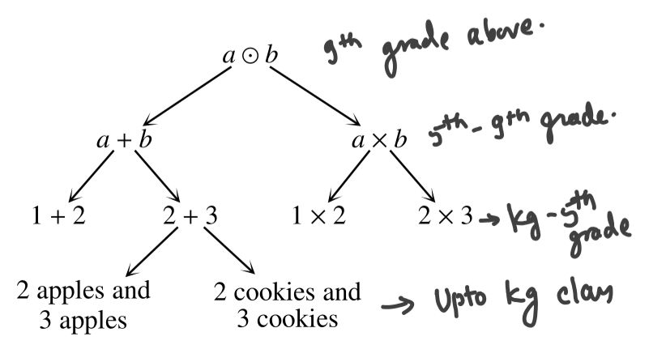
</figure>

<h4 id="more-complex-example">More complex example</h4>
<figure>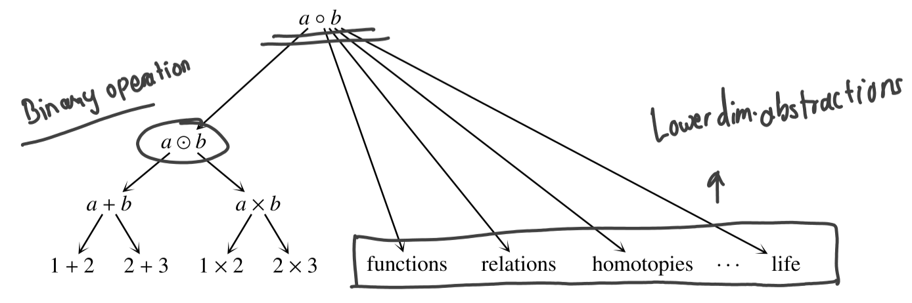
</figure>

<h2 id="chapter-3-patterns">Chapter 3 Patterns</h2>
<ul>
<li>Patterns are aesthetic and functional.
<ul>
<li>e.g. Repetitive tiles</li>
<li>base 10 numbers</li>
</ul>
</li>
<li>Category theory is all about patterns a.k.a the underlying structure</li>
<li>When you analyse patterns deeply, we can go layres deep to find patterns within patterns as well.</li>
<li>Difference of levels: mother-daughter relation between generations becomes a different relation when skipped a level: grandmother-granddaughter</li>
<li>Visual patterns help derive analogy, abstraction of the structure of those patterns help reason and do more complex operations with those analogies.
<ul>
<li>We should be able to see simple patterns visually and blow them to understand high level patterns that are complicated to visualize.</li>
</ul>
</li>
</ul>
<h3 id="example-of-using-category-theory-pattern-matching-in-real-life-conflict">Example of using category theory pattern matching in real life conflict</h3>
<figure>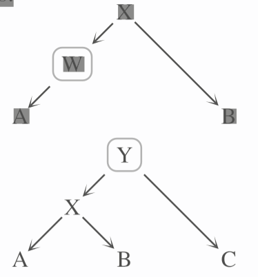
</figure>

<p>Disagreement usually arises in two forms if we follow category theory ardently. Suppose A and B are two ideas, and X and Y are abstract levels of categories:</p>
<ol>
<li>Someone sees principle W at work which is behind A, so A and B are not analogous.</li>
<li>They see another general principle Y that they think first person is invoking. And that makes some other C analogous. Then they object to that.</li>
</ol>
<h2 id="chapter-4-context">Chapter 4 Context</h2>
<ul>
<li>In category theory, truth depends on context.</li>
<li>Even things we generally assume as true will be questioned using a different context. So, we need to be very flexible with changing contexts.</li>
</ul>
<h3 id="distance">Distance</h3>
<figure>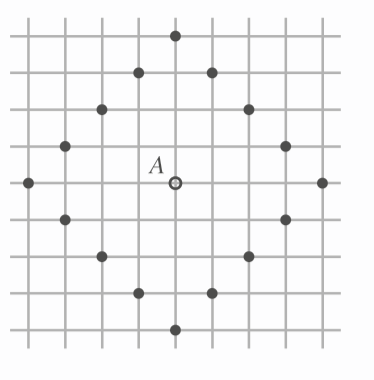
</figure>

<ul>
<li>When we take distance and try to abstract it to a circle on a line grid, we have to say we move by a fixed distance on the grid. Then that abstraction of our understanding of distance on a grid with limitation of fixed distance from a center point gets us this shape.</li>
<li>So, it tells us that we can create so many different types of distances based on the restrictions or rules. So, the context matters for truth.</li>
</ul>
<h3 id="different-context-of-numbers-we-use-in-daily-lives">Different context of numbers we use in daily lives</h3>
<ul>
<li>2 hours after 11 isn&rsquo;t 13 in a 12-hour clock. It&rsquo;s 1. It doesn&rsquo;t need to be just about 12. We literally can have n-hour clocks.</li>
<li>Rotating something by 90 degrees four times makes it back to original. a.k.a 1 + 1 + 1 + 1 = 0</li>
<li>Mixing paint 1 + 1 = 1</li>
</ul>
<h2 id="chapter-5-relationships">Chapter 5 Relationships</h2>
<ul>
<li>So context is defined by relationships or vice versa.
<ul>
<li>If we relate fruits by color, we get a different context than when we relate fruits by taste.</li>
</ul>
</li>
<li>Distance is a type of relationship but depending on whether its streets, airspace, it can be totally different. So, context matters.</li>
<li>Zero world: Multiple items can look as if they are same in certain context but when we take them somewhere else, they might start looking different.</li>
</ul>
<h3 id="example-family-relationship">Example : Family Relationship</h3>
<figure>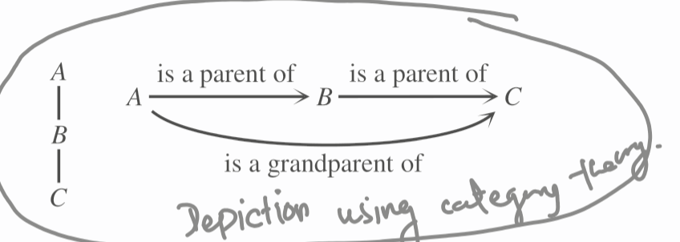
</figure>

<figure>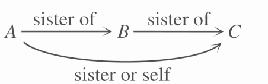
</figure>

<p>Now, same abstraction can be used with ease to other contexts as well.</p>
<figure>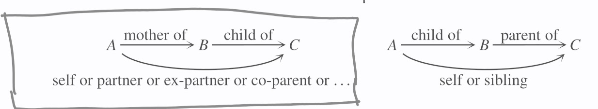
</figure>

<h3 id="example-of-mapping-the-relationship">Example of mapping the relationship</h3>
<p>Mapping relation for rotating a square.</p>
<figure>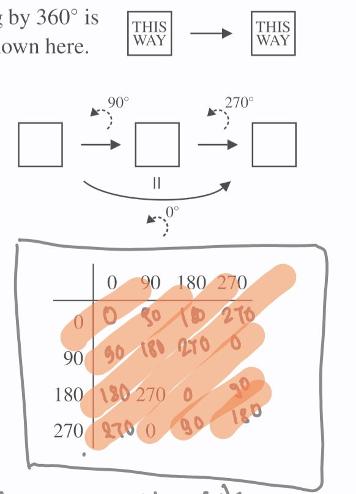
</figure>

<h3 id="arithmetic-relationship">Arithmetic Relationship</h3>
<p>Similar to squares, we have the relationship but this table is not finite. So, we don&rsquo;t even need to have full table to properly understand the pattern as a result of the relationship.</p>
<figure>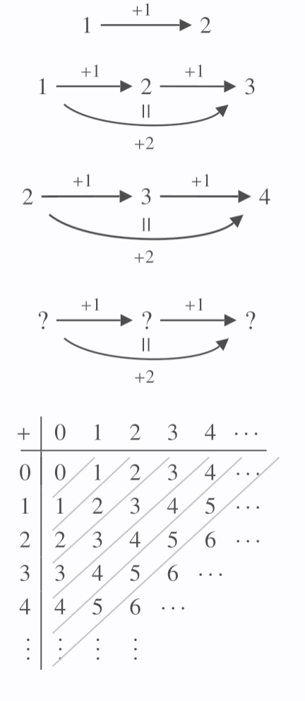
</figure>

<h3 id="quadrilaterals">Quadrilaterals</h3>
<p>By releasing certain conditions or applying certain conditions, we get to more general cases.</p>
<figure>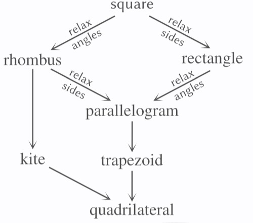
</figure>

<p>When we draw the same composition like a venn diagram, it looks like this:</p>
<p>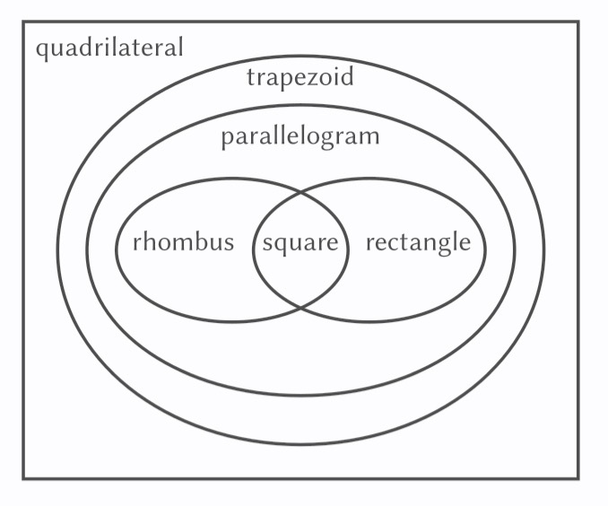
But still we have problems:</p>
<ul>
<li>All rhombuses are kites, so the kite circle needs to contain the entire rhombus circle.</li>
<li>A kite that is not a rhombus is also not a parallelogram or a trapezoid, so the kite circle needs to stick out into the random quadrilateral part without overlapping the parallelogram or trapezoid circles.</li>
</ul>
<h3 id="lattices-of-factors">Lattices of factors</h3>
<p>We see a similar type of relationship structure. Also by drawing such a structure, we can go into many more details like: what does each face of cube represent? What are edges telling us? Can we know the shape before drawing it based on prime factors it can have etc. etc.</p>
<h4 id="inferring-patterns-from-structure">Inferring patterns from structure</h4>
<p>e.g. The square faces tell us things like the fact that multiplying by 2 and then 3 is the same as multiplying by 3 and then 2, i.e. that multiplication is commutative.</p>
<p>The dimension of the shape can give us how many prime factors it has. If its a 2D shape, it only has two prime factors. If its 3d, it has 3 prime factors.</p>
<figure>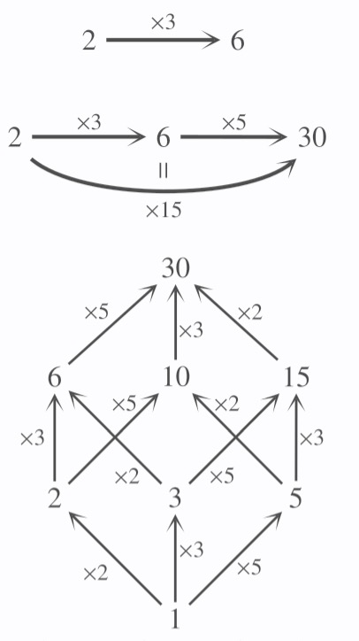
</figure>

<h4 id="inferring-other-types-of-relationships-from-this-one">Inferring other types of relationships from this one</h4>
<figure>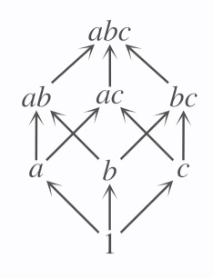
</figure>

<p>We can clearly see that same structure arises in subset relationship.</p>
<p>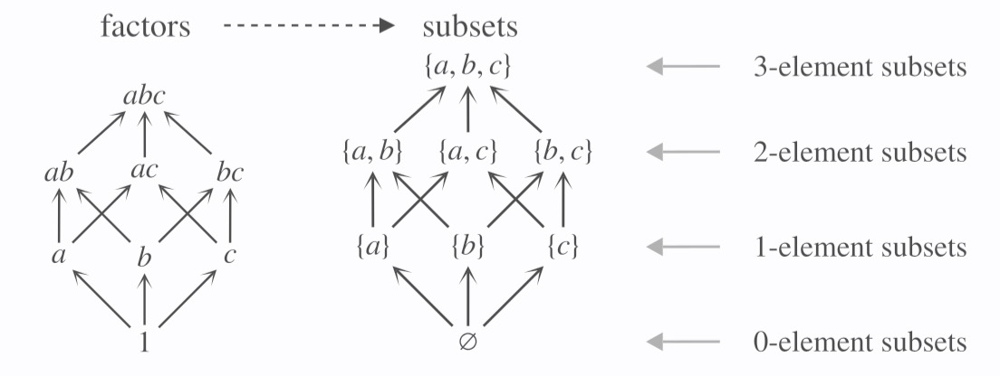
And not just maths, anywhere :</p>
<figure>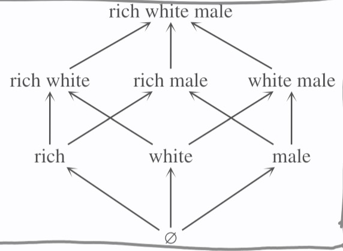
</figure>

<p>Now, what goes higher in hierarchy can be different e.g. In lattice of factors, 6 goes higher than 7 because its not prime and has two prime factors. So, we need to understand what we are defining by levels. Our levels can have meaning, hierarchy or not. Most conflict happen because we don&rsquo;t agree on level of abstractions.</p>
<h2 id="chapter-6-formalism">Chapter 6 Formalism</h2>
<ul>
<li>Mathematical notation is used for efficiency and abstraction. It becomes so complicated if we had to do all our maths using English language.</li>
<li>Concise notation to make complex entities simpler which is abstraction at its core.
<ul>
<li>e.g. 3 + 3 + 3 + 3 replaced by 3 x 4</li>
</ul>
</li>
<li>Exponential growth vs linear growth when we talk in that terms, maths and science people immediately know what is growing faster.</li>
</ul>
<h3 id="metric-spaces">Metric Spaces</h3>
<ul>
<li>Different types of distances are called &ldquo;metrics&rdquo;.</li>
<li>Some criterion for distances are:
<ul>
<li>Distance is a number</li>
<li>Distance isn&rsquo;t negative</li>
<li>Distance from same point to same point should be zero. We say d(A, B) = 0 if and only if A = B.</li>
<li>Symmetry d(A, B) = d(B, A)</li>
<li>Detours [ Triangle Inequality ] If you stop off somewhere along the way it should not make your distance any less. At best it won’t change the distance, but it might well make the journey longer.  d(A, X) + d(X, B) &gt;= d(A, B)</li>
</ul>
</li>
<li>So, these criterion define distance. By releasing certain criterion, we might get different examples.</li>
</ul>
<h3 id="basic-logic">Basic Logic</h3>
<p>Logic is based on logical implication. A <code>&gt; B A if B written as B &lt;</code> A
A only if B written as A =&gt; B</p>
<h3 id="modular-arithmetic--very-interesting-example-indeed">Modular Arithmetic (Very interesting example indeed )</h3>
<p>How do we say &ldquo;is a multiple of 6&rdquo; using formal language</p>
<p>Start by using another random letter &ldquo;k&rdquo; to represent whole number, so multiple of 6 is 6k. However, we used an extra letter. 6k = m</p>
<p>So, instead of using that notation, mathematicians came up with this notation: 6 | m  which means &ldquo;6 divides m&rdquo; or &ldquo;6 goes into m&rdquo; which is saying the same thing &ldquo;multiple of 6&rdquo; but other way around.</p>
<p>So, when we talk about modulo &ldquo;a and b occupy the same position&rdquo; we say &ldquo;a-b| 6&rdquo; for modulo arithmetic table. Then mathematicians said &ldquo;congruent modulo 6&rdquo; or &ldquo;congruent mod 6&rdquo; to say this thing for short. In notation form, a ≡ b (mod 6)</p>
<p>Now using the same notation, we write &ldquo;integers modulo 6&rdquo; as \(\mathbb{Z}_{6}\).</p>
<p>\(a \in \mathbb{Z}\) is shorthand for &ldquo;a is an element of \(\mathbb{Z}\).</p>
<h4 id="example-definition">Example definition</h4>
<ul>
<li>Let \(a, b \in \mathbb{Z}\) Then \(a \equiv b (mod 6)\) if and only if 6|b-a.</li>
</ul>
<p>Why didn&rsquo;t we write =&gt; instead of &ldquo;if and only if&rdquo; because we are trying to define the thing on the left using thing on the right. Not trying to create equivalence.</p>
<ul>
<li>Let \(n \in \mathbb{Z}_{+}\) and \(a,b \in \mathbb{Z}\). Then \(a \equiv b\) (mod n) iff \(n | b -a\).</li>
</ul>
<p>Also try to think of informal proof before trying to prove it formally and that will make most things easier.</p>
<h2 id="chapter-7-equivalence-relations">Chapter 7 Equivalence Relations</h2>
<ul>
<li>Category theory if allowed to study with any kind of relationship can get really chaotic. So, mildest conditions for type of relationship is defined.</li>
<li>Equality without a good condition is hard. So, reasons for equality need to be defined.</li>
<li>Relations really can be abstract a RELN b.</li>
<li>Reflexivity involves only one object at a time, Symmetry involves two, Transitivity involves three. <strong>But it doesn&rsquo;t mean these three or two need to be distinct objects</strong>.</li>
</ul>
<h3 id="reflexivity">Reflexivity</h3>
<ul>
<li>A relation is called reflexive if it sees everything related to itself. i.e. every object satisfies an abstract relation a RELN a. This is property of relation, not of object/node.</li>
</ul>
<figure>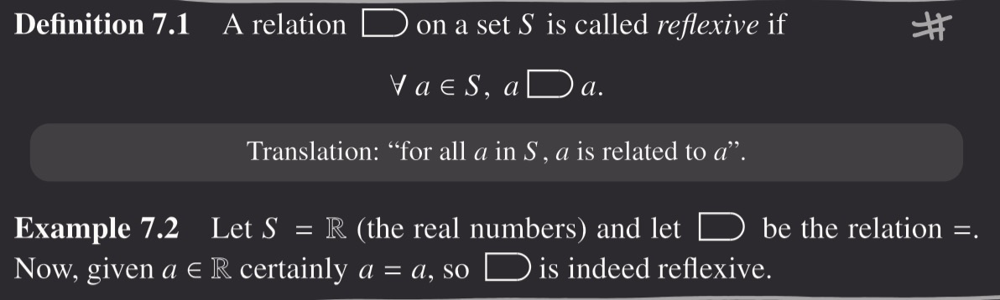
</figure>

<h4 id="asking-questions-about-reflexivity-of-relations">Asking questions about reflexivity of relations</h4>
<figure>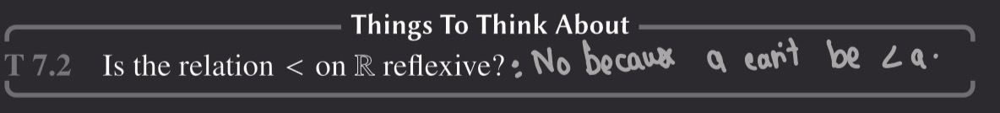
</figure>

<h4 id="proving-via-counter-example">Proving via counter example</h4>
<figure>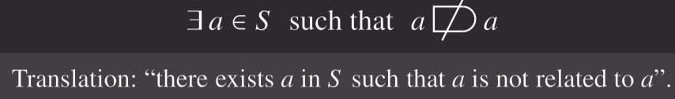
</figure>

<h3 id="symmetry">Symmetry</h3>
<ul>
<li>If its same both way around.</li>
<li>If definition says a RELN b =&gt; b RELN a, then if we switch the roles of a and b we get, b RELN a =&gt; a RELN b. so, combining those we get: a RELN b &lt;=&gt; b RELN a.</li>
<li>So, statements are logically equivalent. a RELN b and b RELN a.</li>
</ul>
<figure>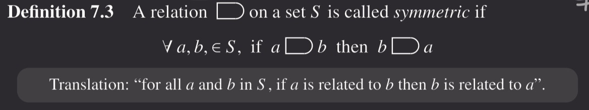
</figure>

<h4 id="example-where-its-symmetric">Example where its symmetric</h4>
<figure>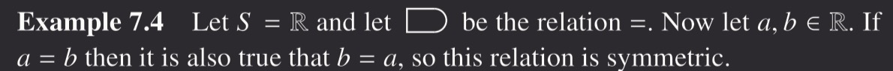
</figure>

<h4 id="example-where-its-not-symmetric">Example where its not symmetric</h4>
<figure>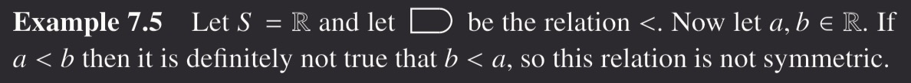
</figure>

<h3 id="transitivity">Transitivity</h3>
<figure>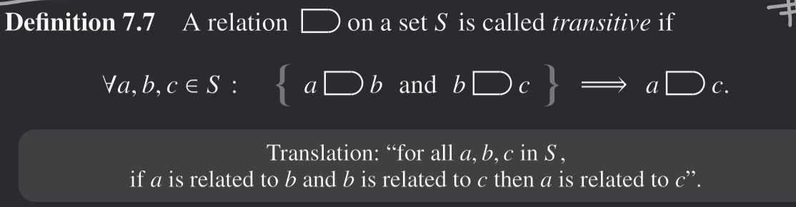
</figure>

<figure>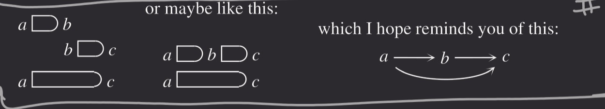
</figure>

<p>The case of less than relation which was neither symmetric nor reflexive is at least transitive.</p>
<figure>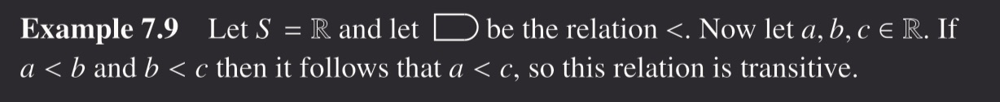
</figure>

<h3 id="equivalence-relation">Equivalence Relation</h3>
<ul>
<li>If a relation RELN on a set S is reflexive, symmetric and transitive.</li>
</ul>
<figure>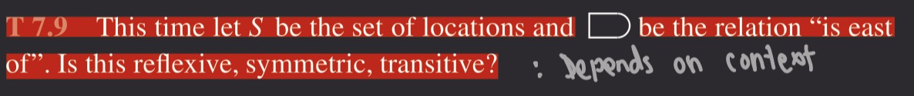
</figure>

<p>The relation itself depends on the kind of surface we are dealing with. If its a globe, how do we say what&rsquo;s east. So, due to such reasons we need to restrict our context first.</p>
<ul>
<li>Equivalence relations are too well behaved that they are not interesting. So, we relax our conditions.</li>
</ul>
<h2 id="chapter-8-categories">Chapter 8 Categories</h2>
<ul>
<li>Based on the equivalence relation and relaxing of it, we are ready to define category. It contains three parts:
<ul>
<li>Data</li>
<li>Structure</li>
<li>Properties</li>
</ul>
</li>
</ul>
<h3 id="data">Data</h3>
<ul>
<li>Objects can be anything</li>
<li>world &ldquo;S&rdquo; of objects we are going to consider category \(\mathcr{C}\)</li>
<li>Relationships can be &ldquo;less than&rdquo;, &ldquo;equals&rdquo; etc. We call them <strong>Morphisms</strong> or <strong>Arrows</strong>.</li>
<li>We really aren&rsquo;t asking whether they are equal in category. We are asking &ldquo;in what ways are these objects related?&rdquo;</li>
<li>No limit to number of arrows that can go from one object to other.</li>
<li>When we focus on set of objects we write collection of arrows as \(\mathcr{C}(a,b)\). Or we can write in terms of Homsets in Category Theory hom<sub>c</sub>(a,b). Set of these morphisms is called homset.</li>
</ul>
<h3 id="structure">Structure</h3>
<ul>
<li>We don&rsquo;t go with stricter conditions of equivalence like last time. We relax conditions.</li>
<li>For any object a, there must at least be an arrow to itself called <strong>identity</strong>.</li>
<li>Composition. For every relation that goes from a to b and b to c there will be a composed arrow that goes from a to c.
<ul>
<li>They don&rsquo;t have to be transitive or true/false. We just need to ensure that a morphism exists.</li>
<li>Arrows have to be composable. Target of first one must match the source of second and so on.</li>
</ul>
</li>
</ul>
<figure>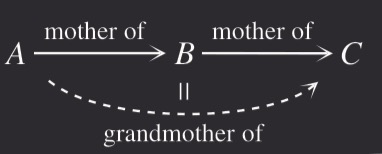
</figure>

<h3 id="properties">Properties</h3>
<ul>
<li>One for identity</li>
<li>One for composing more than two arrows</li>
<li>Also called axioms. These are the ones governing structure.</li>
</ul>
<h4 id="identity-morphism">Identity Morphism</h4>
<ul>
<li>Does not do anything. Starts at the object and returns the object.
<ul>
<li>e.g. 0 is the identity for addition on real numbers.</li>
</ul>
</li>
</ul>
<figure>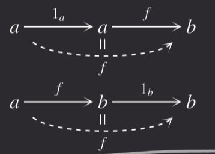
</figure>

<ul>
<li>So, here : f ˆ 1<sub>a</sub> = f = 1<sub>b</sub> ˆ f</li>
</ul>
<h4 id="composition-morphism">Composition Morphism</h4>
<figure>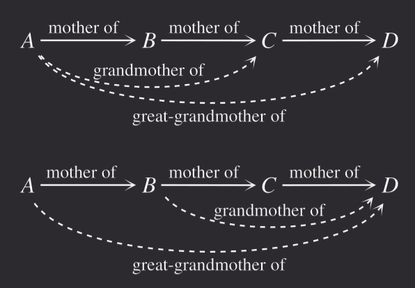
</figure>

<p>This is how we compose these arrows. This is associativity. h ˆ ( g ˆ f ) = (h ˆ g) ˆ f</p>
<figure>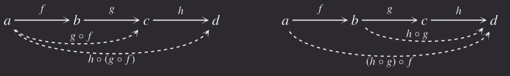
</figure>

<h3 id="formal-definition">Formal definition</h3>
<p>A category C consists of:</p>
<ul>
<li>Data
<ul>
<li>Objects: a collection obC of objects</li>
<li>Arrows: for objects a, b ∈ obC, a collection C(a, b) of arrows a -&gt; b</li>
</ul>
</li>
<li>Structure
<ul>
<li>Identities: for any object a ∈ obC an identity arrow a -1<sub>a</sub>-&gt; a</li>
<li>Composition: for any arrows a -f-&gt; b -g-&gt; c, where a,b,c are nodes and f,g are relations.  a composite arrow a -g◦f-&gt; c</li>
</ul>
</li>
<li>Properties
<ul>
<li>Unit laws: for any arrow a -f-&gt; b, f ◦ 1<sub>a</sub> = f = 1<sub>b</sub> ◦ f</li>
<li>Associativity: for any arrows a -f-&gt; b -g-&gt; c -h-&gt; d, (h ◦ g) ◦ f = h ◦ (g ◦ f)</li>
</ul>
</li>
<li>Arrows are also called morphisms, and the composite g ◦ f is also written gf .</li>
</ul>
<p>We loosened equivalence to this. And for equality, we will look at invertibility which is more subtle notion of sameness in categories so that they are more useful to build everything.</p>
<h3 id="sizes">Sizes</h3>
<ul>
<li>Category where objects and morphisms form a set is called <strong>small</strong>.</li>
<li>Category where each individual collection C(a,b) is a set, then its called <strong>locally small</strong>. In this case, they might form a collection, not a set.</li>
</ul>
<h3 id="geometry-of-associativity">Geometry of associativity</h3>
<figure>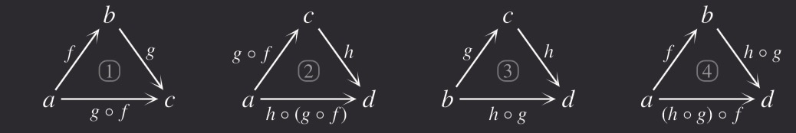
</figure>

<p>This gets translated into a full pyramid like 3d image.</p>
<figure>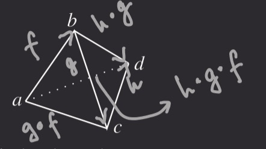
</figure>

<h3 id="drawing-a-category">Drawing a category</h3>
<ul>
<li>Usually don&rsquo;t draw identity arrows. Assumed to exist there.</li>
<li>Omit arrows whose existence can be deduced from composition.</li>
<li>Physical positioning doesn&rsquo;t affect structure.</li>
</ul>
<figure>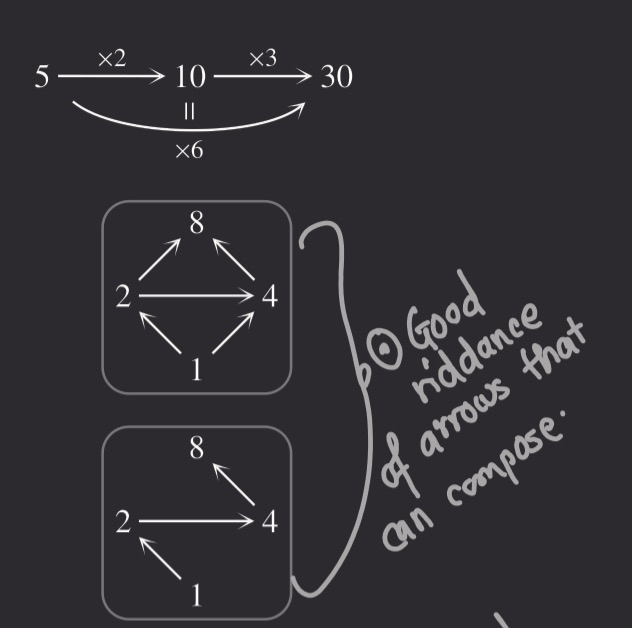
</figure>

<figure>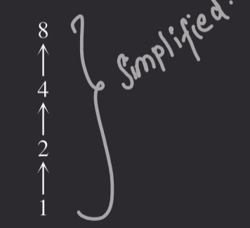
</figure>

<h2 id="chapter-9-basic-maths">Chapter 9 Basic Maths</h2>
<ul>
<li>Trivial symmetry : A symmetry that might not be considered useful in real life. e.g. rotation by 0 degrees for a square is its identity arrow which is a trivial symmetry.</li>
<li>For a category we draw from factors, we started by pointing arrows from prime factors toward the number. If we reverse the arrows, it still contains same information as the last category. Such a category where arrows are reversed, is called a <strong>Dual Category</strong>.</li>
</ul>
<h3 id="category-theory-in-number-system">Category Theory in Number system</h3>
<ul>
<li>Thinking of these numbers in terms of addition</li>
<li>objects : natural numbers</li>
<li>arrows : a -&gt; b whenever a ≤ b</li>
<li>Every other number is related to itself and every other but since these can be derived from plain relation we can write it as: 0 -&gt; 1 -&gt; 2 -&gt; 3 &hellip;</li>
<li>We need a less than or equal to or greater than or equal to to satisfy the identity constraint. Now, we just know what dual here looks like as well.</li>
</ul>
<h3 id="summing-up-equivalence-relations">Summing up equivalence relations</h3>
<figure>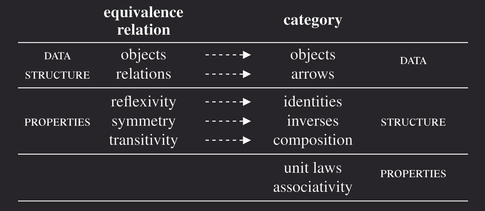
</figure>

<h2 id="chapter-10-ordered-sets">Chapter 10 Ordered Sets</h2>
<h3 id="tosets">Tosets</h3>
<ul>
<li>Totally ordered sets</li>
<li>Category in which for all objects a,b there is exactly one arrow between them.</li>
<li>Can&rsquo;t have arrow both ways from a -&gt; b and b -&gt; a unless a = b in that case both arrows mean identity.</li>
<li>e.g. Category of natural numbers with relation a ≤ b is a totally ordered set according to the definition.</li>
</ul>
<h4 id="examples-of-when-its-not-toset">Examples of when its not toset</h4>
<figure>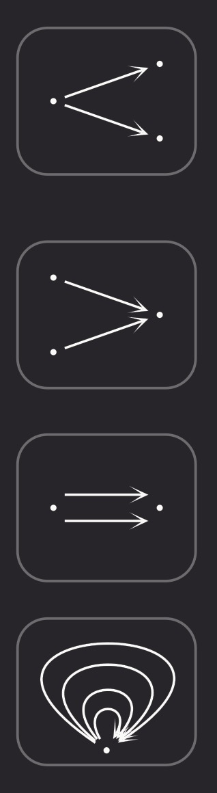
</figure>

<p>Two objects on the right don&rsquo;t have morphism betwen them.
Same for two objects on the left on second one.
Two arrows from one object to another on the third one.
Multiple arrows even though one object on the fourth one.</p>
<h4 id="non-categorical-definition-of-ordered-set">Non-categorical definition of ordered set</h4>
<p>An ordered set is a set S equipped with a binary relation ≤ satisfying</p>
<ul>
<li>reflexivity: a ≤ a for all a ∈ S</li>
<li>antisymmetry: if a ≤ b and b ≤ a then a = b</li>
<li>transitivity: if a ≤ b and b ≤ c then a ≤ c</li>
<li>trichotomy: for all a, b ∈ S , a ≤ b or b ≤ a</li>
</ul>
<h4 id="now-coming-to-categorical-definition-from-this-one">Now coming to categorical definition from this one</h4>
<p>Reflexivity is a special case of trichotomy: if we put a = b in the definition of trichotomy we get “a ≤ a or a ≤ a”, which is reflexivity. It’s useful to state it as a condition though, because when we relax the conditions later we will need to specify it.
In the categorical definition we don’t need the other conditions because:</p>
<ul>
<li>Reflexivity comes from the category having identities.</li>
<li>Transitivity comes from composition in the category.</li>
<li>Antisymmetry and trichotomy both come from there being exactly one arrow between a and b: antisymmetry comes from there being at most one, and trichotomy from there being at least one.</li>
</ul>
<h3 id="posets">Posets</h3>
<ul>
<li>Partially ordered sets</li>
<li>Relaxing the condition of tosets saying there can be at most one arrow between two objects, but possibly none.</li>
<li>The condition we need to drop is trichotomy, as we now want to allow pairs of objects that are not related either way round.</li>
</ul>
<h4 id="non-categorical-definition-of-posets">Non categorical definition of posets</h4>
<p>A partially ordered set or poset is a set S equipped with a relation ≤ satisfying:</p>
<ul>
<li>reflexivity: a ≤ a for all a ∈ S</li>
<li>antisymmetry: if a ≤ b and b ≤ a then a = b</li>
<li>transitivity: if a ≤ b and b ≤ c then a ≤ c.</li>
</ul>
<h2 id="chapter-11-small-mathematical-structures">Chapter 11 Small mathematical structures</h2>
<ul>
<li>For a category to be defined, we can just draw its structure and call it an abstract category.</li>
<li>A set is a category with no arrows between objects, just the identity arrow. Such a category is called <strong>Discrete</strong> category. Also we call identity arrows &ldquo;trivial&rdquo;, so discrete category can be thought of as one that has no non-trivial arrows.</li>
</ul>
<h3 id="monoids">Monoids</h3>
<p>Suppose every time we compose that loop with itself we get a new arrow. In that case this category has only one object but infinitely many arrows. If we call the basic arrow f then:</p>
<ul>
<li>There is also f ◦ f which we might write as f<sup>2</sup>.</li>
<li>Then there is f ◦ f ◦ f which we might write as f<sup>3</sup>.</li>
<li>In fact there’s f<sup>n</sup> for every n ∈ N.</li>
</ul>
<p>Note it makes sense to include 0 in N here, with f<sup>0</sup> = 1, the identity.
So, even if its a loop, its not identity by default. We have multiple relations from itself to itself.</p>
<p>Example would be when natural numbers are not written as separate blobs but instead written as infinite loop relations like +1, +2, +3 &hellip; etc. We instead now have a separate arrow for each natural number instead of objects.
Composition was like multiplication, but really it was addition of natural numbers in the exponent: f<sup>n</sup> ◦ f<sup>m</sup> = f<sup>n+m</sup>.</p>
<p>By now, we have seen three ways of putting category structure on natural numbers:</p>
<ol>
<li>Using factors</li>
<li>Using size</li>
<li>Using addition</li>
</ol>
<p>In the first two, numbers were objects. How arrows formed were different. Now, in third case, we assumed one object and mapped everything into the arrows instead. So, this is a different abstraction that is really powerful.</p>
<h4 id="definition">Definition</h4>
<p>A category with only one object is called a monoid.</p>
<h4 id="consequences">Consequences</h4>
<p>Since there is just one object, all arrows are composable. Now, coming back to definition of binary operation, composition is generalization of binary operation. So, when there is just one object, composition is a binary operation on the arrows.</p>
<h4 id="non-categorical-definition">Non categorical definition</h4>
<p>A monoid is a set M equipped with an identity 1 and a unital and associative binary operation ◦.
The monoid is sometimes written fully as (M, ◦, 1).</p>
<ul>
<li>unital means that for all m ∈ M, 1 ◦ m = m = m ◦ 1</li>
<li>associativity means that for all a, b, c ∈ M, (a ◦ b) ◦ c = a ◦ (b ◦ c)</li>
</ul>
<h4 id="relation-between-these-two">Relation between these two</h4>
<dl>
<dt>Objects of monoid</dt>
<dd>Single Dummy object and arrows</dd>
<dt>Identity object</dt>
<dd>Identity arrow</dd>
<dt>Binary operation</dt>
<dd>Composition</dd>
<dt>Unitality</dt>
<dd>Unitality</dd>
<dt>Associativity</dt>
<dd>Associativity</dd>
</dl>
<p>In such case where there is one object, we really don&rsquo;t give importance to the object and make it all about the arrows and composability.</p>
<h4 id="conclusion">Conclusion</h4>
<ul>
<li>Natural numbers are monoid under addition. Free monoid on one generator. One object, one loop and its repeated composition makes a new arrow.</li>
<li>Now coming to mod(n) category, we impose extra rules because it loops on itself like f<sup>5</sup> = f<sup>4</sup> . f = 1 . f = f . So, these extra loops on mod(4) so this becomes a monoid but with constraint f<sup>4</sup> = 1 which makes it integer mod(4). This can be generalized to Z<sub>n</sub> with f<sup>n</sup> = 1 since it loops on itself it won&rsquo;t need two different kind of relationships to get all numbers. e.g. For natural numbers, we cant get to negative numbers by just addition. But, in this case, since it loops after a certain point, they become composable for integers as well. Such a beautiful concept.</li>
</ul>
<h3 id="groups-and-groupoids">Groups and Groupoids</h3>
<ul>
<li>Integers are different from natural numbers in having negative numbers, which are inverses with respect to addition, also called &ldquo;additive inverses&rdquo;.</li>
<li>Inverses undo the binary operation wrt that element, taking back to identity.</li>
<li>An inverse for an element a of a monoid (M, ◦, 1) is an element b such that a ◦ b = 1 and b ◦ a = 1.</li>
<li>In general definition of monoids, they don&rsquo;t have inverses for every element. If a monoid does, then that&rsquo;s a special case. In case of normal natural numbers under addition, only 0 has a additive inverse. Others don&rsquo;t. But, in mod operation under integers Z<sub>n</sub>, there are inverses for each element.
<ul>
<li>e.g. in mod(4) we have inverses like this:
<ul>
<li>0 &ndash; 0</li>
<li>1 &ndash; 3</li>
<li>2 &ndash; 2</li>
<li>3 &ndash; 1</li>
</ul>
</li>
</ul>
</li>
<li>Now, coming back to monoidal representation: The arrow f<sup>k</sup> has inverse f<sup>n−k</sup> since f<sup>k</sup> ◦ f<sup>n−k</sup> = f<sup>n</sup> = 1.</li>
</ul>
<h4 id="definition">Definition</h4>
<p>Group is a monoid in which every element has an inverse.</p>
<h4 id="non-categorical-definition">Non categorical definition</h4>
<p>A group consists of a set G equipped with a binary operation ◦ and an identity element 1 satisfying unit laws and associativity, and such that every element has an inverse with respect to ◦</p>
<figure>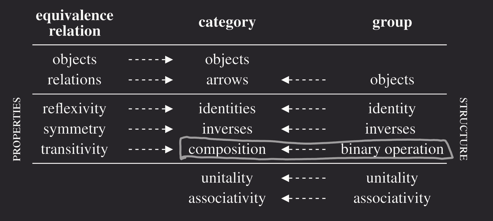
</figure>

<p>Note that in a category coming from an equivalence relation the arrows are restricted — there can be at most one from any object a to an object b. By contrast in a category coming from a group the objects are restricted: there is just one, the “dummy” object. <strong>This is the main idea</strong>.</p>
<p>Tables arising from binary operation on a group are called <strong>Cayley tables</strong>. In such tables, each element appears once in each row and each column. Used to represent small categorical relationships.</p>
<h4 id="extras">Extras</h4>
<ul>
<li>Groups are often introduced directly via symmetry. Two symmetries of a given shape can be combined to produce another symmetry of that shape, and that structure forms a group.</li>
<li>Symmetry doesn&rsquo;t have to be visual. e.g. in x2 + 2xy + y2 = 0, x and y can be interchanged and that&rsquo;s symmetry in equations. Such group theory is called algebraic group theory.</li>
<li>Algebraic topology starts from the idea that you can take a topological space and encapsulate some of its structure as a group.</li>
<li>Algebraic geometry comes from studying geometry by encapsulating some of its structure as a group.</li>
<li>Algebraic number theory studies numbers via group structures.</li>
</ul>
<h4 id="defining-a-groupoid">Defining a groupoid</h4>
<ul>
<li>A groupoid is a category in which every arrow has an inverse. Not expecting it to be a monoid, but expecting it to have inverses.</li>
<li>Thus, by implying and relaxing certain conditions, we get different types of category.</li>
</ul>
<h3 id="points-and-paths">Points and Paths</h3>
<ul>
<li>Now studying shapes and shape of space.</li>
<li>Topology studies what makes the shape of one space really different from the shape of another.
<ul>
<li>e.g. If you just moved a wall inwards slightly then the size of the space would change but in some sense not really the shape. Likewise if you shrank the entire building.</li>
</ul>
</li>
<li>Given space X, we can make category with:
<ul>
<li>objects : points in X</li>
<li>arrows : arrow a -&gt; b is a path from a to b in that space</li>
</ul>
</li>
<li>Now comes the question: how do we say if two paths are different, and hwo do we get a composition on these paths.</li>
<li>There comes the definition of homotopy to define what really counts as same path. It tries to see if the paths by continuous deformation can go from one to another without breaking or not. If it doesn&rsquo;t break, then those paths would be counted as same, etc. etc.</li>
<li>So, we just wanted to see that we can create category to study topology as well.</li>
</ul>
<h2 id="chapter-12-sets-and-functions">Chapter 12 Sets and Functions</h2>
<ul>
<li>A first example of large category of mathematical structure.</li>
<li>By zooming out, we study larger structures.</li>
<li>Poset is a set of objects equipped with some ordering on it. So, the collection of all possible posets is also a category.</li>
</ul>
<figure>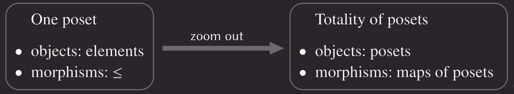
</figure>

<ul>
<li>From one smaller mathematical structure, we built a larger structure. Same can be done for monoids, groups, spaces etc. And the starting point for all these structures is an underlying set.</li>
<li>So, sets are special in some way and then the maps between structures is then concept of a function.</li>
</ul>
<h3 id="comparisons-with-set-theory">Comparisons with set theory</h3>
<ul>
<li>When mathematicians tried to make the idea of numbers very precise, they found they had to deal with sets first, and then build numbers out of particular sets. When mathematicians became really serious about developing mathematics completely rigorously, they started with sets. Set theory was developed as a foundation of mathematics.</li>
<li>Set theory starts with the concept of membership as a basic concept, and builds up from the idea of elements being members of sets. By contrast, category theory builds up from the notion of relationships which is why our basic concepts in category theory are elements (objects) and relationships (arrows) between them, rather than membership. <strong>Comparing set theory with category theory</strong> for same definition of sets.</li>
<li>Category theory takes sets and functions as the basic starting point, rather than sets and membership. But these ideas are converse of each other. From memberships, functions can be built and vice versa. Its like choosing what you consider as more fundamental and start there.</li>
</ul>
<h3 id="function">Function</h3>
<ul>
<li>In categorical approach, function is a relationship between sets. Goes from one set to another.</li>
<li>There are restrictions on what is a function. Classical definition of a function with domain and co-domain.
<ul>
<li>Every element needs to map to at least some output.</li>
<li>One input can&rsquo;t produce two different outputs. However, we can have multiple inputs producing one output.</li>
</ul>
</li>
<li>Let A and B be any sets. A function A -f-&gt; B assigns to every element a ∈ A an element f(a) ∈ B.</li>
<li>In very formal set theory the definition happens by means of “ordered pairs”: we construct a new set from A and B consisting of pairs of elements, one from A and one from B, representing the input–output pairs that define f</li>
<li>f: A -&gt; B means from set A to set B</li>
<li>f: a |-&gt; b means from element a to element b</li>
<li>Let f, g be functions A B. We say f = g as functions whenever ∀a ∈ A f(a) = g(a)</li>
</ul>
<h3 id="structure-identities-and-composition">Structure : Identities and Composition</h3>
<dl>
<dt>Identity</dt>
<dd>Given any set A there is an identity function A A which just sends every element of A to itself. We can call it 1A and define it by ∀a ∈ A 1A(a) = a.</dd>
<dt>Composition</dt>
<dd>We define the composite function g ◦ f by: (g ◦ f)(a) = g(f(a))</dd>
</dl>
<p>This is pretty plain definition of function identity and composition. Nothing too fancy here.</p>
<figure>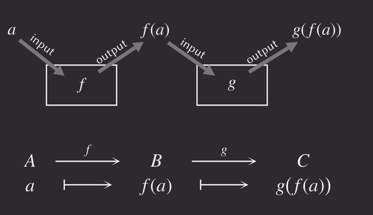
</figure>

<h3 id="making-a-category-of-sets-and-functions">Making a category of sets and functions</h3>
<ul>
<li>Need to check that identity really behaves like identity, both on the left and right, and composition is associative.</li>
</ul>
<h4 id="identity">Identity</h4>
<p>Even when we zoom in to individual elements of set, we see the identity structure.</p>
<figure>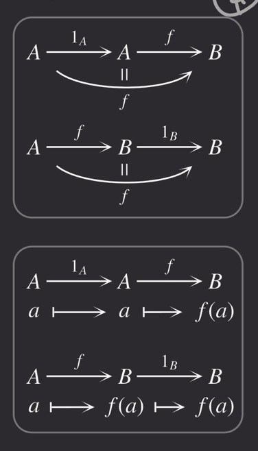
</figure>

<h4 id="associativity">Associativity</h4>
<p>For A -f-&gt; B -g-&gt; C -h-&gt; D, we need to show that :
(h ◦ g) ◦ f = h ◦ (g ◦ f )
that is, ∀a ∈ A:  ((h ◦ g) ◦ f)(a) = (h ◦ (g ◦ f ))(a)</p>
<p>If we apply functions to both, we finally come at h(g(f(a))) which proves that it follows associativity.</p>
<h3 id="category-of-sets-and-functions-formalised">Category of sets and functions [ Formalised ]</h3>
<p>This category is typically written as Set and is given by:</p>
<ul>
<li>objects: all sets</li>
<li>morphisms: a morphism A B is a function A B</li>
<li>identities: given a set A, the identity is the identity function 1A</li>
<li>composition: composition of morphisms is composition of functions.</li>
</ul>
<p>Now, this <strong>Set</strong> becomes a prototype to be able to use in larger mathematical structures. That way we can move from elements in traditional sets to treating structures as categorical <strong>Set</strong>.</p>
<h2 id="large-world-of-mathematical-structures">Large world of mathematical structures</h2>
<p>From the miniature world where we were looking at each element, we will zoom out and see larger category.
The restrictions are the structures.</p>
<dl>
<dt>Sets</dt>
<dd>No structure</dd>
<dt>Monoids</dt>
<dd>Binary Operation, Identity</dd>
<dt>Groups</dt>
<dd>Binary Operation, Identity, Inverses</dd>
</dl>
<h3 id="homomorphism">Homomorphism</h3>
<ul>
<li>Any function between two algebraic structures &ndash; like monoids, groups, posets etc. &ndash; that preserves their operations and properties.</li>
<li>The small object is a monoid and the relationship between monoids is also a monoid. Then that relation is called monoid homomorphism.</li>
</ul>
<h3 id="monoids">Monoids</h3>
<ul>
<li>We need to define &ldquo;function between monoids&rdquo; as part of large category.</li>
</ul>
<h4 id="understanding-previous-definitions-of-monoids-as-set">Understanding previous definitions of monoids as Set</h4>
<p>A monoid has:</p>
<ul>
<li>data: a set of objects</li>
<li>structure: an identity and a binary operation</li>
<li>properties: unitality and associativity.</li>
</ul>
<p>So it can be broadly summed up as a “set equipped with extra structure (satisfying some properties)”. Whenever we have “sets-with-structure” we can look for “sensible” functions between them, that is, functions that respect that structure.</p>
<!--list-separator-->
<ul>
<li>
<p>Looking at previous example</p>
<ul>
<li>Monoid of natural numbers N under addition (N, +, 0) and monoid of integers Z under addition (Z, +, 0).</li>
<li>Now, we are trying to map function between the monoids. f: N -&gt; Z with f(n) = n, so every natual number is mapped to itself as an integer.
<ul>
<li>Now, the binary operation must hold in this new function that we created. i.e. f(n+m) = n + m and f(n) + f(m) = n + m. Since we got, f(n+m) = f(n) + f(m) this holds the binary operation a.k.a preserves addition.</li>
<li>Functions like f(n) = n + 1 however isn&rsquo;t a sensible function because it leads to f(n+m) = n+ m+ 1 and f(n) + f(m) = n + 1 + m + 1 = n + m + 2. So, it doesn&rsquo;t preserve addition.</li>
<li>Also our structure needs to respect identity of monoid structure as well. In this case, f(0) = 0, which is identity in Z as well, so good. Preserves identity.</li>
</ul>
</li>
</ul>
</li>
</ul>
<h4 id="monoid-morphism-monoid-homomorphism">Monoid Morphism / Monoid Homomorphism</h4>
<ul>
<li>A structure preserving morphism that leaves things the same.</li>
<li>Let A and B be monoids, and write the identity as 1 and the binary operation as ◦ in each case. Then a monoid homomorphism from A to B is a function f : A -&gt; B on the underlying sets, such that
<ul>
<li>f respects ◦ ( Binary operation ) : for all x, y ∈ A we have f(x ◦ y) = f(x) ◦ f(y), and</li>
<li>f respects the identity: f(1) = 1.</li>
</ul>
</li>
</ul>
<p>In general not every function on the underlying sets will respect the monoid structure, so this is a restriction to some special functions.</p>
<figure>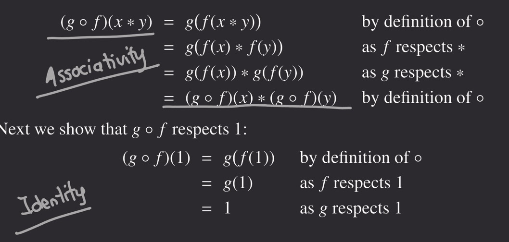
</figure>

<p>Then, we finally get our category <strong>Mnd</strong> whose objects are all the monoids and whose morphisms are all the monoid morphisms between them.</p>
<h3 id="groups">Groups</h3>
<p>A group is a monoid with some extra structure, so a group homomorphism should at least be a monoid homomorphism, but it should also preserve the extra structure. So we might think that a group homomorphism f : A -&gt; B should be a function on the underlying sets such that:</p>
<ul>
<li>the binary operation ◦ is respected: ∀x, y ∈ a, f(x ◦ y) = f(x) ◦ f(y),</li>
<li>the identity 1 is respected: f(1) = 1, and</li>
<li>inverses are respected: ∀x ∈ A, f(x<sup>−1</sup>) = (f(x))<sup>-1</sup></li>
</ul>
<p>The interesting thing in groups is that preserving the operation often forces identity and inverse preservation, due to the existence of inverses.</p>
<h3 id="posets">Posets</h3>
<p>Relation ≤ is a poset. An order preserving function f: A -&gt; B between posets satisfies : if x ≤ y in A, then f(x) ≤  f(y) in B.</p>
<h4 id="order-preserving-poset">Order Preserving poset</h4>
<p>Poset N with ≤. Define f(n) = n+1
If m ≤ n, then f(m)  = m+1 ≤ n+1 = f(n) which is preserving order.</p>
<h4 id="not-order-preserving-poset">Not order preserving poset</h4>
<p>Poset N with ≤. Define f(n) = -n,
e.g. m ≤ n ; then f(1) = -1 ≥ -2 = f(2) Which reversed the order
It doesn&rsquo;t always preserve order. So, not order preserving poset.</p>
<h4 id="category-of-posets">Category of posets</h4>
<ul>
<li>Objects are posets</li>
<li>Morphisms need to be order preserving functions preserving ≤ .</li>
</ul>
<h4 id="example">Example</h4>
<p>Here, there are three different orderings:</p>
<ol>
<li>The way which the arrows are drawn in: where a -&gt; b whenever a is a factor of b. Written as operation |.</li>
<li>THe usual ordering according to size a ≤ b</li>
<li>The physical levels on the drawing ( How many prime factors for each element depends on what level it is in ) Written as operation &lt;&gt;</li>
</ol>
<p>So, we can define binary relationships here.
Given a number a, N(a) be the number of terms in prime factorization. Then for each level of cube, we can write N(a) ≤ N(b).</p>
<table>
	<thead>
			<tr>
					<th>a</th>
					<th>N(a)</th>
			</tr>
	</thead>
	<tbody>
			<tr>
					<td>42</td>
					<td>3</td>
			</tr>
			<tr>
					<td>6, 14, 21</td>
					<td>2</td>
			</tr>
			<tr>
					<td>2, 3, 7</td>
					<td>1</td>
			</tr>
			<tr>
					<td>1</td>
					<td>0</td>
			</tr>
	</tbody>
</table>
<p>So, we have three orderings: (A, |), (A, ≤), (A, &lt;&gt;).</p>
<p>The factor operation is order preserving because (A, |) -&gt; (A, ≤)
But the hierarchy operation is not order preserving because 6 lies above 7 in hierarchy level. So, the hierarchy operation 7 &lt;&gt; 6 will imply 7 ≥ 6. So, the order isn&rsquo;t preserved.</p>
<figure>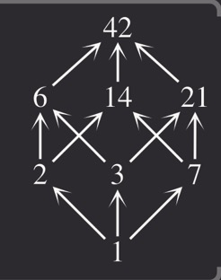
</figure>

<h3 id="top">Top</h3>
<p>Category of topological spaces Top where:</p>
<ul>
<li>objects: all the topological spaces</li>
<li>morphisms: a morphism A B is a continuous function A B.</li>
</ul>
<p>Homotopy is the notion of continuous deformation which is in some sense really the point of topology, but it requires more dimensions of thought than are available in the category of spaces and continuous maps. One way to deal with those higher dimensions is to go into higher-dimensional category theory, which we will briefly discuss at the end of the book. Another way is to try and work out how to detect traces of the higher dimensions in lower-dimensional algebra so that we can avoid creating new types of algebra to deal with it.</p>
<h3 id="normal-categories">Normal Categories</h3>
<ul>
<li>Sometimes we get a little bored of all these parentheses so we might omit them and just write Fx, Fy and Ff trusting that using uppercase and lowercase letters makes the point that F is applied to the lowercase letters.</li>
<li>These morphisms between categories are so important that they have an actual name rather than just “morphisms of categories”: they are called functors.</li>
<li>The property of preserving identities and composition is called functoriality.</li>
</ul>
<h3 id="matrices">Matrices</h3>
<ul>
<li>One of my favorite examples is the category of matrices. In this category again it’s not the objects that are really interesting but the morphisms: the morphisms are matrices. That is, we regard matrices as a sort of map.</li>
<li>In a bit of a leap of imagination we can regard an a × b matrix as a morphism a b, in which case a b × c matrix is a morphism b c and the condition of composability matches the condition of when we can multiply matrices. We get a category Mat with
<ul>
<li>objects: the natural numbers</li>
<li>arrows: an arrow a b is an a × b matrix</li>
<li>composition: matrix multiplication.</li>
</ul>
</li>
<li>This might seem like a weird category until we consider that one of the points of matrices is actually to encode linear maps between vector spaces. In that way, matrices really do come from some kind of map, it’s just that the encoding has taken them quite far away from looking like a map. That typically makes it very handy for computation (especially if you’re telling a computer how to do it) but can be quite baffling for students if they’re just told about matrices for no particular reason — like so much of math.</li>
</ul>
<h2 id="isomorphisms">Isomorphisms</h2>
<ul>
<li>The harder conditions we put for sameness, it becomes more about the objects than the relationship and the patterns in it. So, we want to find some sense in which the object can be compared. And for that we need some notion of &ldquo;sameness&rdquo;.
<ul>
<li>e.g. Equality sign is a sign of sameness for algebraic equations.</li>
<li>Multiply sign is same as adding that number that many times.</li>
</ul>
</li>
</ul>
<h3 id="invertibility">Invertibility</h3>
<ul>
<li>A invertible arrow between them.</li>
<li>We can use that as one condition to say that they are same.</li>
<li>e.g. On real numbers, we can say addition is invertible. But multiplication by 0 or square root, they are not invertible. Either they don&rsquo;t know where to go back to, or go to a different place than where they came from.</li>
</ul>
<h3 id="isomorphism">Isomorphism</h3>
<ul>
<li>Treated as same in category theory because they have same relationship with other objects in the category. i.e. Other object that has relation with two objects that are isomorphic, lets say a and b, can&rsquo;t differentiate between a and b since it knows a and b only by the relationship it has with them. We don&rsquo;t really look into the intrinsic property of the object.</li>
<li>By assuming object &ldquo;x&rdquo; and drawing relationship like this, it becomes clear.</li>
</ul>
<figure>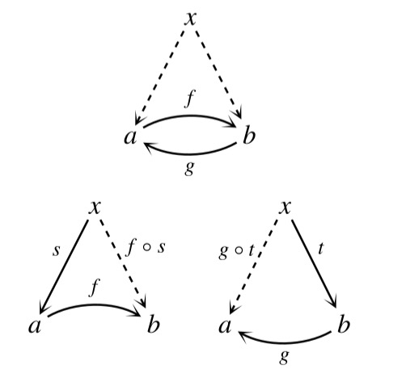
</figure>

<figure>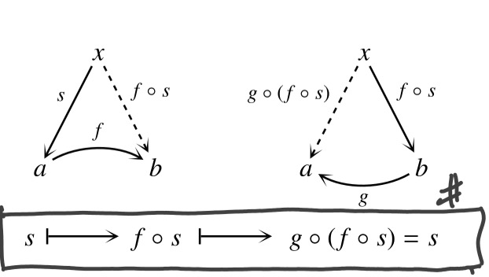
</figure>

<p>So, the relationship of x with both a and b is essentially the same i.e. isomorphic.
We can do this by drawing arrows towards x as well and pre-compose to see the same results. Very easy to go step by step using just plain categorical principles.</p>
<h4 id="definition">Definition</h4>
<dl>
<dt>Definition of an inverse</dt>
<dd>Let a -f-&gt; b be an arrow in a category C. An inverse for f is an arrow b -g-&gt; a such that g ◦ f = 1<sub>a</sub> and f ◦ g = 1<sub>b</sub>.
<ul>
<li>From the properties of inverses, they are unique.</li>
</ul>
</dd>
<dt>Definition of isomorphism</dt>
<dd>Let a -f-&gt; b be an arrow in a category C. If f has an inverse we say that f is invertible and call it an isomorphism, and we say that a and b are isomorphic. We use the notation  as in a ≅ b, or we write a -∼-&gt; b.</dd>
</dl>
<h4 id="pre-and-post-composition">Pre and post composition</h4>
<ul>
<li>Post composing by g means g after f. So, we apply f first, then g but is written as g . f</li>
<li>Pre composing by g means g before f. So, we apply g first and then to that result, apply f. So, its f . g</li>
</ul>
<h3 id="isomorphism-of-sets">Isomorphism of sets</h3>
<ul>
<li>For isomporphism, we need the functions to be invertible. For functions to be invertible, we need to have one-to-one mapping between two sets.</li>
</ul>
<figure>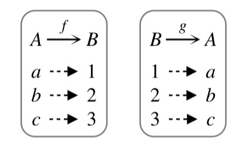
</figure>

<ul>
<li>This is however for finite sets. For infinite sets, we can turn things around because there is no size. As long as they are countably infinite, we can always create one-to-one mapping.</li>
<li>Also, not every functions inside isomorphic sets are isomorphic. If a function maps elements from set A into one element of set B, then it&rsquo;s a valid function but not invertible. Thus, not isomorphic. So, functions that are isomorphisms between sets are called <strong>bijections</strong>.</li>
</ul>
<h4 id="non-categorical-definition-of-bijection">Non categorical definition of bijection</h4>
<ul>
<li>A function A -f-&gt; B is a bijection if for every element b ∈ B there is a unique element a ∈ A such that f(a) = b.</li>
<li>This is definition from our sets which is regarding each element.</li>
</ul>
<h3 id="isomorphisms-of-large-structures">Isomorphisms of large structures</h3>
<ul>
<li>Similar definition. Existence of an inverse that is structure preserving means the objects are isomorphic.</li>
</ul>
<h4 id="monoids">Monoids</h4>
<ul>
<li>Assuming monoid morphism A -f-&gt; B and its inverse B -g-&gt; A, we need to ensure that it preserves monoid structure. a.k.a. binary operation and identity.</li>
<li>Identity
<ul>
<li>Need to show g(1) = 1. Applying f to the left gives 1 i.e. f . g = 1 because f and g are inverses. Also applying f to the right gives 1 for the same reason. So, there is just one identity.</li>
</ul>
</li>
<li>Binary Operation
<ul>
<li>g(b<sub>1</sub> . b<sub>2</sub>) = g(b<sub>1</sub>) . g(b<sub>2</sub>)</li>
<li>By applying f to the left, we get b<sub>1</sub> . b<sub>2</sub> because f.g = 1.</li>
<li>By applying f to the right, we get f(g(b<sub>1</sub>) . g(b<sub>2</sub>)) and since f should respect binary operation by being a monoid mapping, it also resolves to b<sub>1</sub> . b<sub>2</sub></li>
</ul>
</li>
<li>So, if f is a bijective homomorphism, then its an isomorphism of monoids and vice versa.</li>
<li>Example of monoid isomorphism:
<ul>
<li>Representation of number system as 1, 2, 3 .. and One, Two, Three &hellip; They have same structure, so shouldn&rsquo;t be really counted as different.</li>
</ul>
</li>
<li>If monoids have same elements but different structures, then they aren&rsquo;t isomorphic as monoids, but as sets. Sets have loose structure compared to monoids.</li>
</ul>
<h4 id="groups">Groups</h4>
<ul>
<li>Homomorphism of groups is just a homomorphism of underlying monoids. So, group isomorphism must be bijective homomorphism.</li>
<li>By definition of groups, they need to have inverses for each elements.</li>
<li>Rotation by 90 degrees or mod 4 clock both are groups since they have inverses for each elements, follow binary operation, and have identity.</li>
<li>By looking at the fact that we can map these two to one another clockwise, counter clockwise etc., they are isomorphic. They both are &ldquo;cyclic group of order 4&rdquo;.</li>
</ul>
<h4 id="posets">Posets</h4>
<ul>
<li>Order preserving and bijection.</li>
<li>Inverse is automatically order preserving in a poset.</li>
</ul>
<h4 id="topological-spaces">Topological spaces</h4>
<ul>
<li>In case of topological spaces, function that is continuous can have inverse function  that is not continuous. So, bijection is not enough to ensure continuous map is an isomorphism in the category of spaces and continuous maps.</li>
<li>So, its a wrong notion of sameness in this case.</li>
<li>For topological spaces, there is &ldquo;homeomorphism&rdquo;. The reason why we call this is that our previous definition of isomorphism wasn&rsquo;t sensitive enough to give us sameness for topological spaces.</li>
</ul>
<h4 id="groupoids">Groupoids</h4>
<ul>
<li>More expressive than equivalence relations as things can be related in more than one way.</li>
<li>Each arrow needs to have its inverse in a groupoid.</li>
<li>Groupoids and topological spaces are related in the sense that inverse in topological path is like going backwards along the same exact path.</li>
</ul>
<h2 id="thinking-categorically">Thinking categorically</h2>
<ul>
<li>Become curious about a structure, in sets and functions.</li>
<li>Express it categorically, forget about the elements.</li>
<li>Take definition of other categories to see what it means.</li>
</ul>
<h2 id="monics-and-epics">Monics and Epics</h2>
<h3 id="asymmetry-of-functions">Asymmetry of functions</h3>
<ul>
<li>Since functions can&rsquo;t be isomorphic when they don&rsquo;t have one-one mapping between elements, we can say isomorphism is generalization of symmetry of relations.</li>
</ul>
<h3 id="injective-functions">Injective Functions</h3>
<ul>
<li>Every output is hit at most once.</li>
<li>One-one, same output means same inputs.</li>
<li>A function f : A -&gt; B is called injective if ∀x, y ∈ A, f(x) = f(y) =&gt; x = y.</li>
<li>e.g. f : N -&gt; N where f(x) = x + 1 has mapping for all elements on the left to unique elements on the right but doesn&rsquo;t say anything about element on the right to have input on the left. In this case, 0 won&rsquo;t have an input. So, its only about one to one relationship. Injective still since the mapping is one to one.</li>
<li>To prove that a function is not injective we have to prove the negation of the definition of injective, that is: ∃ x, y ∈ A such that f(x) = f(y) but x ≠ y.</li>
</ul>
<h3 id="surjective-functions">Surjective Functions</h3>
<ul>
<li>If co-domain equals range</li>
<li>Meaning that every output element has a mapping from one input element.</li>
<li>A function f : A -&gt; B is called surjective if ∀b ∈ B ∃ a ∈ A such that f (a) = b.</li>
<li>e.g. f : N -&gt; N where f(x) = x + 1 has mapping for all elements on the left to unique elements on the right but doesn&rsquo;t say anything about element on the right to have input on the left. In this case, 0 won&rsquo;t have a corresponding input. So, its not surjective.</li>
</ul>
<h3 id="bijective-functions">Bijective Functions</h3>
<ul>
<li>If its both injective and surjective.</li>
<li>A function f : A B is called bijective if it is injective and surjective, that is: ∀b ∈ B ∃!a ∈ A such that f(a) = b. Here exclamation means &ldquo;unqiue&rdquo;.</li>
</ul>
<h3 id="examples">Examples</h3>
<ul>
<li>A = φ, B = Z
<ul>
<li>For injective, the definition starts “for all x, y ∈ A”. We can now stop because A is empty, so whatever happens this condition is vacuously satisfied. Thus the function is injective.</li>
<li>For surjective there is a part of the definition that says “∃ a ∈ A such that. . . ” and then we’re in trouble because there is no element in A. The only way we could survive this is if the condition is vacuously satisfied, that is: the condition starts with “∀b ∈ B” so if B is empty then the condition is vacuously satisfied.</li>
<li>So, if it were A = φ, B = φ then that would have been bijective.</li>
</ul>
</li>
</ul>
<h3 id="monics-categorical-injectivity">Monics: Categorical Injectivity</h3>
<ul>
<li>All the definitions before have elements tied to them. So, that&rsquo;s not categorical. Now, we need to express them as sets and functions only, not sets and elements.</li>
<li>A morphism a -f-&gt; b in a category C is called a monomorphism or monic if, given any fork diagram in C, f ◦ s = f ◦ t =&gt; s = t.</li>
</ul>
<figure>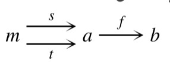
</figure>

<p>Now, this is since a categorical version of injectivity, it needs to be part of isomorphism as well.</p>
<h4 id="proposition-a-function-is-injective-iff-it-is-monic-in-set-category-dot">Proposition: A function is injective iff it is monic in Set category.</h4>
<p>Assume injective function f: a -&gt; b . We assume to show its monic.
Draw the fork diagram as above.
Then, We want to show such that fs = ft, we need to prove s = t. By definition of injectivity above.
fs = ft means: for all x belongs to a, f . s(x) = f . t(x)
if f is injective , that impiles: for all x belongs to a, s(x) = t(x)
thus s = t.</p>
<h4 id="proposition-a-function-f-that-is-isomorphic-is-automatically-a-monic-dot">Proposition: A function f that is isomorphic is automatically a monic.</h4>
<p>Let f: a -&gt; b be an isomorphism with inverse g.
Draw the fork diagram.</p>
<figure>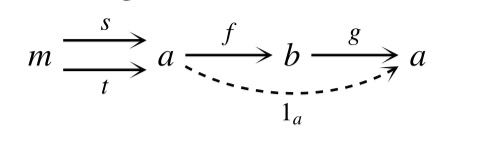
</figure>

<p>Then we need to show if fs = ft, then s = t
Start with fs = ft    =&gt;  gfs = gft  =&gt;  s = t since gf = 1<sub>a</sub>.
Thus, f is monic as required.</p>
<h4 id="split-monic">Split monic</h4>
<p>Let f : a -&gt; b be a morphism in a category. If there is a morphism g as shown here with gf = 1<sub>a</sub> then f is certainly monic and is called a split monic. Then g is called a splitting, left inverse or a retraction for f.</p>
<figure>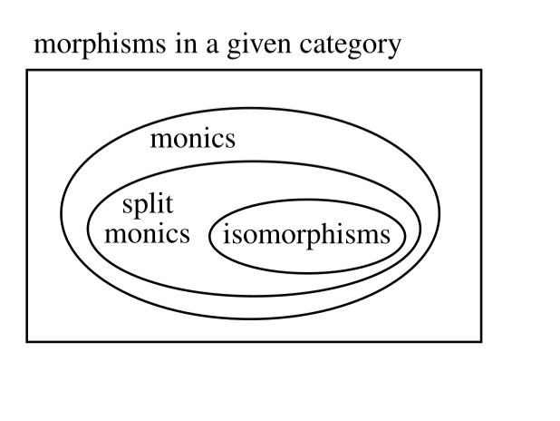
</figure>

<h3 id="epics-categorical-surjectivity">Epics: Categorical Surjectivity</h3>
<ul>
<li>In sets, injectivity and surjectivity didn&rsquo;t look like other way round. But they do look like duals here.</li>
<li>Start by reversing the arrow diagram.</li>
</ul>
<figure>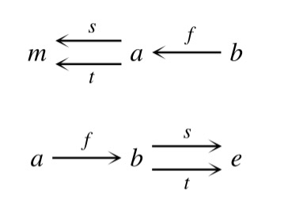
</figure>

<ul>
<li>A morphism f : a b in a category is called an epimorphism or epic if, given any diagram as above: sf = tf =&gt; s = t.</li>
</ul>
<h4 id="proposition-a-function-f-is-surjective-iff-its-epic-in-set-category">Proposition: A function f is surjective iff its epic in Set category</h4>
<p>Putting it with definition of image f, it can be put as
Image(f) = { y ∈ b | ∃ x ∈ a such that f(x) = y }</p>
<p>We know that : b = Image(f) union Nonimage(f)</p>
<figure>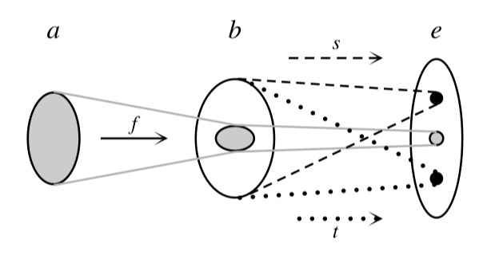
</figure>

<p>So, a function is surjective iff Image(f) = b.</p>
<p>Using the second arrow diagram, given sf = tf, we need to show s = t.
Consider y ∈ b. Now, f is surjective, so ∃ x ∈ a  such that f(x) = y.</p>
<p>Thus, s(y)
= sf(x) by substitution from line above
= tf(x) by hypothesis
= t(y) by substitution from definition again
Thus s = t as required.</p>
<p>By using a contrapositive example, we can prove the reverse.</p>
<h4 id="proposition-if-f-is-an-isomorphism-then-f-is-epic">Proposition: If f is an isomorphism, then f is epic</h4>
<p>Same proof like monic with these new arrow diagram</p>
<h4 id="split-epic">Split epic</h4>
<ul>
<li>Let g: b a be a morphism in a category. If there is a morphism f as shown here with f g = 1b then g is certainly epic. Then g is called a split epic and f is called a splitting, a left inverse or a section for g.</li>
</ul>
<h3 id="relationship-with-isomorphisms">Relationship with isomorphisms</h3>
<ul>
<li>If f is a split monic and a split epic, then it has an inverse on both sides, thus isomorphic.</li>
<li>A morphism can be monic and epic without necessarily being an isomorphism, if it doesn&rsquo;t split. This can be understood when we get out of Sets. The examples and proofs we have done are comparison to Sets upto this moment.</li>
<li><strong>Monic/Epic is a property of morphism, whereas splitting is a piece of structure</strong>.</li>
</ul>
<h3 id="monoids">Monoids</h3>
<p>For example, consider the monoid of natural numbers N under addition. We will try to define a monoid homomorphism f to some other monoid M.</p>
<ul>
<li>We know that 0 is the identity in N so it must go to the identity in M; we have no choice about that.</li>
<li>We can send 1 anywhere we want.</li>
<li>We know that 2 = 1+1 in N, and by the definition of monoid homomorphism we must have f(1 + 1) = f(1) + f(1) so we have no choice about where 2 goes: it has to go to f(1) + f(1).</li>
<li>Something similar is now true for every other natural number. Every n is a sum of 1’s and so we have no choice over where it goes: it has to go to the n-fold sum of f(1)’s.</li>
</ul>
<p>What we’ve done here is based on the fact that N is the free monoid built up from a single element.</p>
<h4 id="proposition-let-f-n-z-be-monoid-homomorphism-given-by-inclusion-f--n--n-dot-then-f-is-epic-in-mnd--monoid-category--dot">Proposition Let f: N -&gt; Z be monoid homomorphism given by inclusion f(n) = n. Then f is epic in Mnd (Monoid category).</h4>
<p>If we have sf = tf, then that means s and t agree on the image of f.
However, 1 ∈ Z is the image of f because f(1) = 1 and so we must have s(1) = t(1) which in turn forces s = t. Because monoid is built on top of a single thing. So, this shows that f is epic even when it isn&rsquo;t surjective.</p>
<p>f is also injective since it maps element by element on this case and that&rsquo;s enough to ensure that its monic in Mnd.
Now, in fact f is monic and epic, yet its not an isomorphism.</p>
<h3 id="density">Density</h3>
<ul>
<li>Examples similar to monoids where morphisms are epic without being surjective.</li>
<li>A set is called dense inside B if closure of A is B; closure of A is essentially the most economical way to enlarge A just enough to make it a closed set.</li>
<li>This is related to how we can construct the real numbers from the rationals, by taking the closure under limits, which amounts to throwing in the irrational numbers.</li>
<li>This sort of thing happens any time something has been constructed “freely” from some generators. If the morphisms in that category preserve the structure, then all you have to know is where the generators go, and then there’s no choice of where the rest of the structure can go. You might also have seen this with vector spaces and basis elements. There’s a concept of “limit” and “density” in category theory that mimics the situation of limits and density in analysis.</li>
<li>One special case of injective functions is subset inclusions. For example we have seen the function N -&gt; Z which just takes each natural number and sends it to the same number as an integer.</li>
<li>There’s no categorical reason that a subset inclusion is any better than any other kind of monic, and so in more general situations monics are used to indicate subobjects.</li>
</ul>
<h3 id="higher-dimensions">Higher Dimensions</h3>
<ul>
<li>Monic and epic are categorical versions of injective and surjective functions, and when we go into higher dimensions we want to generalize injective and surjective functions to the level of functors, that is, the morphisms in the category Cat. We can try looking for monics and epics in that category, but it won’t really give us “the right thing” because that is working at the wrong dimension.</li>
<li>Cat is really trying to be a 2-category (as we mentioned before) with a more subtle type of relationship between morphisms.</li>
</ul>
<h2 id="universal-properties">Universal Properties</h2>
<ul>
<li>The reason for trying to characterize things by universal properties is so that we find things that play analogous roles in different contexts.</li>
<li>How uniquely we can pin things down is important consideration with universal properties.</li>
<li>We may find several objects that all satisfy the property, but they will all be uniquely isomorphic so the category “can’t tell them apart”. Thinking categorically, we need to embrace that we can&rsquo;t tell them apart, even though there are many.</li>
</ul>
<h3 id="role-vs-character">Role vs Character</h3>
<ul>
<li>In category theory, we care about the role they play. Not the character that it has. e.g. 0 is representing nothing. But we can also describe it by role it plays: a number that when you add to something does nothing. That&rsquo;s a role that it plays. And that&rsquo;s a number that can only play that role.</li>
<li>Same goes for number 1 in multiplication.</li>
<li>They are thus called additive identity and multiplicative identity respectively.</li>
</ul>
<h3 id="extremities">Extremities</h3>
<ul>
<li>One sure shot way of understanding a problem by knowing its bounds.</li>
<li>Also by taking something into a different context where its extreme also tells us about a context. So many interesting ways to learn new things, find new patterns.
<ul>
<li>e.g. If I am 5'6&rsquo;&rsquo; and I am the tallest in the room, it says that the room is full of short people.</li>
</ul>
</li>
<li>In category theory, we are looking for extremities based on arrows. Where the arrows start and where the arrows end are usually the extremes. Not physical location on the drawing etc.</li>
</ul>
<h3 id="initial-object">Initial Object</h3>
<ul>
<li>An object I in a category C is initial if for every object X ∈ C there is a unique morphism I -&gt; X.</li>
<li>Its like having an end that you can attach to one end of your tape measure, a reference point.</li>
<li>Category of integers has no initial object, however category of natural numbers has 0 as initial object.</li>
<li>In a category with more than one object and no non-trivial morphisms, there is no initial object since there just aren&rsquo;t enough morphisms. We need at least an object with a morphism going everywhere else. Though we might not draw it out loud, through composition that needs to be the case.</li>
</ul>
<figure>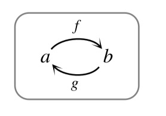
</figure>

<ul>
<li>In this diagram, if composite g . f is not identity, then a can&rsquo;t be initial because we have at least two different morphisms a -&gt; a: composite g . f and identity 1<sub>a</sub>. And we can have infinite number of morphisms from a -&gt; a since f and g don&rsquo;t have to satisfy any other equation and every time we go around the loop we can have a different morphism.</li>
<li>In the case that they are in fact inverses, then this category exactly has four morphisms: f, g, 1<sub>a</sub>, 1<sub>b</sub>. All composites will be equal to one of these because f and g have to composite both ways around into identity. In this case, we see that a -1<sub>a</sub>-&gt; a and a -f-&gt; b, a is initial with unique morphisms. Same goes for b.</li>
<li>There we have two initial objects but categorically they&rsquo;re not really different.</li>
</ul>
<h4 id="uniqueness">Uniqueness</h4>
<h3 id="terminal-object">Terminal Object</h3>
<ul>
<li>Now the end of category where all arrows lead upto.</li>
<li>If we reverse the arrows, where all all arrows start from.</li>
<li>An object T in a category C is terminal if for every object X ∈ C there is a unique morphism X -&gt; T.</li>
</ul>
<h4 id="proposition">Proposition</h4>
<p>Let T be a terminal object in a category C and T&rsquo; any object. The following are equivalent:</p>
<ol>
<li>T&rsquo; is a terminal object in C.</li>
<li>T&rsquo; is uniquely isomorphic to T.</li>
<li>T&rsquo; is isomorphic to T.</li>
</ol>
<p>Using similar logic as initial object, these can be verified too.</p>
<h3 id="failure-cases-for-terminal-and-initial-objects">Failure Cases for terminal and initial objects</h3>
<ul>
<li>When category has too few morphisms or too many morphisms.</li>
</ul>
<h4 id="going-on-forever">Going on forever</h4>
<ul>
<li>
<p>The last case we talked about for natural numbers, we know that there is no terminal object but we can add an object called ω which every number points to assuming its the largest, then we have a terminal object. 0 -&gt; 1 -&gt; 2 -&gt; ω. We can omit the arrows since we have been doing that for natural numbers all the time as they can be composed.</p>
<figure>
    </figure>

</li>
</ul>
<h4 id="branching">Branching</h4>
<ul>
<li>There might be a beginning or an end but not a place where everything begins or ends.</li>
</ul>
<h4 id="going-round-in-circles">Going round in circles</h4>
<ul>
<li>No initial object, provided that the arrows were not inverses.</li>
</ul>
<h4 id="parallel-arrows">Parallel arrows</h4>
<ul>
<li>Too many morphisms to be unique</li>
</ul>
<h4 id="disconnectedness">Disconnectedness</h4>
<ul>
<li>Too few arrows to be terminal or initial</li>
<li>&ldquo;Locally initial&rdquo; if there are disconnected regions with but those disconnected region has an initial or terminal object.</li>
</ul>
<h3 id="case-where-object-is-both-terminal-and-initial">Case where object is both terminal and initial</h3>
<ul>
<li>If it has only one object and one identity morphism.</li>
<li>If more than one object but they are all uniquely isomorphic. THen every object is terminal and initial.</li>
</ul>
<h3 id="examples-in-different-contexts">Examples in different contexts</h3>
<h4 id="sets-and-posets">Sets and posets</h4>
<ul>
<li>Empty one is initial and 1-element one is terminal in sets with structure: posets and topological spaces.</li>
</ul>
<h4 id="monoids-and-groups">Monoids and Groups</h4>
<ul>
<li>They can&rsquo;t be empty by definition.</li>
<li>Trivial monoid/group is one with a single example.</li>
<li>Unique function to that one element to itself is definitely a homomorphism. So, trivial group is terminal in category Grp. And also initial in Grp.</li>
<li>A null object in a category is one that is both terminal and initial.</li>
</ul>
<h3 id="context">Context</h3>
<ul>
<li>We can compare universal objects in different categories, or we might observe something being universal in one category, but not another.</li>
</ul>
<figure>
</figure>

<ul>
<li>For posets and topological spaces, we can follow dotted arrows and get to the empty set. For monoids and groups, the arrow takes us to 1-element set because they are bound by definition.</li>
</ul>
<h2 id="duality">Duality</h2>
<ul>
<li>By turning arrows around, we get a dual version of every construction, every theorem.</li>
<li>Dual category For any category C the dual (or opposite) category C<sup>op</sup> is given as follows.
<ul>
<li>objects: ob C<sup>op</sup> = ob C</li>
<li>morphisms: given objects a, b, we have C<sup>op</sup> (a, b) = C(b, a)</li>
<li>identities are the same</li>
<li>composition is reversed</li>
</ul>
</li>
<li>The dual version is often indicated by the prefix “co-”. So for example:
<ul>
<li>we define products and then the dual concept is coproducts</li>
<li>we define limits and then the dual concept is colimits</li>
<li>we define equalizers and then the dual concept is coequalizers</li>
<li>we define projections and then the dual concept is coprojections.</li>
</ul>
</li>
<li>The dual of dual category takes us back to original category.</li>
<li>A morphism f is epic in C if and only if it is monic in C<sup>op</sup> .</li>
<li>If f is an isomorphism in C<sup>op</sup>, then it is also an isomorphism in C. If something is exactly the same in both C and C<sup>op</sup>, then its called self-dual.</li>
<li>Let C be a category. A terminal object in C is precisely an initial object in C<sup>op</sup> .</li>
</ul>
<h2 id="products-and-coproducts">Products and Coproducts</h2>
<h3 id="idea">Idea</h3>
<ul>
<li>If we think about our 2 by 4 grid of objects above, what is the relationship between this grid and the numbers 2 and 4? We might say there are 2 rows and 4 columns, but that sort of presupposes an understanding of what rows and columns are. We might say its height is 2 and its width is 4, but that also presupposes concepts of height and width. Here is something we could say that’s (perhaps) more fundamental.</li>
<li>Imagine projecting shadows of our objects onto a wall. If we project in one direction (and perfectly line everything up) then we will see only 2 things, and if we project in the other direction we’ll see 4.</li>
</ul>
<figure>
</figure>

<h3 id="definition">Definition</h3>
<p>Given objects a and b in a category, a product for them is:
an object a × b equipped with morphisms p and q as shown below
such that given any diagram of this form
there is a unique morphism x -k-&gt; a × b making the following diagram commute.</p>
<figure>
</figure>

<ul>
<li>For product, we need to draw the shape and make sure that we have a unique morphism.</li>
<li>This third diagram is a universal shape that we use to prove so many other stuff as well.</li>
<li>The morphism k in the third diagram is a type of comparison between the universal situation (the first diagram) and the non-universal one (the second diagram). Note that asking for the diagram to commute means that the triangle on each side commutes. Written out in algebra this means pk = f and qk = g</li>
<li>Uniqueness: it might not be the only morphism x -&gt; a x b, but it has to be the only morphism that makes both of those side triangles commute.</li>
</ul>
<h4 id="terminology">Terminology</h4>
<ul>
<li>The morphisms p and q are called projections.</li>
<li>The morphism k is called a factorization. We are factorizing f and g.</li>
<li>There is a general type of diagram called a cone which consists of a vertex and the morphisms from that vertex to everything else. In this case the vertex is a × b and “everything else” is just the objects a and b.</li>
<li>The product is the universal cone, universal among all cones of this shape.</li>
<li>We say the universal property induces the factorization k.</li>
</ul>
<h4 id="step-by-step">Step by step</h4>
<p>So, we start by understanding that there are two objects in a category.
Then we define a product a x b. Then that product assumes two projections p and q to relate with objects a and b.
By drawing these projections, we need to understand that we have created arrows.
By definition of universal property, we are saying a x b is the best option that can project onto a and b. This is the understanding.
Now, how do we prove its the best?
We start by drawing another projection onto a and b: f and g. But why did we do that?
To factorize these f and g using a factorization unique morphism k.
Its like saying a x b is the least possible path to a and b and then any other path is basically a composition of some factor with that least possible path. That makes product the best path out there.</p>
<h3 id="products-as-terminal-objects">Products as terminal objects</h3>
<ul>
<li>Products are in fact a special type of terminal object. It’s just that a product in C isn’t a terminal object in C, it’s a terminal object in some more complicated category based on C, which I like to call a “souped-up” category.</li>
<li>We know that terminal objects are unique up to unique isomorphism, and products are a terminal object somewhere, so products must also be unique up to unique isomorphism.</li>
<li>There can be many relationships on the cone but only one that makes the diagram commute.</li>
<li>By definition of products, all morphisms can be factored with product being a component of it, that means all relationships from any object to terminal object will have a unique morphism to that product. So, that product becomes a terminal object since there will be unique morphism from every other object to product. We called it in a &ldquo;souped up&rdquo; category because if we define a and b as objects, they don&rsquo;t have arrow upto product. That&rsquo;s why product is not a terminal object in that category but in a &ldquo;souped up&rdquo; category.</li>
</ul>
<figure>
</figure>

<p>Look at what we consider objects in this &ldquo;souped-up&rdquo; category to say that its a terminal object.</p>
<h3 id="products-in-set">Products in set</h3>
<ul>
<li>Cartesian product is the categorical product in a set.</li>
<li>Need to remember that second lines are elemental mappings.</li>
</ul>
<figure>
</figure>

<ul>
<li>Let A and B be sets. Then the cartesian product A × B is the set defined by A × B = { (a, b) | a ∈ A, b ∈ B }
<ul>
<li>The elements (a, b) are called ordered pairs, and there are functions p and q as shown on the right called projections, sending an element (a, b) to a and b respectively.</li>
</ul>
</li>
</ul>
<h3 id="products-in-posets">Products in posets</h3>
<p>If we now work through the definition of product in this context, we see that for the product of a and b we need:</p>
<ol>
<li>A diagram of the form shown here, which in this category just means that v is a multiple of both a and b.</li>
<li>Given any such diagram with vertex x, we need a morphism x -&gt; v. Here is a “translation” of what that means in this particular category. &ldquo;Given x that is a multiple of both a and b, x is a multiple of v&rdquo;</li>
</ol>
<p>Then by these two ideas, we come to the definition of LCM.
In a general poset we might generically call the ordering ≥ and in that case the definition of categorical product gives us this:</p>
<ol>
<li>an object v such that v ≥ a and v ≥ b, and</li>
<li>for any object x such that x ≥ a and x ≥ b, we must have x ≥ v.</li>
</ol>
<p>This is exactly the definition of least upper bound or supremum. The first point says that v is an upper bound for a and b, and the second point says that if x is any upper bound, it is greater than or equal to v.</p>
<figure>
</figure>

<h4 id="category-of-posets">Category of posets</h4>
<p>Let (A, ≤) and (B, ≤) be posets.
Then we can define an ordering ≤ on A × B by (a1, b1) ≤ (a2, b2) &lt;=&gt; a1 ≤ a2 and b1 ≤ b2
and this makes (A × B, ≤) into a categorical product (A, ≤) × (B, ≤) in Pst.</p>
<figure>
</figure>

<h4 id="monoids-and-groups">Monoids and groups</h4>
<ul>
<li>We have to start with groups (A, .) and (B, . ) and instead of making an ordering on A x B, we need to make a binary operation based on binary operations in A and B. Here dot means binary operation.</li>
<li>If we take group/monoid to be R under addition , categorical product R x R is to come up with definition of addition for these ordered pairs. e.g. (x1,y1) + (x2,y2)</li>
<li>Now, when we add this component wise we get (x1+x2, y1+y2)</li>
<li>On generalizing this, we get</li>
<li>Let (A, ◦, 1) and (B, ◦, 1) be monoids. We define a binary operation on A × B by (a1, b1) ◦ (a2, b2) = (a1 ◦ a2 , b1 ◦ b2 ). This makes A×B into a monoid with unit (1, 1), and it is the categorical product of the original two monoids.</li>
</ul>
<h3 id="coproducts">Coproducts</h3>
<ul>
<li>A coproduct in a category C is a product in C<sup>op</sup>.</li>
<li>Now, the arrows are reversed in the universal cone diagram.</li>
<li>A coproduct for a and b is an initial object in a category whose objects are cocones over a and b, that is, diagrams of the form shown on the right.</li>
<li>Coproducts are unique up to unique isomorphism (making cocones commute), there is symmetry in the variables, and there are n-fold versions.</li>
<li>Coproducts in set is just union.</li>
<li>Note that technically we shouldn’t say “A U B is a coproduct” without saying what the coprojections are, but we often do when the coprojections can be understood to be the “obvious” inclusions.</li>
<li>This is an important way of thinking about universal properties. In general it says there is a bijective correspondence between (co)cones and factorizations, so that we can equivalently encapsulate the information of any (co)cone as a single morphism to (or from) a universal one. It’s very handy because a cone generally involves many morphisms, and we can now encapsulate it as one morphism together with a “reference” cone.</li>
</ul>
<h4 id="terminology">Terminology</h4>
<ul>
<li>p and q are called coprojections or insertions.</li>
<li>Instead of a cone, this is now a cocone. In a cone we have projections pointing away from the vertex, and in a cocone we have coprojections pointing to the vertex. The coproduct is then the universal cocone.</li>
<li>The coproduct is written a union b, a u b, or a + b.</li>
</ul>
<h4 id="coprdoucts-in-other-categories">Coprdoucts in other categories</h4>
<ul>
<li>Inside a poset : In the poset of factors of n we saw that products are lowest common multiples. Coproducts are then highest common factors.</li>
<li>In the category of posets, we can take a disjoint union of two posets A and B and it will still be a poset: everything in the A part will simply be incomparable to everything in the B part.</li>
<li>For tosets, if we take the coproduct of two tosets A and B, the result is in general not a toset: the elements of A will be incomparable to the elements of B, and this is not allowed in a toset.</li>
<li>For monoids, if we take the disjoint union of A and B as sets then the result is not in general a monoid — we have a binary operation on the A part and a binary operation on the B part but we do not have a way of doing a ◦ b with an element from each side. So, if we restrict to the category of commutative monoids, everything in a co product can be expressed as &ldquo;element of A . element of B&rdquo; where dot is binary operation.
<ul>
<li>Very similar to writing it as ordered pairs (element of A, element of B) just that we have binary operation in between.</li>
<li>In category of commutative monoids, coproduct and product are the same.</li>
<li>Commutative groups are also called Abelian Groups.</li>
<li>Coproducts of groups are called &ldquo;Free products&rdquo; in group theory</li>
<li>Products of groups are called &ldquo;Direct products&rdquo; in group theory</li>
<li></li>
</ul>
</li>
</ul>
<h4 id="products-examples-in-topological-spaces">Products examples in topological spaces</h4>
<ul>
<li>The product of a square and a line is a cube, because if you move a square in a line you sweep out a cube in the air.</li>
<li>The product of a circle with a circle is a torus (like the surface of a bagel), which I like to demonstrate by taking a slinky (essentially a circle) and wrapping it round on itself in a circle. You can even make a vertical cut in a bagel and then insert the bagel into the slinky-torus.</li>
</ul>
<h4 id="analogies-with-numbers">Analogies with numbers</h4>
<ul>
<li>Based on our understanding with commutativity, associativity, products, we can keep asking questions while playing with numbers like these ones:
<ul>
<li>Is there an identity?</li>
<li>Are their inverses?</li>
<li>Do we have something like unique factorization into primes? If so, what are the primes? This one is studied for groups and is particularly straightforward for Abelian groups, where there is a “fundamental theorem of Abelian groups” rather like the fundamental theorem of arithmetic (which says that every natural number can be uniquely expressed as a product of primes).</li>
</ul>
</li>
</ul>
<h2 id="pullbacks-and-pushouts">Pullbacks and pushouts</h2>
<ul>
<li>Our starting data so far has not been very general: it has not included any morphisms. For terminal/initial objects the starting data was trivial, that is, it was empty. For products/coproducts it was a pair of objects. In this chapter we are going to do a first example where the starting data is a diagram including some morphisms.</li>
<li>Pullbacks and pushouts are dual to each other.</li>
</ul>
<h3 id="universal-cone">Universal cone</h3>
<ul>
<li>A cone is an object v (the “vertex”) together with morphisms to every object in the starting diagram, such that everything commutes.</li>
<li>We can start with any diagram and build a cone from it.</li>
<li>For it to be universal, it needs to be universal among all cones of that shape. That is what we are doing on the third diagram. Asserting uniqueness through unique factorization from x to v, x -&gt; v. And being a factorization, everything must commute of course. We can see that gray arrows on third diagram are commutative arrows. These are relations that can be derived by commutative laws.</li>
</ul>
<figure>
</figure>

<h3 id="pullbacks">Pullbacks</h3>
<ul>
<li>A product of two sets takes all the possible ways of making pairs, with one element from each set. But perhaps we want to make pairs that are coherent in some way, perhaps pairing up people who are the same height to be dancing partners, or pairing pants/trousers with shirts that are the same color: we do that using a pullback.</li>
<li>Ordering with some restriction basically but how is this a universal one?</li>
<li>Developing from the idea of universal cone, a <strong>limit</strong> over a diagram is a universal cone over it. A pullback in a category is a limit over a diagram of the given shape.</li>
</ul>
<figure>
</figure>

<p>So, depending on how we draw the base objects and find a universal cone there, it gets named different things.
Then cone here is vertex v together with morphisms a, b, and c making everything commute.
We can draw it like a square after omitting the composition from v to c:</p>
<figure>
</figure>

<ul>
<li>Then the universal property states: Given any square with vertex x, there must be a unique factorization as shown on the right. The factorization must of course commute here as well.</li>
<li>To indicate a pullback we often put a little corner sign at the top left, as shown here. It goes where the vertex of the universal cone is.</li>
<li>We can say a category has pullbacks when it has pullbacks over all diagrams of relevant shape. The shape involving three objects with two objects pointing to the third object as shown at the start of this section.</li>
</ul>
<h3 id="pullbacks-in-sets">Pullbacks in sets</h3>
<ul>
<li>Its like a product but it also has to commute to third object C. So, its written as A X<sub>C</sub> B.</li>
<li>A X<sub>C</sub> B = {(a, b) ∈ A × B | s(a) = t(b)}</li>
</ul>
<figure>
</figure>

<ul>
<li>The square is a pullback, where p and q are the projections inherited from A × B.</li>
<li>Note that when we write the vertex of the pullback as A ×C B it only tells us what the corner object C is, without reference to the morphisms s and t. In some situations those are very natural, but I think it’s good to be aware that the notation is missing something.</li>
<li>Sometimes we talk about pulling back morphisms along each other. So we might say that p is the pullback of t along s, and that q is the pullback of s along t. Although the definition is symmetrical in s and t sometimes the situation isn’t. Sometimes one of the starting morphisms is more interesting and the other is in more of a supporting role.</li>
</ul>
<figure>
</figure>

<ul>
<li>In this diagram, every arrow is a subset inclusion function and forms this shape.</li>
</ul>
<h3 id="definition-of-category-using-pullbacks">Definition of category using pullbacks</h3>
<ul>
<li>Set C<sub>1</sub> of morphisms and C<sub>0</sub> of objects, equipped with functions giving the source and target of each morphism.</li>
</ul>
<figure>
</figure>

<p>A composable pair of morphisms looks like an ordered pair (f, g) but its not any old ordered pair. the two morphisms have to meet in the middle in order to be composable.</p>
<figure>
</figure>

<p>We are trying to define what a category is using pullbacks.</p>
<ul>
<li>We take the pullback shown on the right; it’s a pullback in Set so can be defined as follows:
<ul>
<li>C1 X<sub>C0</sub> C1 = { (f, g) ∈ C1 × C1 | t(f) = s(g) }</li>
<li>Then composition is defined as  C1 X<sub>C0</sub> C1 -&gt; C1</li>
</ul>
</li>
<li>The fact that composition is defined as pullback rather than the product is what makes it a partial binary operation rather than a binary operation since a binary operation on set is A X A -&gt; A. j</li>
</ul>
<p>
Representing by elements of set.</p>
<figure>
</figure>

<h3 id="pushouts">Pushouts</h3>
<ul>
<li>A pushout is a universal cocone for a diagram of the shape shown in the first diagram below. That is, it is a vertex v and morphisms as shown in the second diagram, such that given any diagram as in the third diagram, there is a unique factorization as shown in the fourth diagram.</li>
</ul>
<figure>
</figure>

<ul>
<li>Represented by small corner marking the vertex of universal cocone.</li>
<li>Dually to pullbacks, these pushouts are :
<ul>
<li>Initial objects somewhere</li>
<li>Unique upto unique isomorphism</li>
<li>Canonically related to coproducts</li>
</ul>
</li>
</ul>
<h3 id="pushouts-in-sets">Pushouts in sets</h3>
<figure>
</figure>

<ul>
<li>As for when we did the pullback property, it may help to think about what it means for the outside to commute. If we start with an element y ∈ A ∩ B and chase it around, we see that commutativity means f(y) = g(y), that is the functions f and g have to agree on the intersection A ∩ B.</li>
<li>This square is both a pullback and a pushout.</li>
<li>The diagram on the right has a pushout given by A U B / ∼ where the relation ∼ is generated by: s(c) ∼ t(c) ∀c ∈ C</li>
<li>The quotient map is a function A U B -&gt; A U B / ~ which is unique factorization induced by universal property of coproduct.</li>
<li>So, defining a function out of a quotient like this V / ~ -&gt; X. The item on the left will consists of elements of V at root but some will be identified under relation ~.</li>
</ul>
<h3 id="pushouts-in-topology">Pushouts in topology</h3>
<ul>
<li>Key way of glueing spaces together to make more complex spaces.</li>
</ul>
<p>
On one hand is a mobius strip. This shape famously has “only one side” as the front and back of the paper have been joined up. It also only has one edge, because the “right and left” edges of the strip of paper have been joined up. As it only has one edge, this means its edge (or boundary) is topologically a circle. Thus we can abstractly (though not physically) glue a disk onto that boundary.</p>
<figure>
</figure>

<h3 id="pushouts-in-other-places">Pushouts in other places</h3>
<h4 id="groups">Groups</h4>
<ul>
<li>We already saw that coproducts are much more complicated for monoids and groups than for sets and posets. This is because of the binary operation: it means that after making the disjoint union of the underlying sets, we must then generate new elements produced by the binary operation.</li>
<li>To find pushouts of groups we have to start with the coproduct of groups, which we saw in the previous chapter is the “free product”, and then we have to do something analogous to quotienting out by an equivalence relation. In group theory this is provided by the theory of quotient groups. The idea is that one can “divide” a group by a special kind of subgroup, called a normal subgroup. We have actually seen an example of this although we didn’t put it that way: the integers modulo n can be constructed as a quotient group where you start with the integers and then quotient by the subgroup consisting of all the multiples of n.</li>
</ul>
<h4 id="algebraic-topology">Algebraic topology</h4>
<ul>
<li>Algebraic topology is about making relationships between spaces and groups.</li>
<li>A big problem is then actually calculating what the fundamental group is as a group, rather than just as an abstract definition. Pushouts help us do this because of a wonderful theorem called Van Kampen’s theorem.</li>
<li>The pushout method works much better if instead of using groups we use groupoids.</li>
</ul>
<h3 id="more-general-universal-properties">More general universal properties</h3>
<ul>
<li>Terminal and initial objects are cocones over empty diagrams: no objects and no morphisms.</li>
<li>Products and coproducts are cocones over discrete diagrams: no morphisms.</li>
<li>Pullbacks and pushouts are cocones over diagrams with just two morphisms pointing in opposite directions.</li>
<li>There are other properties like equalizers and coequalizers. They are cocones over parallel pair of arrows.</li>
<li>We also defined limits which are universal cones over a diagram and colimits which are universal cocones. They are superset of all these.</li>
<li>Equalizers and pullbacks are interchangeable in the presence of products, that is, we can make equalizers out of pullbacks and products, and we can also make pullbacks out of equalizers and products. It is perhaps more intuitive to state the result about limits in terms of products and equalizers, as products deal with multiple objects and equalizers deal with multiple morphisms between the same objects, and that is really the two features that a diagram can have.</li>
</ul>
<h2 id="functors">Functors</h2>
<ul>
<li>Functor is a function on underlying data, preserving structure.</li>
<li>Functor is function between two categories.</li>
<li>In this case the definition of functor consists of a function on sets of objects, and a function on every homset. This is for small category.</li>
<li>Let C and D be (small) categories. A functor F : C -&gt; D is given by
<ul>
<li>a function F : obC -&gt; obD, and</li>
<li>for all objects x, y ∈ C, a function F : C(x, y) -&gt; D(Fx, Fy) satisfying the following conditions called functoriality:
<ul>
<li>on identities: for all objects x ∈ C, F(1x) = 1Fx and</li>
<li>on composites: for all morphisms x -f-&gt; y -g-&gt;z ∈ C, F(g ◦ f) = Fg ◦ Ff.</li>
</ul>
</li>
</ul>
</li>
<li>More generally, Let C and D be categories. A functor F : C -&gt; D associates:
<ul>
<li>to every object x ∈ C an object Fx ∈ D,</li>
<li>to every morphism x -f-&gt; y ∈ C a morphism Fy -Ff-&gt; Fy ∈ D satisfying functoriality as above.</li>
</ul>
</li>
<li>Like we talked about, after functors are applied, it need to satisfy identity and composition again.</li>
<li>In terms of definition of category with C<sub>1</sub> and C<sub>0</sub> where one is morphism and another set of objects, in that context, we can see functor as pair of functions that make the diagram commute.</li>
</ul>
<figure>
</figure>

<h3 id="functors-between-small-examples">Functors between small examples</h3>
<ul>
<li>Considering posets as categories, functor is aautomatically a order preserving function as well. For a -&gt; a&rsquo;, we get a morphism Fa -&gt; Fa&rsquo; and since a ≤ a&rsquo;, Fa ≤ Fa'.</li>
<li>In monoids and groups, the monoid homomorphism are the functors between those categories. The functorality maps out to preserving identity and binary operation in case of monoids which is same as conditions for monoid homomorphism.</li>
</ul>
<h3 id="functors-from-small-drawable-categories">Functors from small drawable categories</h3>
<ul>
<li>There is nothing left to specify or check as we know that identities must go to identities, and there are no non-trivial composable morphisms anyway. Note that Fa and Fb could be the same set, and Ff could itself be the identity: identities must be mapped to identities, but non-identities are allowed to be mapped to identities.</li>
<li>A functor A -&gt; Mon just picks out a monoid homomorphism (and by implication, a pair of monoids for the source and target as well). In general a functor A -&gt; C just picks out a morphism in C.</li>
</ul>
<figure>
</figure>

<ul>
<li>In this drawing, the top-and-right composite is Ft ◦ Ff which equals F(t ◦ f) by functoriality of F; similarly the left-and-bottom composite equals F(g ◦ s). The commutativity of the original square tells us t ◦ f = g ◦ s, so we must also have F(t ◦ f) = F(g ◦ s). So the second square commutes.</li>
<li>Let J be a finite category and C be any category. Then a diagram of shape J in C is a functor.</li>
<li>Let F : C -&gt; D be a functor, and f an isomorphism in C with inverse g. Then Ff is an isomorphism in D with inverse Fg.</li>
<li>The fact that isomorphism is still an isomorphism after applying a functor is called preservation.</li>
</ul>
<h3 id="free-and-forgetful-functors">Free and Forgetful functors</h3>
<ul>
<li>When we were looking at products of posets we took products of their underlying sets and then constructed a “natural” ordering on that set. Without saying so, we were invoking a functor Poset Set , which takes each poset and “forgets” that it’s a poset. Without saying so, we were invoking a functor Poset -&gt; Set which takes each poset and forgets that its a poset.</li>
<li>Functors that forget structure are called forgetful functors. They are often denoted U ( for underlying), so for poset A, we call its underlying UA.</li>
<li>Other forgetful functors are Grp -&gt; Mnd, Abelian -&gt; Grp, Toset -&gt; Poset, Anything with structure -&gt; Set.</li>
<li>The relationship they often have with a functor going the other way which does the “opposite” of forgetting structure: it creates structure freely and is called a free functor. By contrast, sometimes forgetful functors do not have a relationship with such a functor, and that is in itself interesting.</li>
<li>Order preserving functions between posets then become functors between special categories. Then we get a functor Pst -&gt; Cat</li>
<li>We can express monoids as one object categories. If we decide in advance what the single object is going to be, then we get a functor Mnd -&gt; Cat.</li>
<li>Free functors are harder than forgetful functors.</li>
<li>Without imposing any unnecessary constratints or using any extra information, we have to make Set -&gt; Mnd or something like this.
<ul>
<li>e.g. Start with any set A and produce monoid of words in the elements of A. This is called a free monoid on A.</li>
<li>e.g. A -&gt; {*} will turn every word to series of asterisks. So, this is like a free monoid functor.</li>
</ul>
</li>
</ul>
<h3 id="preserving-and-reflecting-structure">Preserving and reflecting structure</h3>
<ul>
<li>In the forwards direction we have the question of preservation: given a type of structure in C, if we apply F does it still have that structure in D?</li>
<li>In the backwards direction we have the question of reflection: if we apply F to something in C and the result has a particular structure in D, can we conclude that it already had that structure in C?</li>
<li>Last time we talked about the split epics vs epics. Now, functors don&rsquo;t preserve epics as structure but always preserve split epics.</li>
<li>Structures preserved by all functor are generally called <strong>absolute</strong>.</li>
<li>e.g. Those with rules where &ldquo;for all&rdquo; exists, they are easier to preserve even when compressed. Those with rules where &ldquo;there exists&rdquo;, they are harder to preserve when it compresses the structure.</li>
</ul>
<h4 id="example-1">Example 1</h4>
<figure>
</figure>

<ul>
<li>As the target category has only one object and only one morphism, we have no choice about where F can send everything: every object has to go to the single object and every morphism goes to the identity. Functoriality has to hold because the only morphism in the target category is the identity, so every equation of morphisms just reduces to an identity equalling itself.</li>
<li>Now we just check that this functor sends a non-isomorphism to an isomorphism. The single non-trivial morphism in C is not an isomorphism as it has no inverse, but it is mapped to the identity in D which is an isomorphism. So we see that F does not reflect isomorphisms.</li>
</ul>
<h4 id="example-2">Example 2</h4>
<ul>
<li>If we have two parallel arrows that are not equal instead of the diagram on the left in first example, then the diagram does not commute, as there are two paths with same endpoints whose composites are not the same.</li>
<li>Now if we again take the functor to the category , the parallel arrows will both be mapped to the identity, so the non-commutative diagram is mapped to a commutative diagram. This is thus a functor that does not reflect commutative diagrams.</li>
</ul>
<h4 id="general-ideas">General ideas</h4>
<p>In Set any one-element set is terminal, and the empty set is initial. We can
compare this with various categories of sets-with-structure.</p>
<ul>
<li>In the category Pst of posets and order-preserving maps, any one-element poset is terminal and the empty poset is initial. So the forgetful functor Pst -&gt; Set preserves terminal and initial objects.</li>
<li>In the category Grp of groups and homomorphisms, the trivial group has one element (the identity) and is both terminal and initial. So the forgetful functor Grp -&gt; Set preserves terminal objects but not initial objects, because if we apply it to the initial object in Grp we do not get the initial object in Set.</li>
<li>In the category Top of topological spaces and continuous maps any one-point space is terminal and the empty space is initial. So the forgetful functor Top -&gt; Set preserves terminal and initial objects.</li>
</ul>
<h3 id="contravariant-functors">Contravariant functors</h3>
<ul>
<li>It reverses the direction of morphisms and switches the order of composition.</li>
<li>F(g ◦ f) = Ff ◦ Fg.</li>
<li>A contravariant functor is a functor C<sup>op</sup> -&gt; D.</li>
</ul>
<figure>
</figure>

<figure>
</figure>

<h2 id="algebraic-topology">Algebraic Topology</h2>
<ul>
<li>The elements of the fundamental group are the homotopy classes of loops. This means, essentially, that we count loops as the same if they’re not really different, but you can continuously deform one into the other without breaking it or going over a hole in the space. We talked about this before in small categories as well.</li>
</ul>
<h2 id="categories-of-categories-cat">Categories of categories Cat</h2>
<ul>
<li>
<p>Now, we want to show that there is an identity functor, composition of functors, and that axioms hold. So, its a bigger category.</p>
</li>
<li>
<p>By restricting the size of category we&rsquo;re talking about, we avoid creating self-referential categorical loop.</p>
</li>
<li>
<p>First level is small categories which can be represented as sets (homsets). Then we make category <strong>Cat</strong> of small categories and all functors between them. We don&rsquo;t include any of examples of &ldquo;large categories of mathematical structures&rdquo; like <strong>Set, Pst, Top</strong> etc,. for now. And it can&rsquo;t of course contain <strong>Cat</strong> itself to avoid self-reference.</p>
</li>
<li>
<p>Then next level up is locally small categories. If morphisms between any two objects form a set, however the objects might form a large collection. So, in category <strong>Set</strong>, the objects are all possible sets. <strong>Set</strong> is locally small.</p>
</li>
<li>
<p>Then we make category <strong>CAT</strong> of locally small categories and all functors between them.</p>
</li>
<li>
<p>A poset is a category in which there is at most one morphism between any pair of objects. This means we have an “inclusion” functor Pst Cat which simply sends each poset to itself as a category.</p>
</li>
<li>
<p>If we define monoids as sets with a binary operation, then to construct an “inclusion” functor Mnd Cat we have to fabricate a single object from somewhere. We could decide that every monoid is going to become a one-object category with the same single object, say ∗. However, sending every monoid to itself expressed as a category is not quite as straightforward as for posets.</p>
</li>
<li>
<p>There are various forgetful functors from Cat to Set including functors that:</p>
<ol>
<li>send a small category to its set of objects,</li>
<li>send a small category to its set of morphisms, or</li>
<li>send a small category to its set of connected components.</li>
</ol>
</li>
<li>
<p>The forgetful functors to Set are in a sense excessively forgetful. They don’t just forget structure, they also forget data. A more “sensible” forgetful functor would only forget the structure of a category, not the data, and that means that we wouldn’t land in Set but in the category of graphs.</p>
</li>
<li>
<p>Given a graph A, the free category on it has</p>
<ul>
<li>objects: the same objects as A, and</li>
<li>morphisms: finite composable strings of morphisms in A.</li>
<li>Note that finite composable strings include strings of length 0 (empty strings), which will be the identities. Composition is then given by concatenation, just like for words in the free monoid, but with the extra composability condition.</li>
</ul>
</li>
<li>
<p>At the top we have a category of “data equipped with a particular kind of structure”, together with structure-preserving maps. In good situations the free and forgetful functors are in a special relationship called an adjunction, which can be expressed via universal properties in various ways that are beyond our scope here. The composite UF is then a functor from the category of underlying data to itself, and has many excellent properties. It is a prototype example of what is called a monad. Monads are then an abstract way to study “sets with structure”, and more generally the category of data at the bottom could be something other than Set, in which case monads give us a very general way to study algebraic structure. In fact, at an abstract level this is a definition of algebra: something that can be studied via monads.</p>
<figure>
    </figure>

</li>
</ul>
<h3 id="terminal-and-initial-categories">Terminal and Initial Categories</h3>
<ul>
<li>Given any category C there is a unique functor C -&gt; 1 which is one object one morphism category,
<ul>
<li>all objects of C must go to single object of 1</li>
<li>all morphisms of C must go to identity morphism of 1</li>
<li>Functorality holds because everything is identity.</li>
<li>This is our terminal category.</li>
</ul>
</li>
<li>For intial category, we can try taking empty category 0, which has no objects and no morphisms. There is then a unique functor to any category C, just like a mapping was defined from empty set to each element. And functorality is vacuously satisfied. So, its the initial category.</li>
</ul>
<h3 id="products-and-coproducts-of-categories">Products and Coproducts of categories</h3>
<figure>
</figure>

<ul>
<li>Composition is componentwise. We take the composite  in C and composite in D individually, and then put them together in an ordered pair.</li>
<li>So, is identity.</li>
<li>(f2, g2) ◦ (f1, g1) = (f2 ◦ f1, g2 ◦ g1).</li>
<li>1(c,d) = (1c, 1d).</li>
</ul>
<figure>
</figure>

<h4 id="observations">Observations</h4>
<ul>
<li>Products of posets in the category Pst correspond to products of posets expressed as categories, in Cat.</li>
<li>Products of monoids in the category Mnd correspond to products of monoids expressed as categories, in Cat.</li>
<li>This can be said by saying that Pst -&gt; Cat and Mnd -&gt; Cat preserves products.</li>
</ul>
<h3 id="isomorphism-of-categories">Isomorphism of categories</h3>
<ul>
<li>By definition, an isomorphism in Cat must be a functor with an inverse functor, but the question is what that means: how we might characterize that directly, and what relationship it gives us between isomorphic categories.</li>
</ul>
<figure>
</figure>

<p>Given pair of functors with F and G being inverses. In terms of their representation as sets and functions, they look like this.
We know that the identity functor acts as the identity function on both objects and morphisms, and that composition of functors happens by composition of the functions at the level of objects and morphisms. So F1 and G1 must compose to the identity function both ways round, and similarly F0 and G0. This says we must have a bijection at the level of objects and a bijection at the level of morphisms, as well as the usual functoriality.
This means that C and D have same structure, just different names on objects and morphisms.
And interesting thing is it doesn&rsquo;t have to be one isomorphism. There can be other isomorphisms as well. So, saying two categories are isomorphic is different from actually specifying an isomorphism between them.
So, we need to know what&rsquo;s the &ldquo;right&rdquo; notion of sameness for categories.</p>
<ul>
<li>In order to say that a functor F : C -&gt; D is invertible it needs to have an inverse G, which means GF = 1C and FG = 1D. Now we unravel what this means: for two functors to be equal they have to have the same action on objects and on morphisms.</li>
<li>So for the first equation, on objects we’re saying ∀c ∈ C, GFc = c. We get something similar for the second equation.</li>
<li>BUt notions for sameness &ldquo;wants&rdquo; to be little weaker so that we don&rsquo;t have tighter condition to say that they follow the same structure. Equality is too hard.</li>
<li>So, better notion of sameness is like this:
<ul>
<li>On morphisms: strictly invertible, so ∀ f ∈ C, GFf = f and similarly for the composite FG.</li>
<li>On objects: only invertible up to isomorphism, so ∀c ∈ C, GFc ≅ c and similarly for the composite FG.</li>
</ul>
</li>
</ul>
<h3 id="full-and-faithful-functors">Full and Faithful functors</h3>
<ul>
<li>We should not look at the set of morphisms overall, but we should look at individual homsets. This comes down to the difference between the two definitions of category we’ve seen:
<ul>
<li>By homsets: for every pair of objects a, b a set of morphisms C(a, b).</li>
<li>By total set of morphisms: a set C1 of morphisms equipped with source and target functions to the set C0 of objects.</li>
</ul>
</li>
<li>Let F : C -&gt; D be a functor.
<ul>
<li>F is called faithful if for all x, y ∈ C the function C(a, b) -&gt; D(Fa, Fb) is injective. We also sometimes call this locally injective.</li>
<li>F is called full if for all x, y ∈ C the function C(a, b) -&gt; D(Fa, Fb) is surjective. We also sometimes call this locally surjective.</li>
<li>If for all x, y the function C(a, b) -&gt; D(Fa, Fb) is a bijection then we say F is full and faithful.</li>
</ul>
</li>
<li>Locally means that we are watching those up real close.</li>
<li>In practice we often unravel the definitions as follows.
<ul>
<li>Full: ∀ Fx -h-&gt; Fy ∈ D, ∃ x -f-&gt; y ∈ C such that Ff = h.</li>
<li>Faithful: ∀ f,g: x -&gt; y ∈ C, Ff = Fg ==&gt; f = g.</li>
<li>Full and faithful: ∀ Fx -h-&gt; Fy ∈ D, ∃! x -f-&gt; y ∈ C such that Ff = h</li>
</ul>
</li>
<li>Let F : C -&gt; D be a full and faithful functor and a -f-&gt; b be a morphism in C. Then f is an isomorphism iff Ff is an isomorphism.</li>
<li>Earlier on we said that if we express posets as categories then the functors between them are precisely the order-preserving functions. Likewise if we express monoids as one-object categories then the functors between them are precisely the monoid homomorphisms. What is this saying about the “inclusion” functors Pst -K-&gt; Cat and Mnd -Σ-&gt; Cat? ==&gt; Its saying that the functors K and Σ both are full and faithful.</li>
<li>Full and faithful means &ldquo;isomorphism at the level of morphisms&rdquo; and &ldquo;bijection up to isomorphism&rdquo; for level of objects.</li>
<li>A functor F : C -&gt; D is essentially surjective (on objects) if ∀ d ∈ D, ∃ c ∈ C such that f(c) ≅ d.</li>
<li>A functor F : C -&gt; D is a pointwise equivalence if it is full and faithful, and essentially surjective on objects.</li>
<li>Suppose F : C -&gt; D is full and faithful. Then F is “essentially injective on objects” as in the above definition.</li>
</ul>
<h2 id="natural-transformations">Natural Transformations</h2>
<ul>
<li>Relationship between functors</li>
<li>Start by assuming that only possible notion of relationship between functions is equality, while knowing that for functors its too strict.</li>
</ul>
<figure>
</figure>

<ul>
<li>Given functors F, G: A -&gt; B, a natural transformation α from F to G is depicted, or as α: F =&gt; G, and is given by:
<ul>
<li>for all objects x ∈ A,  a morphism Fx -α<sub>x</sub>-&gt; Gx ∈ B, such that</li>
<li>for all morphisms x -f-&gt; y ∈ A the following square called the naturality square commutes.</li>
</ul>
</li>
<li>The morphism α<sub>x</sub> is called component of α at x.</li>
<li>We think of natural transformation as 2-dimensional, like surface connecting paths made by functors.</li>
</ul>
<figure>
</figure>

<h3 id="shape">Shape</h3>
<ul>
<li>The way we have drawn shape of natural transformation, we say that F and G have to be parallel, which means they have same endpoints. The shape of α is then called &ldquo;globular&rdquo;.</li>
<li>These square shapes are called &ldquo;cubical&rdquo;. In many situations, we define the cubical natural transformations using the definition of globular ones. e.g. In this cubical one below, we can say natural transformation α QF =&gt; GP. So, that way we study the cubical transformation as globular as well.</li>
<li>The reason why we even have cubical is it&rsquo;s more naturally arising in higher dimensional spaces, so sometimes more productive.</li>
</ul>
<figure>
</figure>

<h3 id="functor-categories">Functor Categories</h3>
<ul>
<li>Assembling category can be done in so many different ways. We thus have had different definitions of category.</li>
<li>Now, we can assemble category using natural transformations as morphisms between functors and functors themselves. This is similar to when we did define category using functors as morphisms.</li>
<li>Given categories C, D, the functor category [C, D] has
<ul>
<li>objects: functors C -&gt; D</li>
<li>morphisms: a morphism F -&gt; G is a natural transformation.</li>
</ul>
</li>
<li>Identities and composition for natural transformation are componentwise.</li>
<li>Given a functor F : C -&gt; D the identity natural transformation 1<sub>F</sub> : F =&gt; F has all identity components.</li>
<li>Consider functors and natural transformations as shown below. The composite natural transformation β ◦ α : F =&gt; H is defined by the following components: for each x ∈ C, (β ◦ α)<sub>x</sub> = β<sub>x</sub> ◦ α<sub>x</sub></li>
</ul>
<figure>
</figure>

<ul>
<li>That is Fx -(β . α)<sub>x</sub> -&gt; Hx = Fx -α<sub>x</sub>-&gt; Gx -β<sub>x</sub>-&gt; Hx . This is also known as vertical composition.</li>
<li>A general principle is that functor categories inherit more of their properties from the target category than from the source category.
<ul>
<li>If D is discrete (only has identity morphisms) then the functor category [C, D] is discrete.</li>
<li>This principle can be useful to study a category C via functors into a category that we know has a lot of excellent structure, such as Set.</li>
<li>Given a category C, a functor C<sup>op</sup> -&gt; Set is called a presheaf on (or over) C. The category of presheaves over C is the functor category [C<sup>op</sup> , Set].</li>
</ul>
</li>
</ul>
<h3 id="diagrams-and-cones-over-diagrams">Diagrams and cones over diagrams</h3>
<ul>
<li>Functor categories give us a way to define cones over general diagrams, in order to define limits over general diagrams.</li>
<li>A diagram of shape I in a category C is a functtor D: I -&gt; C. We can imagine I to be a quintissential commuting square category, or a parallel pair of arrows, if we want to visualize. The functor then picks out a specific diagram of that shape in the category C.</li>
<li>To pick out a vertex, we use little technical trick: constant functor. A functor that sends every object to the same place. Since its a functor, it not just sends every object to same object, say v, but every morphism as well to identity on v.</li>
</ul>
<h4 id="constant-functor">Constant functor</h4>
<p>Let I and C be any categories, and v an object of C. We write Δ<sub>v</sub>: I -&gt; C for the constant functor at v, defined as follows:</p>
<figure>
</figure>

<ul>
<li>Given diagram D : I -&gt; C, a cone over it with vertex v is a natural transformation Δ<sub>v</sub> =&gt; D.
<ul>
<li>Taking I to be 0 -f-&gt; 1 as category</li>
<li>Functor D: I -&gt; C gives us this diagram in C : D(0) -D(f)-&gt; D(1)</li>
<li>A natural transformation α : Δ<sub>v</sub> =&gt; D has a component Δ<sub>v</sub>(i) - α<sub>i</sub> -&gt; D(i) for each object i ∈ I.</li>
<li>But α<sub>v</sub>(i) = v for all objects because of that assumption about I, we then have this:
<ul>
<li>α<sub>v</sub>(i) = v -α<sub>0</sub>-&gt; D(0)</li>
<li>α<sub>v</sub>(i) = v -α<sub>1</sub>-&gt; D(1)</li>
</ul>
</li>
<li>For naturality, we only have one non-trivial morphism f ∈ I to consider.</li>
</ul>
</li>
</ul>
<figure>
</figure>

<ul>
<li>Finally naturality corresponds to commutavitiy of every triangle necessary in a cone over diagram D, with each naturality square collapsing into a one triangle. This way of expressing general cones is the basis of general definition of &ldquo;limit over a diagram of shape I&rdquo;.</li>
</ul>
<h3 id="natural-isomorphisms">Natural Isomorphisms</h3>
<ul>
<li>An isomorphism in a functor category is a natural transformation with an inverse.</li>
<li>Natural transformation is an isomorphism iff all its components are isomorphisms.</li>
<li>A natural transformation is an isomorphism in the category [C, D] if and only if for all x ∈ C the component α x : Fx -&gt; Gx is an isomorphism in D.</li>
<li>The inverse is components wise and vice versa.</li>
<li>An invertible natural transformation is called a natural isomorphism. If there is a natural isomorphism F =&gt; G we often write F =∼=&gt; G or F ≅ G and say F and G are naturally isomorphic.</li>
<li>So, now we have two equivalent characterizations of natural isomorphisms:
<ul>
<li>abstract/categorical: isomorphisms in a functor category</li>
<li>concrete/pointwise: each component is an isomorphism</li>
</ul>
</li>
<li>One is a concrete set of conditions to check to ensure that some abstract principle holds, and the abstract principle is then the thing that enables us to do things. The key is to know how the two are related. This is often generally referred to as coherence conditions.</li>
</ul>
<h3 id="equivalence-of-categories">Equivalence of categories</h3>
<ul>
<li>Using this &ldquo;morphisms of functors&rdquo; to make our nuanced version of sameness, called equivalence.</li>
<li>With isomorphism, we invoked some equalities between objects because isomorphism involves a pair of functors such that FG = 1 and GF = 1.</li>
<li>A functor F : C -&gt; D is an equivalence if there is a functor G: D -&gt; C and natural isomorphisms GF ≅ 1<sub>C</sub> and FG ≅ 1<sub>D</sub> . Then we say the categories C and D are <strong>equivalent</strong>, and that F and G are <strong>pseudo-inverses</strong>.</li>
<li>F and G are like &ldquo;inverses up to isomorphism&rdquo;</li>
<li>A functor is an equivalence if and only if it is a pointwise equivalence, that is, full and faithful and essentially surjective on objects.</li>
<li>The general idea is that equivalent categories are “the same” in an appropriate sense. Categories are isomorphic if they have exactly the same object and arrow structure, so the only difference is that everything is renamed. Categories are equivalent if they have the same arrow structure but the objects can be “fattened up” a bit by having many isomorphic copies, or “thinned down” by identifying isomorphic objects (making them the same). In the process of fattening or thinning we just have to be careful to adjust the morphisms appropriately so that they effectively stay the same,</li>
<li>A category is called indiscrete (or chaotic) if it is equivalent to the terminal category.</li>
</ul>
<figure>
</figure>

<ul>
<li>Indiscrete is basically way to make the objects the same without actually identifying them. This is the right level of nuance in a category.</li>
<li>Discrete and indiscrete categories have opposite universal properties. They are analogous (ideologically and formally) to discrete and indiscrete spaces in topology: in a discrete space all points are considered to be far apart, and in an indiscrete space all points are considered to be close together. The analogy is made formal by expressing the universal properties, by something called adjunctions.</li>
</ul>
<h3 id="examples-of-equivalence-in-large-categories">Examples of equivalence in large categories</h3>
<ul>
<li>We have always said monoid is one-object category. In one sense, its not the same because monoid has underlying data a set of elements whereas a one object category has an object and morphisms. So, this sense of &ldquo;is&rdquo; is via equivalence in structure.</li>
</ul>
<figure>
</figure>

<ul>
<li>Defining G is “easy” as we just send a one-object category to the monoid of its morphisms. But defining F is “hard” because we have to decide which one-object version of the monoid to choose. However, it’s not excessively hard: we could just decide that the single object is always going to be ∗, say. In that case GF really is the identity on Mnd, but FG is only isomorphic to the iden- tity on ooCat. This is because if we start with a one-object category whose single object is not ∗, when we come back again via FG we will land on a category with the same monoid of morphisms, just a differently named single object. This is not really different, just isomorphic.</li>
<li>Also, the pointwise way of looking at it is that G is surjective but F is only essentially surjective.</li>
<li>Both are full and faithful because a functor between one-object categories is precisely a monoid homomorphism.</li>
</ul>
<h3 id="horizontal-composition">Horizontal Composition</h3>
<ul>
<li>The idea is that although categories and functors do form a category, there is a better, richer, more nuanced 2-dimensional environment if we take cat- egories, functors and natural transformations between them. When we first defined categories, we had a prototype category given by sets and functions. Now we get a prototype 2-dimensional category given by categories, functors and natural transformations. We say “2-category” instead of “2-dimensional category” so that it’s less of a mouthful. There is one more structure that we need to consider in order to go fully 2-dimensional, and that is horizontal composition.</li>
<li>Horizontal composition deals with categories, functors and natural transformations in this way. In this one, this would have components for all objects a ∈ A, HFa -&gt; KGa.</li>
</ul>
<figure>
</figure>

<ul>
<li>The components for α and β gives us morphisms like these:
<ul>
<li>∀a ∈ A Fa -α<sub>a</sub>-&gt; Ga</li>
<li>∀b ∈ B Hb -β<sub>b</sub>-&gt; Kb</li>
<li>HFa -Hα<sub>a</sub>-&gt; HGa -β<sub>Ga</sub>-&gt; KGa</li>
<li>For first mrophism we applied functor H to compoent α<sub>a</sub>, but for second one we did the component of β at object Ga ∈ B.</li>
<li>HFa -β<sub>Fa</sub>-&gt; KFa -Kα<sub>a</sub>-&gt; KGa is another way of doing this as well.</li>
<li>These two ways give us a naturality square.</li>
</ul>
</li>
</ul>
<figure>
</figure>

<figure>
</figure>

<ul>
<li>The left-hand square is the naturality square for α at the morphism f , with H applied to the whole square; recall that all functors preserve the commutativity of diagrams so after applying H the square still commutes. The right-hand square is the naturality square for β, at the morphism G f . They both commute, so the outside commutes.</li>
</ul>
<h4 id="definition">Definition</h4>
<p>Let α and β be natural transformations as shown. Then we define the horizontal composite to have components
HFa -Hα<sub>a</sub>-&gt; HGa -β<sub>Ga</sub>-&gt; KGa
or equivalently  HFa -β<sub>Fa</sub>-&gt; KFa -Kα<sub>a</sub>-&gt; KGa</p>
<figure>
</figure>

<ul>
<li>The standard notation which is to use a star ∗ for horizontal composition and a circle ◦ for vertical composition.</li>
<li>For vertical composition the boundary is a functor (1-dimensional) and for horizontal composition the boundary is a category (0-dimensional).</li>
</ul>
<h3 id="interchange">Interchange</h3>
<p>When looking at HFa -Hα<sub>a</sub>-&gt; HGa -β<sub>Ga</sub>-&gt; KGa.
The first morphism Hα<sub>a</sub> is a component of α, with functor H applied. So, this is what it looks like on the top diagram.
Same for second mrophism.</p>
<figure>
</figure>

<p>We can write them as whiskers which will look like this.</p>
<figure>
</figure>

<p>Now, we can see that using another equivalent statement from horizontal composition, we can get this:</p>
<figure>
</figure>

<p>From these, we combine to get 2x2 grid of natural transformations like this:</p>
<figure>
</figure>

<p>So, we can see that we can compose the pairs horizontally first and then compose the results vertically or vice versa.</p>
<p>This equality sums up to this:</p>
<figure>
</figure>

<p>The above equation is called interchange law. Natural transformations follow interchange law.</p>
<p>Other string of equalities tha appear in this:</p>
<figure>
</figure>

<h2 id="yoneda">Yoneda</h2>
<ul>
<li>It is very abstract and formal but encapsulates some of the most deep fundamental truths about algebraic structures, while somehow at the same time being almost trivial to the point of being barely any more than type-checking.</li>
<li>Almost simplistic to the point where people get divided in terms of whether category theory is the shit.</li>
</ul>
<h3 id="revisiting-sameness">Revisiting sameness</h3>
<p>In a typical two object, two morphisms each inverse of each other f and g between two objects a and b. We can write the conical relationship like this:</p>
<figure>
</figure>

<figure>
</figure>

<ul>
<li>When acting on morphisms out of x, we use post-composition with f .</li>
<li>When acting on morphisms into x, we use pre-compositon with f.</li>
</ul>
<figure>
</figure>

<h3 id="representable-functors">Representable functors</h3>
<p>An isomorphism in C produces an isomorphism in Set.</p>
<figure>
</figure>

<p>Now, we can see that it looks like a functor C -&gt; Set
Here x is fixed, but now a and b can be any objects, and f any morphism (not necessarily an isomorphism). We will call this functor H<sup>x</sup> to remind us that x is fixed.</p>
<figure>
</figure>

<p>For it to be a functor, we need to validate its functorality.</p>
<h4 id="identity">Identity</h4>
<figure>
</figure>

<p>We check the action of 1a ◦ _ on an element f ∈ C(x, a) as shown on the right: f is sent to f so 1a ◦ _ is indeed the identity function. f |-&gt; 1<sub>a</sub> . f = f</p>
<h4 id="composition">Composition</h4>
<p>We consider a pair of composable morphisms a -f-&gt; b -g-&gt; c in C and compare two things.
Apply the functor H<sup>x</sup> first and then compose the results in Set:</p>
<figure>
</figure>

<p>Instead if we compose in C first and then apply the functor H<sup>x</sup>, then we get</p>
<figure>
</figure>

<p>The action of these two functions on s is the same, so associativity. So, functoriality comes down to associativity of composition in C.</p>
<h4 id="contravariant-functors">Contravariant functors</h4>
<p>Using the same analogy, we can make functor C<sup>op</sup> -&gt; Set. We now call this H<sub>x</sub> since we are now looking at homsets of morphisms into x.</p>
<figure>
</figure>

<p>So, in summary, we get these:</p>
<figure>
</figure>

<p>The functors C<sup>op</sup> -&gt; Set are called presheaves on C.
Functors of these two forms are called <strong>representable functors</strong>.</p>
<h3 id="yoneda-embedding">Yoneda Embedding</h3>
<p>Assuming two categories [C, D] whose objects are functors C -&gt; D
We now want to send an object x in C to functor H<sub>x</sub>: C<sup>op</sup> -&gt; Set.
But H<sub>x</sub> is itself an object of functor category [ C<sup>op</sup>, Set ].
So, we go level above and use a H. where the &ldquo;blob&rdquo; is like empty spot for us to place the variable x or even f.</p>
<figure>
</figure>

<p>To define this functor we need to define H<sub>f</sub>.
Since we are trying to define natural transformation H<sub>f</sub> : H<sub>x</sub> =&gt; H<sub>y</sub>, we must have these components.</p>
<p>
Now to get where this a -s-&gt; x should be mapped to. we’re starting with a morphism a -s-&gt; x and x -f-&gt; y, and we’re trying to produce a morphism a -&gt; y, so there&rsquo;s really only one thing we can do: compose s and f .</p>
<figure>
</figure>

<p>So, we have this definition of H<sub>f</sub> at a. We need to also make sure that H<sub>f</sub> satisfies naturality.</p>
<figure>
</figure>

<p>There is a naturality square buildup to prove it.
So, the functor C -H.-&gt; [ C<sup>op</sup>, Set ] is called Yoneda embedding.</p>
<ul>
<li>Yoneda embedding is full and faithful.</li>
</ul>
<h4 id="yoneda-embedding-being-locally-injective">Yoneda embedding being locally injective</h4>
<p>So, if we fix x, y ∈ C , consider morphisms f, g: x -&gt; y and check the implications on the right.</p>
<figure>
</figure>

<p>Now, H<sub>f</sub> and H<sub>g</sub> are natural transformations, so being equal means all their components are equal, as functions.
Now, for respective components for each a ∈ C, we are supposing these are equal for all a ∈ C.</p>
<figure>
</figure>

<p>Now, by doing a = x, the component (H<sub>f</sub>)<sub>x</sub> is a function acting on 1<sub>x</sub>. As well as same for (H<sub>g</sub>)<sub>x</sub>.</p>
<figure>
</figure>

<p>By hypothesis, the components are equal as functions; so they have to produce same result for every element of C(x, c) and in particular on 1<sub>x</sub>. So, f = g as required which proves that its locally injective.</p>
<h4 id="yoneda-embedding-being-full">Yoneda embedding Being full</h4>
<p>We will now show that H• is full. By definition this means: any natural transformation α : H<sub>x</sub> -&gt; H<sub>y</sub> So first H<sub>y</sub> must be of the form H<sub>f</sub> for some x -f-&gt; y, we need to produce a morphism f from the natural transformation α.</p>
<p>Now α has components for all a ∈ C i.e. α<sub>a</sub>: C(a, x) -&gt; C(a, y). These α<sub>a</sub> are functions and we can use the same &ldquo;Yoneda-y&rdquo; principle.
We know that identity 1<sub>x</sub> ∈ C(x,x). So, we can look at action of α<sub>x</sub> on 1<sub>x</sub> like this:</p>
<figure>
</figure>

<p>So , we produced a canonical morphism x -&gt; y from α, so we can just try : f = α<sub>x</sub>(1<sub>x</sub>) and claim that α = H<sub>f</sub>.
For that, we need to show that their components are equal i.e. for all a ∈ C, α<sub>a</sub> = (H<sub>f</sub>)<sub>a</sub>.</p>
<figure>
</figure>

<p>From this definition of (H<sub>f</sub>)<sub>a</sub>, we now have α<sub>a</sub>(p) = f . p</p>
<p>Now, Using information about alpha in terms of how the naturality square looks like: for any morphism, a -p-&gt; b , the square commutes.</p>
<figure>
</figure>

<p>Now, using b = x in this naturality square, we get this:</p>
<figure>
</figure>

<p>Now, seeing this in terms of sets and functions, we can go to element level and see what happens. If we start from identity and follow it, we get this.</p>
<figure>
</figure>

<p>Naturality tells us both ways around the square are equal , so α<sub>a</sub>(p) = f . p. Thus α = H<sub>f</sub>. So, H. is full.</p>
<ul>
<li>The overall idea is that we can start with any category C and embed it in its presheaf category via the Yoneda embedding C -H•-&gt; [C<sup>op</sup> , Set].</li>
<li>The fact that H• is an embedding means we can then sort of regard C as a subcategory of the presheaf category. Or at least, a copy of it appears as a subcategory of the presheaf category: we know that the embedding takes an object x ∈ C to the functor H<sub>x</sub> , so if we take all the functors of this form and all the natural transformations between them, we get a copy (or model) of C as presheaves. Note that taking all the natural transformations between them is right because the embedding is full; if it weren’t full then taking all the natural transformations would give us extra morphisms that are not in C.</li>
<li>So, these kind of presheaves are called <strong>Representable Functors</strong>.</li>
</ul>
<figure>
</figure>

<ul>
<li>Every presheaf is canonically a colimit of representables.</li>
<li>[C<sup>op</sup>, Set] is the closure of C under colimits.</li>
<li>Parts of presheaf category that are not in subcategory C are all colimits of things in C in canonical way.</li>
</ul>
<h3 id="yoneda-lemma">Yoneda lemma</h3>
<ul>
<li>It essentially captures the “Yoneda-y principle” we used above, which was that our natural transformations kept being entirely determined by looking at the identity.</li>
<li>We were looking at natural transformations H<sub>x</sub> =&gt; H<sub>y</sub> but the principle really only depended on the source functor being of the form H<sub>x</sub>. The target functor could have been any functor F: C<sup>op</sup> -&gt; Set.</li>
</ul>
<figure>
</figure>

<p>Now, using the Yoneda-y principle, we set a = x and look at the action of α<sub>x</sub> on 1<sub>x</sub> which is α<sub>x</sub>(1<sub>x</sub>).
Image of 1<sub>x</sub> is now not a morphism, becuase F(x) is a set, not necessarily a homset. But the idea is to define a natural transformation α where we have a free choice of where 1<sub>x</sub> can go, and moreover this completely determines the rest of components of α, by following a naturality square around. Thus, natural transformations H<sub>x</sub> =&gt; F correspond precisely to elements of F(x).  THis is yoneda lemma.</p>
<ul>
<li>Let C be a locally small category and F a functor C<sup>op</sup> -&gt; Set. Then there is an isomorphism F(x) ≅ [C<sup>op</sup> , Set](H<sub>x</sub> , F) natural in x and F.</li>
</ul>
<figure>
</figure>

<ul>
<li>Whenever we say &ldquo;natural in X&rdquo;, it means that X lives in some category and if we use a different X and a morphism in between the two different X&rsquo;s, we will get a square and it needs to commute.</li>
<li>In this case x lives in the category C so that’s not too surprising; naturality in x is thus based on a morphism x -f-&gt; y and a square like the first one (remembering that F is contravariant so flips the direction of f )</li>
<li>Now F is a functor, but as an object it lives in the category [C<sup>op</sup> , Set] so “naturality in F” is based on a natural transformation F =α==&gt; G and square like the second one.</li>
</ul>
<h2 id="higher-dimensions">Higher Dimensions</h2>
<ul>
<li>Sets were 0-dimensional structures. Sets and Functions together made a category. 1-dimensional structures. Then functors and natural transformations came together. Making them 2-dimensional structures.</li>
<li>Extra dimension inside categories produced an extra dimension in the totality of categories.</li>
<li>For succinctness, we call them 0-cells, 1-cells and 2-cells respectively.</li>
<li>The 2-cells inside 2-category go on to produce morphisms between natural transformations.</li>
<li>The higher dimensional structure with morphisms at every dimension &ldquo;forever&rdquo;, with no upper limit is called &ldquo;infinity category&rdquo;.</li>
</ul>
<h3 id="defining-2-categories-directly">Defining 2-categories directly</h3>
<ul>
<li>Defining using structure of categories, functors and natural transformations, and encapsulate it as data, structure and properties.</li>
</ul>
<h4 id="data">Data</h4>
<ul>
<li>A collection of 0-cells.</li>
<li>For any 0-cells a, b a collection A(a, b) of 1-cells from a to b, drawn as shown.</li>
<li>For any parallel 1-cells f, g: a b a collection A(f, g) of 2-cells from f to g, drawn as shown.</li>
</ul>
<figure>
</figure>

<h4 id="structure">Structure</h4>
<figure>
</figure>

<h4 id="properties">Properties</h4>
<ul>
<li>Unit laws: the identity 1-cells act as identities with respect to 1-cell composition, and identity 2-cells act as identities with respect to vertical composition of 2-cells.</li>
<li>Associativity: composition of 1-cells, and both horizontal and vertical composition of 2-cells are associative.</li>
<li>Interchange law, summed up in this diagram:</li>
</ul>
<figure>
</figure>

<p>Now, we try to look at internal logic: one by homsets, and one by underlying graph.</p>
<h3 id="revisiting-homsets">Revisiting Homsets</h3>
<ul>
<li>Instead of having sets of morphisms, we are going to have categories of morphisms. Then any part of the definition that was previously a function between sets of morphisms is now going to have to be a functor between categories of morphisms.</li>
<li>Definition of category based on homsets
<ul>
<li>Data
<ul>
<li>collection of objects</li>
<li>For any objects a, b a set C(a, b) of morphisms from a to b.</li>
</ul>
</li>
<li>Structure
<ul>
<li>Identities: For any object a, identity function.  a -1<sub>a</sub>-&gt; a</li>
<li>Composition: For any objects a, b, c, sending composable pairs to composites.</li>
</ul>
</li>
</ul>
</li>
</ul>
<figure>
</figure>

<h4 id="properties">Properties</h4>
<ul>
<li>The axioms for units and associativity can now be expressed entirely according to these functions on homsets, without reference to elements of homsets.</li>
<li>The two triangles are the unit axioms saying that identity morphisms act as identities on both the left and the right; the square underneath is associativity.</li>
</ul>
<figure>
</figure>

<ul>
<li>By referring to homsets and functions between them only, we have made definition categorical.</li>
<li>If we move all our homsets from Set to category V, this is the notion of a category enriched in V. We can then define 2-categories as categories enriched in Cat.</li>
</ul>
<h4 id="definition-of-2-category-by-enrichment">Definition of 2-category by enrichment</h4>
<ul>
<li>A locally small 2-category C is a category enriched in Cat.</li>
<li>Data is collection of objects, and for any objects a,b a category C(a,b) of morphisms from a to b.</li>
<li>Structure:
<ul>
<li>Identities: For any object a , a functor 1 -&gt; C(a,a) picking out an identity 1-cell a -1<sub>a</sub>-&gt; a. 1 being the terminal category.</li>
<li>Composition: For any objects a, b, c, a functor on objects ( 1-cells) and 2-cells. The second row is for 1-cells on objects, third row is for functor on morphisms. So, composition functor gives us both composition of 1-cells and horizontal composition of 2-cells.</li>
</ul>
</li>
</ul>
<figure>
</figure>

<ul>
<li>Properties
<ul>
<li>The axioms for units and associativity are now the same commutative diagrams we drew for the categorical definition of a category, they just happen to live in Cat now rather than Set.</li>
</ul>
</li>
</ul>
<h3 id="from-underlying-graphs-to-underlying-2-graphs">From underlying graphs to underlying 2-graphs</h3>
<figure>
</figure>

<figure>
</figure>

<ul>
<li>This is the typical graph representation. As this is a diagram in Set, we could try putting the entire diagram inside Cat instead of Set. This is called internalization but it gives us something slightly different: we’ll get a category of morphisms and a category of objects as well.</li>
<li>Now, we will extend graph by one dimension to include set of 2-cells like the second image.Now, to make 2-cells globular , we need a condition. The shape occurs because source and target 1-cells of α themselves have the same source and target. That is ss = st and ts = tt. This is the globularity condition. The diagram of sets and functions satisfying this condition are called 2-dimensional globular set or 2-globular set. This generalizes into n-dimensions.</li>
<li>These are examples of 1-globular sets that live inside 2-globular set above. First and second are from taking left and taking right, the third one comes from composition end to end.</li>
</ul>
<figure>
</figure>

<ul>
<li>
<p>Lets discuss the properties of these sub-globular sets.</p>
<ul>
<li>In the 2-category of categories, functors and natural transformations, the first sub-globular set (collection) above has categories as its objects, and functors as its morphisms. We know this has the structure of a category: it’s the basic category Cat from before we even thought about natural transformations.</li>
<li>The second sub-globular set (involving C2 and C1) has functors as objects and natural transformations as morphisms. This also forms a category. Previously we have defined functor categories [C, D] only after fixing the source and target categories, but we can throw all functors together into a large category of functors and natural transformations with any endpoints.</li>
<li>The third sub-globular set is a little curious. It considers natural transformations with respect to their source and target categories rather than the functors.</li>
</ul>
</li>
<li>
<p>By asserting that each of these three sub-globular sets is a category gives us, composition of 1-cells, vertical composition of 2-cells, and horizontal composition of 2-cells.</p>
</li>
<li>
<p>Thus, A small 2-category is a 2-globular set in which</p>
<ul>
<li>every sub 1-globular set has the structure of a category</li>
<li>interchange holds</li>
</ul>
</li>
<li>
<p>We saw that even for ordinary categories these two different characterizations (by homset, or by underlying graph) give us slightly different insights. For example, from the graph approach we saw how duality naturally arises from the symmetry between s and t. In a 2-globular set we have two pairs of source/target functions, each with analogous symmetry. We can flip either pair independently. Flipping the left-hand pair consists of flipping the direction of the 2-cells; flipping the right-hand pair consists of flipping the direction of the 1-cells; or we can flip both.</p>
<ul>
<li>Flipping the direction of the 1-cells is like what we do with ordinary categories, and this gets called “op” just like for categories.</li>
<li>Flipping the direction of the 2-cells means we’re taking the duals of the hom-categories; this gets called “co”.</li>
<li>Flipping both means we flip everything, and is inevitably called “co-op”.</li>
</ul>
</li>
<li>
<p>Developing a &ldquo;2-category theory&rdquo;</p>
<ul>
<li>Taking everything we&rsquo;ve done in one dimension and try to do it in two, replacing equalities with isomorphisms, and working out what axioms those isomorphisms should satisfy one dimension up.</li>
<li>Another way is to express everything 2-categorically. In 2-categories, we express every underlying as category, unlike when we tried to express it as sets and functions for 1-caetgory. So, its all functors, categories, and  natural transformations.</li>
<li>Pointwise equivalence of categories defined in terms of functor being full, faithful, and essentially surjective on objects, is clue to the idea that full and faithful relate  to thinking about morphisms inside categories rather than functors between them.</li>
<li>Next equivalence we talked was about pseudo inverses: functors F and G going back and forth, natural isomorphisms GF ≅ 1 and FG ≅ 1. This definition doesn&rsquo;t involve looking inside, so it is something we can now do in 2-category instead of Cat.</li>
</ul>
</li>
</ul>
<figure>
</figure>

<ul>
<li>More dimensions a cell has above it, the more subtle the notion of sameness can get. The number of dimensions that a cell has above is called codimension.</li>
</ul>
<h3 id="monoidal-categories">Monoidal Categories</h3>
<ul>
<li>Monoidal categories are one of the most widespread examples of a slightly higher-dimensional structure. They are a “categorification” of the concept of monoids.</li>
<li>A monoidal category is a 2-category with only one 0-cell. If we unravel this we can perform a dimension shift just like we did for monoids:
<ul>
<li>The single 0-cell gives us no information so we can ignore it.</li>
<li>We have non-trivial 1-cells and 2-cells; we regard these as objects and morphisms in the new structure.</li>
<li>All 1-cells are now composable, so ◦ on 1-cells becomes a binary operation on our new objects, which we often write as ⊗.</li>
<li>All 2-cells are now horizontally composable so ∗ on 2-cells becomes a binary operation, that is, ⊗ extends to morphisms in our new structure.</li>
</ul>
</li>
<li>Now, defining compositionwhen there is only one 0-cell, say ∗, then there is just one hom-category C(∗,∗) and single composition functor: C(∗,∗) x C(∗,∗) -&gt; C(∗,∗)</li>
<li>It looks like this since we can omit asterisks.</li>
</ul>
<figure>
</figure>

<ul>
<li>We can think of binary operation in monoid as being like a form of multiplication, but it need not actually come from multiplication.</li>
<li>One motivating example for abstract mathematicians is the tensor product of vector spaces; tensor products in general are subtle binary operations on abstract structures, which are not the same as products but can be studied a little like products. The framework of monoidal categories gives us a way to do that. As tensor products arise in a vast range of mathematical fields, monoidal categories are one of the most widespread examples of categorical structures.</li>
</ul>
<h3 id="strictness-vs-weakness">Strictness vs Weakness</h3>
<ul>
<li>We asked for some equalities at levels where something more nuanced was possible. This is the issue of “weakness” for higher-dimensional categories. If we ask for strict equalities even though a more nuanced type of sameness is available, we are doing things strictly.</li>
<li>In the definition of 2-category the issue arises where we asked for diagrams to commute in Cat. Those diagrams gave us the unit and associativity laws, but were at the “wrong” level of weakness: the more nuanced notion of sameness for functors is natural isomorphism. So we did something unnecessarily strict.</li>
<li>Associativity on objects would look like this: (a ⊗ b) ⊗ c = a ⊗ (b ⊗ c). This is an equality between objects in a category, so it’s the “wrong” level of sameness. The correct level is an isomorphism. And the best thing to do is not just to say that these things are isomorphic, but to specify an isomorphism showing it, like this: (a ⊗ b) ⊗ c -α<sub>abc</sub>-&gt; a ⊗ (b ⊗ c).</li>
<li>For the unit laws the same thought process leads us to realize that we don’t want the identity to act as a strict identity but as a weak one. As a result we tend not to write it as 1 any more, but perhaps I. The unit isomorphisms look like this: a ⊗ I -r<sub>a</sub>-&gt; a and I ⊗ a -l<sub>a</sub>-&gt; a. The letters r and l stand for “right” and “left” as they’re dealing with a unit on the right or a unit on the left.</li>
<li>The general idea now is that “everything that could commute does commute”. That is, whenever there are two ways to get from one place to another using the coherence isomorphisms, they should give the same answer so that we don’t get abstract anarchy.</li>
</ul>
<figure>
</figure>

<ul>
<li>Naturality square. Structure isomorphism α<sub>abc</sub> compile into a natural transformation, as do ones for units.</li>
<li>We still need some axioms for the structure isomorphisms. We want them to behave well enough that we can manipulate things somewhat as if they were strict equalities, even though they’re not. That means that if we move parentheses around using the isomorphisms, it shouldn’t matter in what steps we do it — one of the key things about equalities is that we can pile them up on each other, and keep substituting things for other things safe in the knowledge that the equalities will still hold. This is what we want here.</li>
</ul>
<figure>
</figure>

<ul>
<li>We get this pentagon called the associativity pentagon; it is one of the axioms for a weak monoidal category. The other axiom involves the unit object I.</li>
<li>We get this triangle, which is called the unit triangle, and is the other axiom for a weak monoidal category.</li>
<li>Pentagon and triangle are axioms we need for a weak monoidal category, to ensure that we can manipulate structure isomorphisms as if they were equalities. In fact, as this is a one-object 2-category, those are the axioms we need for a weak 2-category, also called a bicategory. The structure isomorphisms are also called coherence constraints, and the question of how constraints in general interact is one of the big questions of higher-dimensional category theory. It is the question of coherence.</li>
</ul>
<figure>
</figure>

<h3 id="coherence">Coherence</h3>
<ul>
<li>Which diagrams commute in a particular type of category, as a consequence of axioms.</li>
<li>Interaction between different ways of presenting the structure</li>
<li>Example we represent basic associativity (of multiplication or composition) like this:
<ul>
<li>Local: for any a,b,c (ab)c = a(bc)</li>
<li>Global: any finite string a1 a2 &hellip; an has unique well defined product.</li>
</ul>
</li>
<li>Examples 2 For monoidal categories
<ul>
<li>Local: for any objects a,b,c,d the above pentagon and triangle commute.</li>
<li>Global: All diagrams of structure isomorphisms commute.</li>
</ul>
</li>
<li>The point of the “global” description is that if all diagrams of structure isomorphisms commute, then we can move around them without worrying exactly which path we took, which is somewhat how we manipulate equalities.</li>
<li>The fact that those two presentations of monoidal categories (or bicategories) are equivalent is a deep theorem of Mac Lane called a coherence theorem, specifically, coherence for monoidal categories.</li>
<li>However, another point of view is to define monoidal categories by saying “all diagrams commute” and then prove a coherence theorem saying that it suffices to know that the pentagon and triangle commute.</li>
<li>Or to find a small set of axioms that generates all the commuting diagrams.</li>
<li>When we are checking that something is a monoidal category in the first place it is necessary to have a small set of axioms to check because we can’t physically check that all diagrams commute.</li>
<li>But when we are working with (or in) a monoidal category we usually use the fact that all diagrams commute, as the diagram we’re looking at is typically not precisely a pentagon or triangle. The important thing is that we have both possibilities and we know they’re equivalent.</li>
<li>As a case in point, when Mac Lane was first making the definition of monoidal category his list of axioms was longer; it was only later that Max Kelly proved that some were redundant. However, arguably Mac Lane had a point, because more axioms turn out to be needed to understand the next dimension up properly.</li>
<li>Another way of interpreting coherence for monoidal categories is that weakness doesn’t matter that much, and we can more or less behave as if it’s a strict monoidal category without anything going too wrong. This is why, for example, we can take cartesian products of three sets and not worry too much whether we’re really taking ordered triples (a, b, c) or ((a, b), c) or (a, (b, c)).</li>
<li>Theorem (Coherence for monoidal categories) Every weak monoidal category is monoidal equivalent to a strict one.
<ul>
<li>This coherence theorem is a one-object version of the one for weak 2-categories, which are also called bicategories.</li>
</ul>
</li>
<li>Theorem (Coherence for bicategories) Every bicategory is biequivalent to a (strict) 2-category.</li>
<li>Studying higher-dimensional structures in which the bottom dimensions are trivial (containing only one cell) can help us understand and deal with higher dimensions at many levels. A structure with trivial lower dimensions is called <strong>degenerate</strong>.</li>
</ul>
<h3 id="degeneracy">Degeneracy</h3>
<ul>
<li>A degenerate category is one where the lowest dimension is trivial, that is, there is only one object. Once we’re in a 2-category there is one further level of degeneracy we could consider. We have seen that a 2-category with just one 0-cell “is” a monoidal category, but what about a 2-category with just one 0-cell and also one 1-cell? This is called “doubly degenerate”.</li>
<li>If there is only one 0-cell and only one 1-cell our non-trivial data is now just a set of 2-cells. We now have two types of composition, horizontal and vertical, so we get two binary operations, one coming from vertical composition and the other from horizontal composition. We also know one thing about the interaction between those binary operations, coming from the interchange law. At this point something rather amazing happens, called the Eckmann–Hilton argument.</li>
<li>For our doubly degenerate 2-category we consider the interchange law in the following special case, with only two of the 2-cells being non-trivial.</li>
<li>Remember that as the structure is doubly degenerate all the 0-cells are the same, and all 1-cells are identities. We then have the following which I like to call the “Eckmann–Hilton Clock”.</li>
</ul>
<figure>
</figure>

<ul>
<li>The “clock” depicts an argument showing this amazing result: horizontal and vertical composition must be the same binary operation, and moreover, it is commutative. The clock is not a formal proof, but it’s the beginning of one: the idea is that every time you move to the next “hour” on the clock face you are performing a coherence isomorphism.</li>
<li>In summary, we start with a set with two monoid structures on it that are a priori different, but satisfy the interchange law. We then show this means that the second monoid structure isn’t really extra structure, but has the effect of forcing the first one to commute. So a doubly degenerate 2-category “is” a commutative monoid.</li>
<li>This is a sign of something rather subtle going on in higher dimensions. Higher-dimensional categories are difficult to study for many reasons, and studying various degenerate versions can be a good way to get a handle on subtle coherence questions.</li>
<li>As we go up dimensions, the gap between strict and weak versions gets wider and wider. We have seen that for 2-categories the strict and weak versions aren’t extremely different. However for 3-categories the gap is wider. Weak 3-categories are called tricategories, and coherence for tricategories is much harder.</li>
<li>It is much easier to see this effect for doubly degenerate tricategories, that is, tricategories with only one 0-cell and only one 1-cell. This is like a categorified version of what we just did for doubly degenerate bicategories. The Eckmann–Hilton argument showed us that doubly degenerate bicategories produce commutative monoids. When we go up a dimension we have a sort of weak Eckmann–Hilton argument showing that doubly degenerate tricategories produce “weakly commutative monoidal categories”.</li>
<li>This isomorphism γ is called a braiding, because it is quite a lot like braiding hair. This idea starts from the idea that commutativity can be shown using physical objects by moving them around each other physically.</li>
<li>Studying degenerate higher-dimensional categories is like studying the footprints left in the snow by some mysterious higher-dimensional creatures, and helps us to understand how much more subtle they are than 2-categories.</li>
</ul>
<h3 id="n-and-infinity">n and infinity</h3>
<ul>
<li>There have been many approaches to defining n-categories, and describing any of them here is far beyond our scope. However, I would like to describe some of the different ideologies behind the approaches. Here are the general features that a definition needs to have.
<ul>
<li><strong>Data:</strong> A way of producing more dimensions. Higher-dimensional morphisms are sometimes called “cells”.</li>
<li><strong>Structure:</strong> A way of dealing with all the different levels of composition and all the structure/constraint cells that need to exist (and these should all be equivalences at the right level for the codimension).</li>
<li><strong>Properties:</strong> A way of deciding what axioms the constraint cells should satisfy in order to produce a coherent enough structure. The general principle is that at each dimension there are constraint cells whose interaction is mediated by constraint cells at the dimension above; this continues to the top dimension where there is no dimension above, so we need some axioms in the form of equalities. Of course, if we are doing infinity-categories there never is a top dimension so we never have any axioms invoking equalities.</li>
<li><strong>Notation:</strong> One of the most fundamental problems that makes this all hard is the problem of expressing higher-dimensional cells in the first place. We can’t easily draw them any more as we’re stuck with our 2-dimensional pieces of paper. Even once we’ve succeeded in making a definition, doing any sort of calculations or proofs in higher dimensions remains a difficult problem.</li>
</ul>
</li>
</ul>
<h4 id="definining-using--iteration-vs-all-at-once">Definining using (Iteration vs all at once)</h4>
<ul>
<li>Some definitions iterate a process of adding a dimension, whereas others start with data giving all dimensions at once. We saw this difference in our two ways of defining 2-categories: one way was by enrichment, where we took the definition of category and added another dimension by using hom-categories instead of hom-sets. The other way involved starting with a 2-globular set as our data, straight off.</li>
<li>However, for higher categories this idea comes with a complicated feature: as we go up in dimensions, enrichment needs to happen more and more weakly.</li>
<li>We can work out how to do weak enrichment to produce bicategories at the first step, but iterating that will not produce something as weak as tricategories at the next stage (although it will be slightly weaker than a strict 3-category).</li>
</ul>
<h4 id="enrichment-vs-internalization">Enrichment vs Internalization</h4>
<ul>
<li>This gives us the definition of a category internal to another category, and is slightly different from a category enriched in another category. For an internal category, the whole underlying graph is now a diagram inside another category, which means something has happened to the objects as well as the morphisms. This is different from enrichment, where the objects are still just a set.</li>
<li>We can also compare categories enriched in Cat and categories internal to Cat. Categories enriched in Cat are 2-categories.</li>
<li>The usual graph definition of category using sets and functions is now a diagram in Cat, that is diagram of categories and functors.</li>
</ul>
<figure>
</figure>

<ul>
<li>This means that C1 and C0 themselves have underlying graphs. If we unravel that, we have the diagram in Set shown on the right.</li>
<li>In this structure the 0-cells (C0)0 have two types of 1-cell between them:
<ul>
<li>(C0)<sub>1</sub>: those coming from the original category of objects C0, and</li>
<li>(C1)<sub>0</sub>: the objects of the category of morphisms C1.</li>
</ul>
</li>
<li>The end result is that 2-cells have this shape; remember that the horizontal and vertical 1-cells come from different parts of the abstract structure and can’t be composed: they’re different.</li>
</ul>
<figure>
</figure>

<ul>
<li>Here f and g are the source and target of α in (C1)0 and p and q are the source and target of α in (C0)1 . We could have picked the horizontal and vertical conventions the other way round, but I like it this way as it shows the generalization from globular cells vividly: globular 2-cells can be regarded as square ones in which all the vertical 1-cells are identities (collapsing the sides to a point). This comes from the category C0 being discrete, that is, (C0)1 being trivial; the underlying data then collapses to a 2-globular set.</li>
<li>This structure with square-shaped 2-cells is called a double category. It still has horizontal and vertical composition and interchange. The square-shaped cells complicate the situation but turn out to be quite efficacious for addressing some questions in algebraic topology. When this process is iterated we get n-dimensional cubes at each dimension, and indeed these types of n-categories are called cubical rather than globular.</li>
</ul>
<h3 id="algebraic-vs-non-algebraic">Algebraic vs non algebraic</h3>
<ul>
<li>There are in fact many other different underlying shapes that are possible, and they are usually described by using a different adjective on the word “set”. Thus so far we have had globular sets and cubical sets, but there are also simplicial sets (which have been well studied by topologists for some time) and then shapes called things like “opetopic”, “multitopic”, “dendroidal”, “multisimplicial”</li>
<li>The shapes are not just arbitrary choices; they’re related to the way in which we then go on to express the structure on the underlying data.</li>
<li>This is called algebraic because algebra is about operations combining multiple inputs into one output. In higher-dimensional algebra we often need to combine more than two inputs, so we might generalize to “k-ary operations” with k inputs. These generalized operations are often expressed by means of monads.</li>
<li>We have not really talked about monads but they are special functors which are particularly good for generating algebraic structures “freely”, as we did for the free monoid construction. Once we have generated the structure freely we then say “‘right, now we want this structure actually to have a value in our underlying data”. So for a monoid we would start with an underlying set A, generate the free monoid on it (all the words) and then say: given any word abc, say, I want this actually to have a value in my original underlying set. For example in the natural numbers we would say “2 × 4 × 3 is a valid possible multiplication, now what does it actually equal?” Abstractly this amounts to giving a function free monoid on A -&gt; A.</li>
<li>What we do for n-categories is something like this: start with an underlying globular set A, generate the free n-category on it, and then evaluate all those operations by means of a morphism (of globular sets) free n-category on A -&gt; A.</li>
<li>We know that 2 × 4 × 3 definitely equals 24 in the natural numbers. However, there are situations in which answers are less definite. For example, suppose that instead of doing multiplication of natural numbers we are doing products of sets. We know that a product of three sets exists but there are many possible candidates for it. So instead of having one definite answer we have many possible answers, and they are all uniquely isomorphic.</li>
<li>This idea is expressed by non-algebraic approaches to n-categories. To express structure non-algebraically we don’t actually specify what the results of operations are, we just verify that there is enough structure around making valid possible results exist.</li>
<li>Non-algebraic approaches typically use shapes of structure more complicated than globular cells, in order to be able to build in enough scope for expressing what the candidates for composites are. Arguably, the approaches based on simplicial sets have made by far the most progress. Simplicial sets are based on “simplices”, which are higher-dimensional generalizations of triangles.</li>
<li>The simplicial approaches are greatly helped by a huge body of existing work on simplicial sets from the fields of topology and homotopy theory.</li>
</ul>
<h3 id="finite-dimensions-vs-isomorphisms-forever">Finite dimensions vs isomorphisms forever</h3>
<ul>
<li>We have seen that a set “is” a category with no non-trivial morphisms, that is, all morphisms are identities. If we relax that condition slightly we get a category in which all the morphisms are isomorphisms. This is the definition of a groupoid.</li>
<li>Whenever we cut off at n dimensions, we are essentially saying that every morphism at a dimension above n is the identity. Instead, we could say that every morphism above dimension n is an isomorphism, or rather, an equivalence at the appropriate level.</li>
<li>We will get an infinity category in which every morphism above dimension n is an equivalence, for an appropriate infinite-codimensional notion of equivalence.</li>
<li>These are sometimes called (∞, n)-categories. They arise naturally in topology because topological spaces effectively have no top dimension — there is always another level of homotopy that can be defined. But sometimes one wants to focus on a few dimensions at the bottom and sort of let the others take care of themselves, hence we look at n dimensions closely but without having to chop off and “seal up” the top dimensions.</li>
<li>One of the advantages of this approach is that you can do everything maximally weakly right from the start, which might help with iteration. You don’t start with equalities that you then have to weaken to isomorphisms when you go up a dimension (and so on), because you had infinite dimensions all along.</li>
<li>However, only a finite number of the dimensions are really non-trivial, so you don’t end up with the full complications of infinite dimensions. This approach has been particularly fruitful in non-algebraic definitions, as a certain amount of non-specified-ness is helpful for allowing all those equivalences to whiz around all the way up to infinity. The theory of (∞, 1)-categories is particularly well developed, so much so that they are sometimes called “infinity-categories”.</li>
<li>You never have to worry about specifying axioms at the top dimension to seal up the ends, because there is no top dimension.</li>
</ul>
<h3 id="summary-of-high-dimensional-category-theory">Summary of high dimensional category theory</h3>
<ul>
<li>Higher-dimensional category theory is currently still developing as a field of research. It is difficult because of the infinite levels of nuance and subtlety that can arise, and because of the difficulties inherent to representing infinite dimensions in our very limited three-dimensional physical world.</li>
<li>As I said, if you’re shining a light on something to see it better you can raise the light higher up to illuminate a broader area and see more context, but you might see less detail. If you shine the light very close it will be very bright but you will lose context. This is a trade-off we make whenever we get involved with abstraction and higher dimensions. We gain overview and context. We gain the chance to unify a wider variety of structures. We see more connections between different areas. But we also lose detail.</li>
</ul>
<h2 id="thinking-categorically">Thinking categorically</h2>
<ul>
<li>Category theory is about understanding structural reasons behind things, not just constructing formal justifications.</li>
</ul>
<h3 id="process-of-doing-category-theory">Process of doing category theory</h3>
<ol>
<li>We see an interesting structure somewhere.</li>
<li>We express it categorically, that is, using only objects and morphisms in some relevant category.</li>
<li>We look for that structure in other categories.</li>
<li>We use it to prove things that will immediately be true in many different categories.</li>
<li>We investigate how it transports between categories via functors.</li>
<li>We explore how to generalize it, perhaps by relaxing some conditions.</li>
<li>We investigate what universal properties it has.</li>
<li>We ask whether it has generalizations to higher dimensions via categorification.</li>
</ol>
<h3 id="practice-of-category-theory">Practice of category theory</h3>
<h4 id="reasoning">Reasoning</h4>
<ul>
<li>We use diagrammatic reasoning to make use of geometric intuition as well as logical and algebraic intuition. Proofs are often essentially type-checking. We invoke the “obvious axioms” which might seem obscure but once you understand the principle it’s less obscure: the principle is that if we have two inherently structural ways of mediating between the same things, they should be the same in order to prevent structural incoherence.</li>
</ul>
<h4 id="coherence">Coherence</h4>
<ul>
<li>We often have two approaches to the same structure, one that starts locally and expands to a global view, and one that starts globally and then pins down a local view that suffices. These two approaches are summarized in the following table.</li>
</ul>
<h4 id="universal-properties">Universal Properties</h4>
<ul>
<li>We try and characterize things by properties rather than intrinsic characteristics, and best of all we characterize by universal property, where possible.</li>
</ul>
<h4 id="structural-awareness">Structural Awareness</h4>
<ul>
<li>We maintain an awareness of our interaction with structure and how we’re using it. For example if we are making use of associativity we make sure we’re aware of it rather than taking it for granted.</li>
<li>For example, we remain aware of whether we’re saying things are “isomorphic”, or whether we’re exhibiting a specific isomorphism between them. Being specific is harder but gives us a more precise understanding.</li>
</ul>
<h4 id="higher-dimensions-for-nuance">Higher dimensions for nuance</h4>
<ul>
<li>Morphisms are higher-dimensional than objects and give us more nuance. More generally, every higher dimension we involve gives us even more nuance, along with more complications.</li>
</ul>
<h2 id="highlights">Highlights</h2>
<blockquote>
<p>The way in which children
grasp concepts of numbers probably does follow the history of how numbers
developed, starting with the counting numbers 1, 2, 3, and so on, then zero, then
negative numbers and fractions (maybe the other way round) and eventually
irrational numbers.</p>
</blockquote>
<h3 id="1-dot-1-abstraction-and-analogies">1.1 Abstraction and analogies</h3>
<blockquote>
<p>We can try and use rigorous logic in less abstract settings, but we will
probably always† run into problems of ambiguity: ambiguity of definitions,
ambiguity of interpretations, ambiguity of behavior, and so on.</p>
</blockquote>
<h3 id="1-dot-3-context">1.3 Context</h3>
<blockquote>
<p>It might
seem that abstraction takes us further away from “real” situations. This is superficially true, but at the same time abstraction enables us to make connections between situations that are further apart from one another. This is one of
the ways in which math helps us understand more things in a more powerful
way, by making connections between different situations so that we can study
them all at once instead of having to do the work over and over again.</p>
</blockquote>
<h3 id="1-dot-4-relationships">1.4 Relationships</h3>
<blockquote>
<p>For example, the
context of someone’s life situation, how they grew up, what is going on for
them in their personal life, and so on, has a big effect on how they behave,
and what their achievements represent. The same achievement is much more
impressive to me when someone has struggled against many obstructions in
life, because of race, gender, gender expression, sexual orientation, poverty,
family circumstance, or any number of other struggles.</p>
</blockquote>
<h3 id="1-dot-5-sameness">1.5 Sameness</h3>
<blockquote>
<p>We will see that category theory is a framework that achieves a remarkable
trade-off between good behavior and expressive possibilities. If a framework
demands too much good behavior then expressivity is limited, as in a totalitarian state with very strict laws. On the other hand if there are too few demands,
then there is great potential for expressivity, but also for chaos and anarchy.
Category theory achieves a productive balance between those, in the way it
specifies what type of relationship it is going to study.</p>
</blockquote>
<h3 id="1-dot-6-characterizing-things-by-the-role-they-play">1.6 Characterizing things by the role they play</h3>
<blockquote>
<p>However, when we study ideas that are more complex than numbers, much
more subtle notions of sameness are possible. To take a very far opposite extreme, if we are thinking about people then the notion of “equality” becomes
rather complicated.</p>
</blockquote>
<h3 id="1-dot-7-zooming-in-and-out">1.7 Zooming in and out</h3>
<blockquote>
<p>One of the advantages of characterizing things by the role they play in context is that you can then make comparisons across different contexts, by finding
things that play analogous roles in other contexts.</p>
</blockquote>
<h3 id="1-dot-8-framework-and-techniques">1.8 Framework and techniques</h3>
<blockquote>
<p>Category theory is a theory of mathematics,
but is itself a piece of mathematics, and so it can be used to study itself. This
sounds self-referential, but what ends up happening is that although we are still
in category theory we find ourselves in a slightly higher dimension of category
theory. Dimensions in this case refer to levels of relationship.</p>
</blockquote>
<!--quoteend-->
<blockquote>
<p>ous philosophies. It is still entirely rigorous technical mathematics. It sets up
a framework for implementing these philosophies and pursuing these goals
rigorously. The framework consists of a formal definition of a category as an
algebraic structure, and then techniques for studying these structures and for
constructing and investigating particular features that might arise in them.</p>
</blockquote>
<h3 id="2-dot-2-the-twin-disciplines-of-logic-and-abstraction">2.2 The twin disciplines of logic and abstraction</h3>
<blockquote>
<p>The framework of mathematics involves the twin disciplines of logic and abstraction. Math is not unique in its use of either of these things, but I regard it
as being more or less defined by its use of these in combination.</p>
</blockquote>
<h3 id="2-dot-3-forgetting-details">2.3 Forgetting details</h3>
<blockquote>
<p>Abstraction is about digging deep into a situation to find out what is at its core
making it tick. Another way to think of it is about stripping away irrelevant
details, or rather, stripping away details that are irrelevant to what we’re thinking about now.</p>
</blockquote>
<h3 id="2-dot-4-pros-and-cons">2.4 Pros and cons</h3>
<blockquote>
<p>I will now acknowledge some disadvantages
of abstraction. One is that it does take some effort, but I do think this is about
front-loading effort in order to reap rewards from it later. I think that it’s an investment, and the extra effort early means that we can understand more things
more deeply with less effort later.
Another disadvantage is that we lose details.</p>
</blockquote>
<!--quoteend-->
<blockquote>
<p>For example, it’s unavoidable to have a gut instinct when we meet a new
person, but it’s wrong to hold onto that instead of actually responding to the
person as we get to know them, especially when our gut instinct is skewed by
implicit bias as it (by definition) always is.</p>
</blockquote>
<h3 id="2-dot-5-making-analogies-into-actual-things">2.5 Making analogies into actual things</h3>
<blockquote>
<p>Abstraction comes from seeing analogies between different situations. This is
a particular form of detail-forgetting, based in finding connections between
different situations, rather than just arbitrarily ignoring details.</p>
</blockquote>
<h3 id="2-dot-6-different-abstractions-of-the-same-thing">2.6 Different abstractions of the same thing</h3>
<blockquote>
<p>through a field, and actually marking out where the path is.</p>
</blockquote>
<!--quoteend-->
<blockquote>
<p>really think that just retorting “That’s not the same” is ineffective,
and that using some more careful logic is more productive. Here is a level of
abstraction that does yield that analogy, and a different level that differentiates
between those two conclusions:</p>
</blockquote>
<h3 id="2-dot-7-abstraction-journey-through-levels-of-math">2.7 Abstraction journey through levels of math</h3>
<blockquote>
<p>T 2.1 What are some senses in which addition and multiplication are “the
same”? What are some senses in which they are “different”?
Addition and multiplication are both binary operations: they take two inputs
and produce one answer at the end. In the first instance they are binary operations on numbers, but as math progresses through different levels of abstraction
we find ways of defining things like addition and multiplication on other types
of mathematical object as well.
As binary operations, they have some features in common, including that the
order in which we put the numbers doesn’t matter (which is commutativity) and
nor does how we parenthesize (which is associativity). However, addition and
multiplication behave differently in various ways. For example, addition can
always be “undone” by subtraction, but multiplication can only sometimes be
“undone” by division: multiplication by 0 can’t be undone by division. This is
sometimes thought of as “you can’t divide by 0” but we’ll come up with some
better abstract accounts of this later.</p>
</blockquote>
<!--quoteend-->
<blockquote>
<p>We could describe this in words
as “if we add two numbers together it doesn’t matter what
order we put them”, but this is a bit long-winded.
The concise abstract way of saying it is: given any numbers a and b,
a + b = b + a.</p>
</blockquote>
<!--quoteend-->
<blockquote>
<p>The top level here, with the abstract binary
operation, is the kind of thing we study in “abstract algebra” if we take some
higher level math at university. Binary operations are studied in group theory,</p>
</blockquote>
<!--quoteend-->
<blockquote>
<p>. I think this is like swinging from a rope — if you hang the rope
from a higher pivot then you can swing much further, provided you have a long
rope. It’s also like shining a light from above — if you raise it higher then the
light will become less bright but you will illuminate a wider area. The result is
perhaps more of an overview and an idea of context, rather than a close-up of
the details. However, you won’t lose the details forever as long as you retain
the ability to move the light up and down. Furthermore, if you can find a way to
make the light itself brighter, then you can see more detail and more context at
the same time. I think this is an important aspect of becoming more intelligent,
and that abstract mathematics can help us with that.</p>
</blockquote>
<h3 id="3-dot-1-mathematics-as-pattern-spotting">3.1 Mathematics as pattern spotting</h3>
<blockquote>
<p>Patterns are aesthetically pleasing, but they are also about efficiency. They are
a way to use a small amount of information to generate a larger amount of
information, or a small amount of brain power to understand a large amount of
information.</p>
</blockquote>
<!--quoteend-->
<blockquote>
<p>The fact that multiples of 10 end in 0 is nothing to do with any inherent
property of the number 10, but is because we have chosen to write numbers in
base 10. If we wrote numbers in base 9 then it would be all the multiples of 9
that end in 0, and multiplying by 9 is what would be done by sticking a 0 on
the end. Similarly the fact that multiples of 5 and 2 have such a tidy pattern
in their last digit is nothing to do with any inherent property of 5 and 2, but
because of their relationship with 10: they are factors.</p>
</blockquote>
<h3 id="3-dot-3-patterns-as-signs-of-structure">3.3 Patterns as signs of structure</h3>
<blockquote>
<p>Patterns are really analogies between different situations, which is what category theory is going to be all about. At a visual level, we could talk about
“stripes”, for example, and understand that we mean alternating lines in different colors. We might not know the specific details – how wide the lines are,
what the colors are, what direction they’re pointing – but there is something
analogous going on between all different situations involving stripes, and the
abstract concept behind it is the concept of a “stripe”. Patterns for clothes are
also analogies, this time between different items of clothing. A dress pattern is
like an abstract version of the dress.</p>
</blockquote>
<!--quoteend-->
<blockquote>
<p>A general principle of pattern spotting is that visual patterns might be easy
to spot in simple examples, but the abstract structure might be easier to reason
with, use or even verify, in more complex situations. It would be harder to draw
the table for multiples of a much larger number, and if the patterns in the table
were less obvious then it would be harder to see them. In situations of higher
dimensions it is then even harder</p>
</blockquote>
<h3 id="3-dot-4-abstract-structure-as-a-type-of-pattern">3.4 Abstract structure as a type of pattern</h3>
<blockquote>
<p>If category theory is the mathematics of mathematics, then categorical structure is about patterns in patterns.</p>
</blockquote>
<h3 id="3-dot-5-abstraction-helps-us-see-patterns">3.5 Abstraction helps us see patterns</h3>
<blockquote>
<p>Finding the abstract structure in situations and expressing it in some way, often as a diagram to make it less abstract, can help us see the patterns and
relationships between situations.</p>
</blockquote>
<!--quoteend-->
<blockquote>
<p>Someone then objects, for either of these two reasons:</p>
<ol>
<li>They see a more specific principle W at work</li>
</ol>
<p>that is really the reason behind A, so they do
not consider A and B to be analogous:
X
W
A B
2 They see a more general principle Y that
they think the first person is invoking. This
makes some other thing C analogous, and
they object to that.</p>
</blockquote>
<h3 id="4-context">4 Context</h3>
<blockquote>
<p>Thus truth is not absolute but is contextual, and
so we should always be clear about the context we’re considering. This idea is
central to category theory.</p>
</blockquote>
<h3 id="4-dot-1-distance">4.1 Distance</h3>
<blockquote>
<p>So a circle in this taxi world is just a collection of disconnected dots in a
diamond shape. How does that make you feel? Do you feel uncomfortable, as
if this somehow violates natural geometry? Or do you feel tickled that a circle
can look so funny? Both reactions are valid. The main thing is to appreciate
that even some of the most basic things we think we know are only true in a
particular context, and things can look very different in another context. It is
important to be
a) clear what context we’re considering at any given moment (which we usually aren’t in basic math lessons), and
b) open to shifting context and finding different things that can happen.</p>
</blockquote>
<h3 id="4-dot-3-the-zero-world">4.3 The zero world</h3>
<blockquote>
<p>The zero world might not seem very interesting — you can’t really do anything in it. Or rather, you can do anything in it and it’s all equally valid. It turns
out that a world in which everything is equally valid is not very interesting,
and is more or less the same as a world in which nothing is possible.</p>
</blockquote>
<h3 id="5-relationships">5 Relationships</h3>
<blockquote>
<p>Now we’re going to see that different contexts can be provided
by looking at different types of relationship. For example, if we relate people
by age we get a different context from if we relate them by wealth or power.</p>
</blockquote>
<h3 id="5-dot-1-family-relationships">5.1 Family relationships</h3>
<blockquote>
<p>If we represent a relationship using arrows rather
than physical positioning on the page, we can draw
things any of these ways up (and others) without
affecting the relationship we’re expressing:
A B
A
B A
B
That is the point of the arrowhead</p>
</blockquote>
<h3 id="5-dot-2-symmetry">5.2 Symmetry</h3>
<blockquote>
<p>We are going to see that this way of depicting and compiling relationships is
remarkably fruitful. It is general and flexible enough to be usable in a vast range
of situations, and illuminating enough to have become a widespread technique
in modern math and central to category theory. However we will see that we
do need to impose some conditions to make sure we don’t have ambiguities.</p>
</blockquote>
<!--quoteend-->
<blockquote>
<p>In the case of the rectangle it’s a relationship between these two pictures.
In the case of the square it’s a relationship between
these two pictures: the square and itself.</p>
</blockquote>
<h3 id="5-dot-4-modular-arithmetic">5.4 Modular arithmetic</h3>
<blockquote>
<p>It now looks a lot like our depiction of rotations,
and we can go ahead and put these in a table; it’s
rather large (well, infinite) but has some patterns
in it that help us tell what is going to happen later
without us having to fill in the whole table.</p>
</blockquote>
<h3 id="5-dot-5-quadrilaterals">5.5 Quadrilaterals</h3>
<blockquote>
<p>the n-hour clock) will be smaller. We only have a finite quantity of numbers
on the n-hour clock — the numbers 1,&hellip;, n (or 0,&hellip;, n − 1). We regard n as
being the same as 0, a bit like when we regarded 360◦ as being the same as 0◦
for rotations of a square.</p>
</blockquote>
<!--quoteend-->
<blockquote>
<p>So we have the following compilation of relationships, and this diagram of arrows that looks just like
some other situations we’ve seen
already:</p>
</blockquote>
<!--quoteend-->
<blockquote>
<p>Special cases are often found by imposing extra conditions on a situation, and
generalizations are found by relaxing conditions. Thinking about the conditions making a quadrilateral a square, or a trapezoid,† or some other special
case can help us see how to relax them gradually to make more general cases.</p>
</blockquote>
<h3 id="5-dot-6-lattices-of-factors">5.6 Lattices of factors</h3>
<blockquote>
<p>If we try to put all the types of quadrilateral into a Venn∗ diagram it’s hard.</p>
</blockquote>
<!--quoteend-->
<blockquote>
<p>Consider the number 30. If we think about all its factors, those are the numbers a related to it as shown.</p>
</blockquote>
<!--quoteend-->
<blockquote>
<p>This is the key to “why” this is a cube: 42 has three distinct prime factors.† In
this depiction each one gives a dimension, so we have a 3-dimensional object.
Notice that the parallel edges are all the same type of relationship — either ×2,
×3 or ×7.</p>
</blockquote>
<!--quoteend-->
<blockquote>
<p>This shape is 2-dimensional: it consists of three (2-dimensional) squares
side by side. The two dimensions are given by ×2 and ×3 — they arise from
the fact that 24 has only two distinct prime factors. The fact that 2 is a repeated
factor (three times) appears visually in the fact that there are three squares in a
row. This is because we can travel three times in the “×2” direction.</p>
</blockquote>
<!--quoteend-->
<blockquote>
<p>Now for the point of the abstraction: at this level of abstraction we can have
a, b, c being any three things, not necessarily prime numbers, and not necessarily numbers at all because we are not trying to multiply them.
For example they could be three types of privilege, such as rich, white, male.
We get this diagram:</p>
</blockquote>
<!--quoteend-->
<blockquote>
<p>analogous to thinking we could make the cube of factors of 42 by putting the
smallest numbers at the bottom level above 1. That didn’t work because 6 &lt; 7
so 6 is lower in the hierarchy of sheer size, but 6 has more prime factors than
7 so is higher up in the hierarchy of number of factors.
Later we will see that these are questions of</p>
<ol>
<li>totally ordered sets vs partially ordered sets, and</li>
<li>order-preserving vs non-order-preserving maps.</li>
</ol>
</blockquote>
<h3 id="6-dot-2-why-we-express-things-formally">6.2 Why we express things formally</h3>
<blockquote>
<p>Formal mathematical language and notation are partly to do with efficiency,
and partly to do with abstraction (and those two concepts are themselves related).</p>
</blockquote>
<!--quoteend-->
<blockquote>
<p>us to package up multiple concepts into a single unit that our brains can treat
as a new object, which is one of the crucial aspects of abstraction.</p>
</blockquote>
<!--quoteend-->
<blockquote>
<p>Criterion 1: distance is a number</p>
</blockquote>
<h3 id="6-dot-3-example-metric-spaces">6.3 Example: metric spaces</h3>
<blockquote>
<p>Writing those
variables as x and y means that the numbers could be different but it still allows
for the possibility of them being the same. Whereas if you write them both as
x then you have declared in advance that they’re the same and ruled out the
possibility of them being different.</p>
</blockquote>
<!--quoteend-->
<blockquote>
<div class="highlight"><pre tabindex="0" style="color:#f8f8f2;background-color:#272822;-moz-tab-size:4;-o-tab-size:4;tab-size:4;-webkit-text-size-adjust:none;"><code class="language-text" data-lang="text"><span style="display:flex;"><span>if you stop off somewhere along the way it should not make your distance any less. At best it won’t
</span></span></code></pre></div><p>change the distance, but it might well make the journey longer.</p>
</blockquote>
<!--quoteend-->
<blockquote>
<p>In situations
where it is impossible to write everything down one by one it can be extremely
helpful to have a formal and/or abstract way of writing things, so that we can
give a sort of recipe or make a machine for working every case out, without
actually having to write out every case one by one.</p>
</blockquote>
<!--quoteend-->
<blockquote>
<p>this notation instead: 6 | m means “6 divides m”, or “6 goes into m”, which is
the same as saying m is a multiple of 6, just the other way round.</p>
</blockquote>
<!--quoteend-->
<blockquote>
<p>(A lemma is a small result that we
prove, smaller than a proposition, which is in turn smaller than a theorem.</p>
</blockquote>
<h3 id="6-dot-5-example-modular-arithmetic">6.5 Example: modular arithmetic</h3>
<blockquote>
<p>This sounds unrigorous but we can put
in technical work early on to make that level rigorous. This is what category
theory is often about, which is one of the reasons I love it so much: I feel
like I’m spending much more time working at the level of ideas, which is my
favorite level, rather than the level of technicalities.</p>
</blockquote>
<!--quoteend-->
<blockquote>
<p>Category theory is based on the idea of relationships. We build contexts in
which to study things. We build them out of objects, and relationships between
objects.</p>
</blockquote>
<h3 id="7-dot-3-reflexivity">7.3 Reflexivity</h3>
<blockquote>
<p>A relation is called reflexive if it sees everything to be related to itself.
That is, every object a satisfies a a.</p>
</blockquote>
<!--quoteend-->
<blockquote>
<p>This shows that this particular is not reflexive. If there’s one case that
contradicts a “for all” statement it’s called a counterexample. There might well
be more than one counterexample, but you only need one in order to show that
a “for all” statement isn’t true.</p>
</blockquote>
<h3 id="7-dot-4-symmetry">7.4 Symmetry</h3>
<blockquote>
<p>A relation is called symmetric if it’s “the same both ways round”, that is, it
doesn’t matter which way round you write it. That doesn’t mean it’s always
true both ways round, it just means that its truth doesn’t change if you write it
the other way. Here’s the formal definition.</p>
</blockquote>
<h3 id="7-dot-5-transitivity">7.5 Transitivity</h3>
<blockquote>
<p>Note that where reflexivity involves only one object at a time, symmetry
involves two objects at a time, and transitivity involves three. And let me just
re-emphasize that these are not necessarily three distinct objects.</p>
</blockquote>
<h3 id="7-dot-6-equivalence-relations">7.6 Equivalence relations</h3>
<blockquote>
<p>Definition 7.11 If a relation on a set S is reflexive, symmetric and transitive then we call it an equivalence relation.</p>
</blockquote>
<!--quoteend-->
<blockquote>
<p>T 7.9 This time let S be the set of locations and be the relation “is east
of”. Is this reflexive, symmetric, transitive?</p>
</blockquote>
<!--quoteend-->
<blockquote>
<p>Earlier on we saw a version of “more or less the same as” that is not transitive,
when we looked at people born within a month of each other. Although we did
it for people and ages, that is essentially the same as for numbers. We could
make “more or less the same as” mean “within ε of each other”† for any value
of ε &gt; 0 and it still wouldn’t be transitive, no matter how small we made ε. (It
would, however, be reflexive and symmetric.</p>
</blockquote>
<!--quoteend-->
<blockquote>
<p>. In
math (and in life) if something doesn’t fit our rigid constraints we can either
continue to exclude them, or relax our constraints to let them in. In both math
and life I believe in recognizing when our constraints have been unreasonably
rigid, excluding things and people just because of preconceptions, out-dated
practices, or fear. I believe in inclusivity in math and in life.</p>
</blockquote>
<!--quoteend-->
<blockquote>
<p>We’re going to define a framework for thinking about relationships. In order
to make sure we are thinking about slightly reasonable types of relationships,
we will stipulate that they at least behave slightly well, so that we can do various things with them. These stipulations will be inspired by some of the things
we’ve already seen, but will be less stringent than the stipulations on equivalence relations.</p>
</blockquote>
<!--quoteend-->
<blockquote>
<p>they also might not be anything like relationships, so we more generally call
them arrows, or “morphisms”, inspired by examples where they transform or
“morph” one thing into another. (However in this book we might still informally refer to them as relationships). We draw them like this: a b,</p>
</blockquote>
<!--quoteend-->
<blockquote>
<p>So we say that given any object a there must be at
least an arrow like this, called an identity.</p>
</blockquote>
<!--quoteend-->
<blockquote>
<p>This is similar to transitivity, but different. The relations of the previous
chapter were yes/no situations: things just were or weren’t related. Now we’re
in “sense in which” situations, so this is more like saying: if there’s a sense
in which a is related to b and a sense in which b is related to c then we can
combine those to get a sense in which a is related to c.</p>
</blockquote>
<!--quoteend-->
<blockquote>
<p>8.3 Properties: stipulations on the structure</p>
</blockquote>
<!--quoteend-->
<blockquote>
<p>doesn’t do anything, and those elements are generally called identities. If I line
up these conditions I hope the analogy is clear.
0 is the identity for + on (real) numbers: ∀a ∈ R a + 0 = a
1 is the identity for × on (real) numbers: ∀a ∈ R a × 1 = a</p>
</blockquote>
<!--quoteend-->
<blockquote>
<p>In this situation both ways produce the same relationship between A and D.
This is associativity and we will now state it in the general situation.</p>
</blockquote>
<!--quoteend-->
<blockquote>
<p>8.4 The formal definition</p>
</blockquote>
<!--quoteend-->
<blockquote>
<p>This then gives us a concept of different sizes
of category, defined as follows:
• If the objects and the morphisms each form a set the category is called small.
• If each individual collection C(a, b) is a set then the category is called locally
small; in this case the objects might form a collection, not a set.</p>
</blockquote>
<!--quoteend-->
<blockquote>
<p>8.7 Drawing helpful diagrams</p>
</blockquote>
<!--quoteend-->
<blockquote>
<p>We usually don’t bother drawing identity arrows because they’re always
there. Occasionally we draw them if we’re trying to emphasize something,
for example if two arrows compose to the identity.</p>
<ol>
<li>We omit arrows whose existence we can deduce from composition.</li>
</ol>
</blockquote>
<!--quoteend-->
<blockquote>
<p>Definition 8.2 A diagram in a category is a collection of objects and arrows
from the category, possibly not all of them. A diagram is said to commute if any
two composable strings with the same endpoints produce the same composite.</p>
</blockquote>
<h3 id="9-dot-2-equivalence-relations">9.2 Equivalence relations</h3>
<blockquote>
<p>The identity arrow is the “trivial symmetry” which is technically “rotation
by 0◦”. This is one of the reasons that mathematicians like considering that
to be a symmetry although you might not usually do that in normal life. In
normal life you’d say “this thing has no symmetry” rather than “this thing has
one symmetry, the trivial symmetry”.</p>
</blockquote>
<h3 id="9-dot-3-factors">9.3 Factors</h3>
<blockquote>
<p>In Section 5.6 we drew some diagrams of factors which were in fact diagrams
of categories. We start by picking a number, say 30 as we did in that section.
Then we make a category with
• objects: all the factors of 30
• arrows: an arrow a b whenever a is a factor of b.
We could also do this the other way round and say there’s an arrow a b
whenever a is a multiple of b, and the information in the diagram will be the
same; it will just be depicted with the arrows pointing the other way. Turning
the arrows around is called taking the dual in category theory,</p>
</blockquote>
<h3 id="9-dot-4-number-systems">9.4 Number systems</h3>
<blockquote>
<p>T 9.3 What would happen if we took our objects to be the whole of N instead?</p>
</blockquote>
<!--quoteend-->
<blockquote>
<p>The thing is to remember to omit
arrows we don’t need as they can be deduced: identities (the “loops” above)
and composites. This “tidies up” the diagram to look like this instead:</p>
</blockquote>
<h3 id="10-dot-1-totally-ordered-sets">10.1 Totally ordered sets</h3>
<blockquote>
<p>An ordered set is a set equipped with an ordering. An ordering is a way of
organizing all the objects in an order. A totally ordered set is one that is “totally
organized”</p>
</blockquote>
<!--quoteend-->
<blockquote>
<p>Non-categorical definition of ordered set
An ordered set is a set S equipped with a binary relation ≤ satisfying
• reflexivity: a ≤ a for all a ∈ S
• antisymmetry: if a ≤ b and b ≤ a then a = b
• transitivity: if a ≤ b and b ≤ c then a ≤ c
• trichotomy†: for all a, b ∈ S , a ≤ b or b ≤ a</p>
</blockquote>
<h3 id="10-dot-2-partially-ordered-sets">10.2 Partially ordered sets</h3>
<blockquote>
<p>We just saw that a totally ordered set has “exactly one” arrow between any pair
of objects, and thus there are two ways to fail:
• a pair of objects with more than one arrow between them, or
• a pair of objects with fewer than one arrow between them (i.e. none).
We could now try relaxing this definition by maintaining the first condition but
dropping the second, so we are thinking about categories in which there is at
most one arrow between any two objects, but possibly none.</p>
</blockquote>
<!--quoteend-->
<blockquote>
<p>Definition 10.2 A partially ordered set is a category in which for any objects
a, b there is at most one arrow between them.</p>
</blockquote>
<!--quoteend-->
<blockquote>
<p>The objects of a category can be points, sets, sets of sets, whole categories,
entire mathematical worlds&hellip; And I do like the fact that many types of historically pre-existing mathematical structure can be encapsulated as a special type of
category.</p>
</blockquote>
<h3 id="11-dot-1-small-drawable-examples">11.1 Small drawable examples</h3>
<blockquote>
<p>The objects and arrows have no meaning here; all we’re specifying is the structure of the category. This is different from situations where we take the objects
to be “all the factors of 30” or “all the natural numbers” in which case those
objects come with properties and behaviors already.</p>
</blockquote>
<h3 id="11-dot-2-monoids">11.2 Monoids</h3>
<blockquote>
<p>However we sometimes call identity arrows
“trivial”, so we can think of discrete categories as having no non-trivial arrows.</p>
</blockquote>
<!--quoteend-->
<blockquote>
<p>is the same structure we described
with the f notation above, except that then all the arrows were written as f n
rather than n. Composition was like multiplication, but really it was addition
of natural numbers in the exponent: f n ◦ f m = f n+m.</p>
</blockquote>
<!--quoteend-->
<blockquote>
<p>In the data,
the dummy object comes from nowhere and has no meaning. In any category
with a single object it doesn’t matter what that object is; it mostly just serves
to ensure that all arrows are composable. So we often ignore it.</p>
</blockquote>
<h3 id="11-dot-3-groups">11.3 Groups</h3>
<blockquote>
<p>If instead we imposed an equation on some of those composites then it would
no longer be a “free” monoid (because we’ve imposed some constraints). For
example we could declare that f 2 is a new arrow and f 3 is a new arrow but that
f 4 = 1.
Then by associativity we find various other
relationships, as shown, and the only four
arrows in this category are now 1, f, f 2, f 3.</p>
</blockquote>
<!--quoteend-->
<blockquote>
<p>inverses”.</p>
</blockquote>
<!--quoteend-->
<blockquote>
<p>If instead we think of the presentation using arrows f k, then this all comes to
the same thing, just at the level of exponents instead. The arrow f k has inverse
f n−k since f k ◦ f n−k = f n = 1.</p>
</blockquote>
<!--quoteend-->
<blockquote>
<p>restricted — there can be at most one from any object a to an object b. By
contrast in a category coming from a group the objects are restricted: there is
just one, the “dummy” object.</p>
</blockquote>
<!--quoteend-->
<blockquote>
<p>Groups are often introduced directly via symmetry. The idea is just like what
we did with the symmetries of a square in Chapter 5, but now with any shape
we choose: any two symmetries of a given shape can be combined to produce
another symmetry of that shape, and that structure forms a group.</p>
</blockquote>
<h3 id="11-dot-4-points-and-paths">11.4 Points and paths</h3>
<blockquote>
<p>The first condition ensures that we have a monoid, and the second says it
is a monoid with inverses. Now, we can relax this definition by dropping the
second condition, and we’ll get back to monoids. But we could instead relax
this definition by dropping the first condition, as follows.
Definition 11.5 A groupoid is a category in which every arrow has an inverse.</p>
</blockquote>
<!--quoteend-->
<blockquote>
<p>This is the sort of thing that is studied in topology: what is it that makes
the shape of one space really different from the shape of another? If you just
moved a wall inwards slightly then the size of the space would change but in
some sense not really the shape. Likewise if you shrank the entire building.</p>
</blockquote>
<!--quoteend-->
<blockquote>
<p>These ideas are all from the study of topological spaces. I think the technical
definition of a topological space is too much of a digression for me to go into
here (see Appendix D for a little more detail), but the idea is that there is a
notion of “continuous deformation” where we think about whether or not we
can continuously morph one thing into another without really changing it or
breaking it at any stage. The three paths from a to b in the left-hand diagram
above would formally count as “the same” in the sense that we could define
each one as a function and then define something called a “homotopy”† that
continuously deforms one function into the other. This also helps us deal with
the technical question of associativity.</p>
</blockquote>
<h3 id="12-sets-and-functions">12 Sets and functions</h3>
<blockquote>
<p>Sets and functions
A first example of a large category of mathematical structures. This is one of
the fundamental motivating examples of category theory.</p>
</blockquote>
<h3 id="12-dot-1-functions">12.1 Functions</h3>
<blockquote>
<p>that the set is special in some way, by having an ordering, or by having a binary
operation, or by having a notion of closeness. The starting point for the maps
between structures is then the concept of a function, the basic notion of a map
between sets. We then find a good notion of map between special structures by
looking at maps that “preserve” the special properties in question. We’ll look
at that, but first we need to think about functions.</p>
</blockquote>
<!--quoteend-->
<blockquote>
<p>can build the concept of set membership from the concept of a function. It’s
really a matter of preference which concept you take to be more fundamental.</p>
</blockquote>
<!--quoteend-->
<blockquote>
<p>It’s also important to note that all the inputs have to
produce something. If we ran out of bananas and just
left the “b” slot empty then it would not count as a
function any more.</p>
</blockquote>
<!--quoteend-->
<blockquote>
<p>If we generalize to p inputs and k outputs we see that each input has a choice
of k outputs, so the total number of possible functions is: k ×···× k  p times
= kp.</p>
</blockquote>
<!--quoteend-->
<blockquote>
<p>Definition 12.1 Let A and B be any sets. A function A f B assigns to every
element a ∈ A an element f(a) ∈ B.
In very formal set theory the definition happens by means of “ordered pairs”:
we construct a new set from A and B consisting of pairs of elements, one from
A and one from B, representing the input–output pairs that define f</p>
</blockquote>
<!--quoteend-->
<blockquote>
<p>Definition 12.2 Let f, g be functions A B. We say f = g as functions
whenever ∀a ∈ A f(a) = g(a)</p>
</blockquote>
<h3 id="12-dot-2-structure-identities-and-composition">12.2 Structure: identities and composition</h3>
<blockquote>
<p>Given any set A there is an identity function A A which just sends every
element of A to itself. We can call it 1A and define it by ∀a ∈ A 1A(a) = a.</p>
</blockquote>
<h3 id="12-dot-3-properties-unit-and-associativity-laws">12.3 Properties: unit and associativity laws</h3>
<blockquote>
<p>For the unit laws we need to check that the identity
function behaves like the identity on each side, that
is, given a function A f B we need to check these
two equations hold.</p>
</blockquote>
<h3 id="12-dot-4-the-category-of-sets-and-functions">12.4 The category of sets and functions</h3>
<blockquote>
<p>We now have all we need to construct the very important category of sets and
functions. This category is typically written as Set and is given by:
• objects: all sets
• morphisms: a morphism A B is a function A B
• identities: given a set A, the identity is the identity function 1A
• composition: composition of morphisms is composition of functions.</p>
</blockquote>
<h3 id="13-dot-1-monoids">13.1 Monoids</h3>
<blockquote>
<p>Large worlds of mathematical structures</p>
</blockquote>
<!--quoteend-->
<blockquote>
<p>Adding them together before mapping gives this: f(n + m) = n + m
Mapping them first before adding them gives this: f(n) + f(m) = n + m
So it doesn’t matter which way we do it, and this is one of the key conditions
for being a “sensible” function between monoids. The condition is expressed
abstractly like this: f(n + m) = f(n) + f(m)</p>
</blockquote>
<!--quoteend-->
<blockquote>
<p>Anyway, we only have to find one place where this goes wrong in order to
show that something has gone wrong, so let’s take n = 1 and m = 2. Then
f(n + m) = f(3) = 2 but f(n) + f(m) = 1 + (−1) = 0. So this function does
not respect addition.</p>
</blockquote>
<!--quoteend-->
<blockquote>
<p>However, if you get really into the spirit of category theory you’ll start understanding what counts as “obvious axioms”</p>
</blockquote>
<h3 id="13-dot-2-groups">13.2 Groups</h3>
<blockquote>
<p>So g ◦ f is a monoid morphism as required. Thus we have a category Mnd
whose objects are all the monoids, and whose morphisms are all the monoid
morphisms between them.
We quite often name categories like this: naming them after their objects,
in abbreviation, in boldface. This is when it is sort of “obvious” what morphisms we are using. When it’s not, then we might name the category after
their morphisms; we’ll see some examples of that later.</p>
</blockquote>
<!--quoteend-->
<blockquote>
<p>Proving that the condition on identities was redundant depended on the existence of inverses, which is why it doesn’t happen for general monoids.</p>
</blockquote>
<!--quoteend-->
<blockquote>
<p>This formal definition includes the ambiguous cases as order-preserving, because the ordering includes equality as a possibility. If we didn’t want to allow
it we’d have to do something “stricter” and perhaps use &lt; instead. The trouble
is that it’s not such a categorical notion. (Recall that when we tried to express
&lt; as arrows in a category we found we would not have any identities.)
Another way we could eliminate the ambiguous cases would be to put in
a condition saying that different elements of A are not allowed to land on the
same place in B,</p>
</blockquote>
<!--quoteend-->
<blockquote>
<p>In fact this is a sensible, interesting and illuminating condition to
think about for any functions, not just order-preserving ones. It’s called “injectivity”</p>
</blockquote>
<!--quoteend-->
<blockquote>
<p>When ordered by number of types of privilege, poor white men have two
types and so are “higher” on the page than rich black women; poor white men
are in the position of 6 and rich black women are in the position of 7 with
only one type of privilege. However, when it comes to absolute privilege I am</p>
</blockquote>
<!--quoteend-->
<blockquote>
<p>sure that a sufficient amount of wealth can greatly mitigate for the very real
disadvantages of being black and female, where no amount of maleness and
whiteness can counteract being very poor, perhaps unemployed or homeless.
Thus as with the factors of 42 we have an identity function that does not preserve order.</p>
</blockquote>
<h3 id="13-dot-4-topological-spaces">13.4 Topological spaces</h3>
<blockquote>
<p>In calculus one goes to great lengths to prove that continuous functions compose to make continuous functions. That is very important, and together with
the (easier) fact that the identity function is continuous, it gives us a category
of topological spaces, written Top, with
• objects: all the topological spaces
• morphisms: a morphism A B is a continuous function A B.</p>
</blockquote>
<h3 id="13-dot-5-categories">13.5 Categories</h3>
<blockquote>
<p>if these were made of playdough you could turn one into the other by continuously squidging it around, without ever breaking or piercing it or sticking
separate parts together. This is a more subtle notion of sameness appropriate
for topology, and is technically called homotopy equivalence.</p>
</blockquote>
<!--quoteend-->
<blockquote>
<p>categories. So should group homomorphisms and
order-preserving functions. The totality of monoids should sit inside the totality of categories as something we might call a “sub-category”.
We need a concept of “morphism between categories”, and we can arrive
at the definition by our usual method of thinking about structure-preserving
maps.</p>
</blockquote>
<h3 id="13-dot-6-matrices">13.6 Matrices</h3>
<blockquote>
<p>One of my favorite examples is the category of matrices.
In this category again it’s not the objects that are really interesting but the
morphisms: the morphisms are matrices. That is, we regard matrices as a sort
of map.</p>
</blockquote>
<!--quoteend-->
<blockquote>
<p>of composability matches the condition of when we can multiply matrices. We
get a category Mat with
• objects: the natural numbers
• arrows: an arrow a b is an a × b matrix
• composition: matrix multiplication.</p>
</blockquote>
<!--quoteend-->
<blockquote>
<p>We need
a more subtle notion of sameness that doesn’t demand that objects are exactly
the same but finds some pertinent sense in which they’re the same, and gives
us a framework for using that sense as a pivot in similar ways to how we use
equations to pivot between two different points of view.</p>
</blockquote>
<!--quoteend-->
<blockquote>
<p>The point of an
equation is to use the sense in which two sides are the same to pivot between
the senses in which they aren’t. Category theory says that the “sense in which
they’re the same” can be more relaxed than equality as long as it still gives us
a way to pivot between two sides.</p>
</blockquote>
<!--quoteend-->
<blockquote>
<p>Category theory gives us a framework in which we can say something more
subtle. As we’ll later see, when we go into higher dimensions, each extra dimension gives us another layer of subtlety. Categories have one extra dimension over sets. That extra dimension is where we express relationships between
objects, and we are now going to use that dimension to express this particularly
strong form of relationship, that is, categorical sameness.</p>
</blockquote>
<!--quoteend-->
<blockquote>
<p>14.3 Isomorphism in a category</p>
</blockquote>
<!--quoteend-->
<blockquote>
<p>Note that for composition in a category we do have to be careful about the
order, but the sides can be confusing so instead of talking about composing on
the “left” or “right” of f I will say
• post-composing by g if we compose
g after f , giving this:
• pre-composing by g if we compose g
before f , giving:</p>
</blockquote>
<!--quoteend-->
<blockquote>
<p>Isomorphism is the “more nuanced version of sameness” of category theory.
Let’s now see how category theory treats isomorphic objects as the same.
The point of the framework of categories is to study objects in a category
via their relationships with other objects, not via their intrinsic characteristics.</p>
</blockquote>
<!--quoteend-->
<blockquote>
<p>Isomorphic objects are treated as the same by the rest of the category because they have the same relationships with other objects in the category.</p>
</blockquote>
<!--quoteend-->
<blockquote>
<p>If we look at morphisms to x instead, we need
to pre-compose with the isomorphisms rather
than post-compose, to get the correspondence
going. The diagrams would be like this.</p>
</blockquote>
<!--quoteend-->
<blockquote>
<p>To construct an isomorphism we need to
give one function going in each direction
and show that they compose to the identity both ways round.</p>
</blockquote>
<!--quoteend-->
<blockquote>
<p>define what it means for an infinite set to have the “same number” of elements
as another. This gives us the notion of cardinality of an infinite set, and the
idea that there are different orders of infinity: this is when infinite sets have no
isomorphism between them, so have different “sizes” of infinity.</p>
</blockquote>
<!--quoteend-->
<blockquote>
<p>Non-categorical definition of bijection
A function A f B is a bijection if for every element b ∈ B there is a unique
element a ∈ A such that f(a) = b.</p>
</blockquote>
<!--quoteend-->
<blockquote>
<p>14.6 Isomorphisms of large structures</p>
</blockquote>
<!--quoteend-->
<blockquote>
<p>We have shown that if f is a bijective homomorphism then it is an isomorphism
of monoids. For the converse we have to show that if f is an isomorphism of
monoids then it is a bijective homomorphism. This is immediate as f is a
homomorphism, and it has an inverse, so it is certainly an isomorphism at the
level of sets and thus must be a bijection.</p>
</blockquote>
<!--quoteend-->
<blockquote>
<p>In summary, the names of the objects are not important at all, it’s the interaction between the objects which determines the structure.</p>
</blockquote>
<!--quoteend-->
<blockquote>
<p>This is related to the “deep meaning” of the situation which
is that if we count rotations in quarter-turns instead of degrees
then we really get the integers mod 4. Or, to look at it the other
way round, if we put the integers mod 4 on a 4-hour clock they
are really indicating the four possible rotations of a square.</p>
</blockquote>
<!--quoteend-->
<blockquote>
<p>Groups can be referred to by their deep structure rather than their superficial labels. For example, the group of rotations of a square or the integers
mod 4 under addition or anything else with the same structure is the cyclic
group of order 4.</p>
</blockquote>
<!--quoteend-->
<blockquote>
<p>a bijection, the point being that the inverse is automatically order-preserving.</p>
</blockquote>
<!--quoteend-->
<blockquote>
<p>Incidentally, isomorphism is sort of the “wrong” notion of sameness for
topological space. When it’s defined directly in topology (rather than via categories) it gets the name homeomorphism (not to be confused with homomorphism†) but often the type of sameness we’re interested in is the kind we talked
about earlier where you continuously deform things, and this is called homotopy equivalence.</p>
</blockquote>
<!--quoteend-->
<blockquote>
<p>Thus any time we invoke an equality between objects in a category we have
done something not very categorical, or not really in the spirit of category
theory.</p>
</blockquote>
<!--quoteend-->
<blockquote>
<p>Categorical uniqueness</p>
</blockquote>
<h3 id="15-monics-and-epics">15 Monics and epics</h3>
<blockquote>
<p>Another example of doing things categorically, that is, moving away from elements and expressing everything in terms of morphisms.</p>
</blockquote>
<h3 id="15-dot-1-the-asymmetry-of-functions">15.1 The asymmetry of functions</h3>
<blockquote>
<p>The external way is to decide on the places you want to
visit, and then work out how to get to them. The internal way is to just plonk
yourself in the middle of the city and start following your nose.</p>
</blockquote>
<h3 id="15-dot-2-injective-and-surjective-functions">15.2 Injective and surjective functions</h3>
<blockquote>
<p>Injective functions</p>
</blockquote>
<!--quoteend-->
<blockquote>
<p>To prove that a function is not injective we have to prove the negation† of the
definition of injective, that is: ∃ x, y ∈ A such that f(x) = f(y) but x  y.</p>
</blockquote>
<!--quoteend-->
<blockquote>
<p>To show that something is not surjective we need to negate the definition,
which gives us this: ∃ b ∈ B such that ∀a ∈ A f(a)  b.</p>
</blockquote>
<!--quoteend-->
<blockquote>
<p>Lisa Selin Davis, “For 18 years, I thought she was stealing my identity. Until I found her.” The
Guardian, April 3, 2017.
<a href="https://www.theguardian.com/us-news/2017/apr/03/identity-theft-racial-justice">https://www.theguardian.com/us-news/2017/apr/03/identity-theft-racial-justice</a></p>
</blockquote>
<!--quoteend-->
<blockquote>
<p>For injective, the definition starts “for all x, y ∈ A”.
We can now stop because A is empty, so whatever happens this condition is
vacuously satisfied. Thus the function is injective. For surjective there is a part
of the definition that says “∃ a ∈ A such that. . . ” and then we’re in trouble
because there is no element in A. The only way we could survive this is if the
condition is vacuously satisfied, that is: the condition starts with “∀b ∈ B” so if
B is empty then the condition is vacuously satisfied.</p>
</blockquote>
<h3 id="15-dot-3-monics-categorical-injectivity">15.3 Monics: categorical injectivity</h3>
<blockquote>
<p>The definitions of injectivity and surjectivity had elements of sets all over them.
To express them categorically we need to express them using only sets and
functions, not sets and elements. So we need to avoid saying anything like “for
any element in A” or “there exists an element in A”.</p>
</blockquote>
<!--quoteend-->
<blockquote>
<p>Checking that monics are a categorical version of injectivity amounts to checking that in the case of Set monics correspond to injective functions.</p>
</blockquote>
<!--quoteend-->
<blockquote>
<p>Proposition 15.6 Let f be a morphism in any category. If f is an isomorphism then f is monic.</p>
</blockquote>
<h3 id="15-dot-4-epics-categorical-surjectivity">15.4 Epics: categorical surjectivity</h3>
<blockquote>
<p>with the categorical version we can see a very precise
sense in which they are the other way round from each other: they are duals,
which means that in the categorical definitions all we need to do is turn all the
morphisms to point the other way.</p>
</blockquote>
<!--quoteend-->
<blockquote>
<p>Definition 15.10 The image of a function f : a b is a subset of b defined
as follows: Im f = 
f(x) | x ∈ a</p>
</blockquote>
<!--quoteend-->
<blockquote>
<p>Proposition 15.11 Let f be a morphism in any category. If f is an isomorphism then f is epic.</p>
</blockquote>
<!--quoteend-->
<blockquote>
<p>In Chapter 17 we are going to talk about the fact that we can get results “for
free” by turning all the arrows around, which is called duality. This means we
will be able to say “and dually” for epics here, but it’s not a bad idea to try
writing it out directly anyway, by turning around all the arrows in the proof
that isomorphisms are monic.</p>
</blockquote>
<!--quoteend-->
<blockquote>
<p>15.5 Relationship with isomorphisms</p>
</blockquote>
<!--quoteend-->
<blockquote>
<p>The Axiom of Choice says that it is possible, and this
axiom is logically equivalent to saying that all epics split. There are different
versions of set theory that include or don’t include the Axiom of Choice.</p>
</blockquote>
<!--quoteend-->
<blockquote>
<p>For example, consider the monoid of natural numbers N under addition. We
will try to define a monoid homomorphism f to some other monoid M.
• We know that 0 is the identity in N so it must go to the identity in M; we
have no choice about that.
• We can send 1 anywhere we want.
• We know that 2 = 1+1 in N, and by the definition of monoid homomorphism
we must have f(1 + 1) = f(1) + f(1) so we have no choice about where 2
goes: it has to go to f(1) + f(1).
• Something similar is now true for every other natural number. Every n is a
sum of 1’s and so we have no choice over where it goes: it has to go to the
n-fold sum of f(1)’s.
What we’ve done here is based on the fact that N is the free monoid built up
from a single element.</p>
</blockquote>
<!--quoteend-->
<blockquote>
<p>Note that f is injective and this is enough to ensure it is monic in Mnd. So
in fact f is monic and epic, but it is not an isomorphism.</p>
</blockquote>
<!--quoteend-->
<blockquote>
<p>There’s no categorical reason that a subset inclusion is any better than any
other kind of monic, and so in more general situations monics are used to
indicate subobjects.</p>
</blockquote>
<h3 id="16-dot-1-role-vs-character">16.1 Role vs character</h3>
<blockquote>
<p>We could describe 0 as a number representing nothing,
which is describing it by an intrinsic characteristic. Or we could describe it
as the unique number such that when you add it to any other number nothing
happens. Not only does 0 play this role but, crucially, it is the only number that
plays this role, so we can describe it by that role and all know we’re talking
about the same number.</p>
</blockquote>
<!--quoteend-->
<blockquote>
<p>The number 1 is the unique number such that when we multiply it by any
other number nothing happens. Formally we can say:†
∃! a ∈ R such that ∀ x ∈ R ax = x.
Every part of this definition is important and we must get all the clauses in the
right order. If we just look at the end part “ax = x” we might be tempted to
say this is true when x = 0. Now, “ax = x” is indeed true when x = 0, but
we’re not supposed to be looking for one value of x where this is true, we’re
supposed to be looking for one value of a that makes this true for all x. The
only number that works is 1, so 1 is the unique number with this property.</p>
</blockquote>
<h3 id="16-dot-2-extremities">16.2 Extremities</h3>
<blockquote>
<p>We have to arbitrarily pick one and call it i,
and then the other one is −i. However, as we can’t tell them apart until we’ve
picked one, we also have no way to say which one we’ve picked. The whole
thing should feel very disconcerting, maybe a bit quantum.</p>
</blockquote>
<h3 id="16-dot-3-formal-definition">16.3 Formal definition</h3>
<blockquote>
<p>It is more rigorous to identify the extremity relative to the arrows in the category, rather than relying on the physical positioning on the page. We can say
that 30, 42 and rich white men are each in a position where all arrows begin
(with the direction for arrows that I’ve chosen here)</p>
</blockquote>
<!--quoteend-->
<blockquote>
<p>Definition 16.1 An object I in a category C is initial if for every object X ∈ C
there is a unique morphism I X.</p>
</blockquote>
<h3 id="16-dot-4-uniqueness">16.4 Uniqueness</h3>
<blockquote>
<p>More generally in any category with more than one object and no non-trivial
morphisms there is no initial object because there just aren’t enough morphisms. To have an initial object we must at the very least have an object
with a morphism going everywhere else.</p>
</blockquote>
<!--quoteend-->
<blockquote>
<p>Proposition 16.3 If I is uniquely isomorphic to an initial object I then it is
also initial.</p>
</blockquote>
<h3 id="16-dot-5-terminal-objects">16.5 Terminal objects</h3>
<blockquote>
<p>Proposition 16.4 Any object isomorphic to an initial object in C is initial.</p>
</blockquote>
<h3 id="16-dot-6-ways-to-fail">16.6 Ways to fail</h3>
<blockquote>
<p>Definition 16.5 An object T in a category C is terminal if for every object
X ∈ C there is a unique morphism X T.</p>
</blockquote>
<!--quoteend-->
<blockquote>
<p>That is, some categories fail to have a terminal/initial object because they
have too many morphisms, and some fail because they have too few.</p>
</blockquote>
<!--quoteend-->
<blockquote>
<p>This way of adding a terminal object that’s missing is quite in the spirit
of higher mathematics: we find ourselves in a situation that is lacking something, and that lack is preventing us from doing something we want, so we
construct a new world in which we’ve added that thing in. This is how we get
from the natural numbers to the integers and then to the rationals, the reals,
and the complex numbers.</p>
</blockquote>
<h3 id="16-dot-7-examples">16.7 Examples</h3>
<blockquote>
<p>This example has a pair of parallel arrows, meaning there are
too many morphisms for a to be initial and too many for b to be
terminal. This is another self-dual example.</p>
</blockquote>
<!--quoteend-->
<blockquote>
<p>For the formula, we saw
that if we have n inputs and p outputs then the number of possible functions is
pn. Now observe that pn = 1 if and only if p = 1 or n = 0.
Let’s think about the outputs first. Intuitively the condition p = 1 means we
have only one output, so only one option for where any inputs go, thus only
one possible function. Thus any set with only one element is terminal: if a set B
has only one element, then for any set A there is exactly one function A B.</p>
</blockquote>
<!--quoteend-->
<blockquote>
<p>Thus this initial object is actually strictly
unique. In category theory we say something is “strictly” the case to contrast
it with being the case “up to isomorphism”</p>
</blockquote>
<!--quoteend-->
<blockquote>
<p>Likewise for spaces, the intuition is that the unique function from any space
to the one-element space is continuous because everything lands on the same
point, thus everything ends up close together and nothing is broken apart.</p>
</blockquote>
<!--quoteend-->
<blockquote>
<p>to any other, that is, the trivial group is initial in Grp, as well as being terminal.
This is quite an interesting situation so gets a name.</p>
</blockquote>
<h3 id="16-dot-8-context">16.8 Context</h3>
<blockquote>
<p>In the diagram of quadrilaterals “square” was initial and “quadrilateral” was
terminal. This was because everything was a type of quadrilateral, and squares
turned out to be special cases of everything.</p>
</blockquote>
<!--quoteend-->
<blockquote>
<p>The question then is whether we can go round the dotted arrows and still get
to the empty set. For posets and topological spaces we could, but for monoids
and groups the dotted arrow took us to a 1-element set, not the empty set. We
will talk about this more when we talk about functors preserving structure.</p>
</blockquote>
<h3 id="16-dot-9-further-topics">16.9 Further topics</h3>
<blockquote>
<p>Similarly category theory should not be about getting fixed in one category.
Expressing things as categories is only the start. What’s more important is
moving between different categories and thereby seeing the same structure
from different points of view, which is why we will soon come to functors,
which are morphisms between categories.</p>
</blockquote>
<!--quoteend-->
<blockquote>
<p>Freely generated algebraic structures are related to the use of functors to move between categories.</p>
</blockquote>
<h3 id="17-dot-1-turning-arrows-around">17.1 Turning arrows around</h3>
<blockquote>
<p>We can regard all arrows in a category as pointing the other way, and this
gives us the dual category. One advantage is that we immediately get a dual
version of every construction and every theorem.</p>
</blockquote>
<!--quoteend-->
<blockquote>
<p>If we think about our 2 by 4 grid of objects above, what is the relationship
between this grid and the numbers 2 and 4? We might say there are 2 rows
and 4 columns, but that sort of presupposes an understanding of what rows
and columns are. We might say its height is 2 and its width is 4, but that also
presupposes concepts of height and width. Here is something we could say
that’s (perhaps) more fundamental.</p>
</blockquote>
<!--quoteend-->
<blockquote>
<p>Definition 18.1 Given objects a and b in a category, a product for them is:</p>
</blockquote>
<!--quoteend-->
<blockquote>
<p>Terminology
This sort of situation is going to come up repeatedly so it’s useful to have some
terminology.
• The morphisms p and q are called projections.
• The morphism k is called a factorization. We are factorizing f and g.
• There is a general type of diagram called a cone which consists of a vertex
and the morphisms from that vertex to everything else. In this case the vertex
is a × b and “everything else” is just the objects a and b.
• The product is the universal cone, universal among all cones of this shape.
• We say the universal property induces the factorization k.</p>
</blockquote>
<h3 id="18-dot-3-products-as-terminal-objects">18.3 Products as terminal objects</h3>
<blockquote>
<p>We know that terminal objects are unique up to unique isomorphism, and products are a terminal object somewhere, so products must also be unique up to</p>
</blockquote>
<h3 id="18-dot-4-products-in-set">18.4 Products in Set</h3>
<blockquote>
<p>unique isomorphism. However we have to be careful what that means: it’s only
going to be unique in the somewhere category, not in C.</p>
</blockquote>
<!--quoteend-->
<blockquote>
<p>Proposition 18.2 The function k defined above is the unique morphism making the diagram defining the universal property commute.
Proof Consider any morphism k making the diagram commute. By definition
of p and q, we know k(a) = 
pk(a), qk(a)

.
• We know that the left-hand triangle commutes so pk(a) = f(a).
• Similarly from the right-hand triangle we get qk(a) = g(a).
• Thus k(a) = 
f(a), g(a)

.</p>
</blockquote>
<h3 id="18-dot-5-uniqueness-of-products-in-set">18.5 Uniqueness of products in Set</h3>
<blockquote>
<p>We previously saw that any object isomorphic to an initial object is also initial
(and likewise for terminal objects). We have also seen that uniqueness of products is more subtle: the unique isomorphism between products is only unique
such that the diagram involving the projections commutes.</p>
</blockquote>
<h3 id="18-dot-6-products-inside-posets">18.6 Products inside posets</h3>
<blockquote>
<p>Finally I’ll stress that there may be many isomorphisms C ∼ A × B as sets
(as we saw with the small example producing 6! isomorphisms), but only one
isomorphism as products. This means that once C has been equipped with
the structure of a product, there is only one isomorphism with C ∼ A × B
respecting that structure, that is, commuting with the projections.</p>
</blockquote>
<!--quoteend-->
<blockquote>
<p>a category has enough
structure that we can take products of any two objects in the category, then
we say that the category has binary products.</p>
</blockquote>
<h3 id="18-dot-7-the-category-of-posets">18.7 The category of posets</h3>
<blockquote>
<p>If we now work through the definition of product in this context, we see that
for the product of a and b we need:</p>
<ol>
<li>A diagram of the form shown here, which in this category</li>
</ol>
<p>just means that v is a multiple of both a and b. a b
v</p>
<ol>
<li>Given any such diagram with vertex x, we need a morphism x v. Here is</li>
</ol>
<p>a “translation” of what that means in this particular category.</p>
</blockquote>
<!--quoteend-->
<blockquote>
<p>I hope you agree that there’s something more satisfying about the second diagram. That’s a rather subjective point though; a non-subjective point is that the
second one is symmetrical in the x and y values, where the first one isn’t.</p>
</blockquote>
<!--quoteend-->
<blockquote>
<p>Proof First we show that the projections are
order-preserving</p>
</blockquote>
<!--quoteend-->
<blockquote>
<p>There are some trivial cases in which a product of tosets will be a toset (if
either of the original tosets is empty or has only one element) but in general
it will not be a toset.</p>
</blockquote>
<h3 id="18-dot-8-monoids-and-groups">18.8 Monoids and groups</h3>
<blockquote>
<p>What do the projection maps do in this case?
In this case the first projection ignores a person’s gender and the second projection ignores a person’s race.</p>
</blockquote>
<!--quoteend-->
<blockquote>
<p>We call this doing addition “pointwise” or “componentwise” as we do it on
each component separately, just like when we did posets we defined the ordering on the product componentwise. When we do anything pointwise, typically
axioms all follow as they hold in each component individually. That is the case
here. In particular the identity is (0, 0), and the inverse of (x, y) is (−x, −y).</p>
</blockquote>
<h3 id="18-dot-10-dually-coproducts">18.10 Dually: coproducts</h3>
<blockquote>
<p>18.9 Some key morphisms induced by products</p>
</blockquote>
<!--quoteend-->
<blockquote>
<p>Note that the factorization k now goes from the universal vertex v to the vertex
x that is not universal, where for products it was the other way round. The key
here is not to think of that direction exactly, but to think of the fact that we
are “factorizing” the non-universal diagram: expressing it as a composite of
the universal one and k.</p>
</blockquote>
<h3 id="18-dot-11-coproducts-in-set">18.11 Coproducts in Set</h3>
<blockquote>
<p>We can picture the disjoint union as just sticking the sets side by side,</p>
</blockquote>
<h3 id="18-dot-12-decategorification-relationship-with-arithmetic">18.12 Decategorification: relationship with arithmetic</h3>
<blockquote>
<p>Here’s a picture encapsulating the idea of
the coprojections. Note that technically we
shouldn’t say “A  B is a coproduct” without saying what the coprojections are, but
we often do when the coprojections can be
understood to be the “obvious” inclusions.</p>
</blockquote>
<!--quoteend-->
<blockquote>
<p>I often say that numbers are an abstraction because we make them by forgetting a lot of details about objects in the real world. However another point
of view is that they’re a “de-categorification”,† regarding isomorphic sets as
strictly the same. For example there are infinitely many one-element sets, and
they’re all isomorphic in the category Set.</p>
</blockquote>
<h3 id="18-dot-13-coproducts-in-other-categories">18.13 Coproducts in other categories</h3>
<blockquote>
<p>Inside a poset
In the poset of factors of n we saw that products are lowest common multiples. Coproducts are then highest common factors.</p>
</blockquote>
<!--quoteend-->
<blockquote>
<p>So if we restrict to the category of commutative monoids everything in a coproduct can indeed be expressed as “element of A ◦ element of B”.
You might notice that this is oddly similar to the elements of the product
A × B apart from in notation, as the elements of the product are

element of A, element of B
.
This is the same information, just with a different symbol in between the elements.</p>
</blockquote>
<h3 id="18-dot-14-further-topics">18.14 Further topics</h3>
<blockquote>
<p>Topological spaces
The product of topological spaces follows the same principles as above but is
somewhat more technically difficult, and we haven’t actually done the technical definition of topological space in the first place. However the idea is the
same: we take the cartesian product A × B of underlying sets, and then try and
put a topology on it in a canonical way.</p>
</blockquote>
<!--quoteend-->
<blockquote>
<p>Do we have something like unique factorization into primes? If so what are
the “primes”?
The last one is quite well studied for groups and is particularly straightforward
for Abelian groups, where there is a “fundamental theorem of Abelian groups”
rather like the fundamental theorem of arithmetic (which says that every natural number can be uniquely expressed as a product of primes).</p>
</blockquote>
<!--quoteend-->
<blockquote>
<p>universal
properties are all universal cones over some starting data.</p>
</blockquote>
<!--quoteend-->
<blockquote>
<p>partners, or pairing pants/trousers with shirts that are the same color: we do
that using a pullback.</p>
</blockquote>
<!--quoteend-->
<blockquote>
<p>Definition 19.1 A limit over a diagram is a universal cone
over it. A pullback in a category is a limit over a diagram of
the shape shown on the right.</p>
</blockquote>
<!--quoteend-->
<blockquote>
<p>To indicate a pullback we often put a little corner sign at the top left,
as shown here. It goes where the vertex of the universal cone is.</p>
</blockquote>
<!--quoteend-->
<blockquote>
<p>Proof Consider a commuting diagram of sets and
functions as in the outside of this diagram. We need to
show there is a unique factorization as shown.</p>
</blockquote>
<!--quoteend-->
<blockquote>
<p>The diagram on the right is officially my favorite square,
for reasons we’re about to investigate. Here every arrow is
the subset inclusion function.</p>
</blockquote>
<!--quoteend-->
<blockquote>
<p>We can now immediately deduce that pullbacks are unique up to unique isomorphism, where the isomorphism in question is unique making the whole
diagram commute as in the diagram for a factorization.</p>
</blockquote>
<!--quoteend-->
<blockquote>
<p>We take the pullback shown on the right; it’s a pullback
in Set so can be defined as follows:
C1 ×C0 C1 =

(f, g) ∈ C1 × C1


 t(f) = s(g)</p>
</blockquote>
<h3 id="19-dot-5-dually-pushouts">19.5 Dually: pushouts</h3>
<blockquote>
<p>Definition 19.4 A pushout is a universal cocone for a diagram of the shape
shown in the first diagram below. That is, it is a vertex v and morphisms as
shown in the second diagram, such that given any diagram as in the third diagram, there is a unique factorization as shown in the fourth diagram.</p>
</blockquote>
<h3 id="19-dot-6-pushouts-in-set">19.6 Pushouts in Set</h3>
<blockquote>
<p>We indicate a pushout using the notation shown: a small corner marking the
vertex of the universal cocone.</p>
</blockquote>
<!--quoteend-->
<blockquote>
<p>One thing we can do with the pullback notation is stress that something that is
not a priori ‡ the intersection is in fact isomorphic to the intersection.</p>
</blockquote>
<!--quoteend-->
<blockquote>
<p>We now see that, as a consequence, 1 and 2 also end up being identified with
each other. So the resulting set has only two elements: 1=x=2, and y.
This process is called quotienting out by an equivalence relation. Technically, however, the relation we’re starting with isn’t necessarily an equivalence
relation, so actually we first have to use it to generate an equivalence relation,
and then we quotient out by it.</p>
</blockquote>
<!--quoteend-->
<blockquote>
<p>This relation is definitely not reflexive, as nothing is related to itself; however,
it’s easy to add that condition into a relation. We can also straightforwardly
define it to be symmetric. Transitivity is more interesting: we have 1∼ x and
x∼2 , but we don’t know in advance that 1∼2, so transitivity fails.</p>
</blockquote>
<!--quoteend-->
<blockquote>
<p>Proposition 19.5 The diagram on the right has a pushout
given by A  B 
∼ where the relation ∼ is generated by:
s(c) ∼ t(c) ∀c ∈ C</p>
</blockquote>
<h3 id="19-dot-7-pushouts-in-topology">19.7 Pushouts in topology</h3>
<blockquote>
<p>Pushouts in spaces are a key way of glueing spaces together to make more
complex spaces. The idea is that when we (physically) glue things together we
choose an area on each thing where the glue will go, and then those areas get
identified.</p>
</blockquote>
<!--quoteend-->
<blockquote>
<p>The above example of making a longer
strip was not that interesting but here is
a pushout that sticks two intervals together to make a circle.</p>
</blockquote>
<!--quoteend-->
<blockquote>
<p>Pushouts of groups</p>
</blockquote>
<!--quoteend-->
<blockquote>
<p>More general universal properties</p>
</blockquote>
<h3 id="20-dot-1-making-up-the-definition">20.1 Making up the definition</h3>
<blockquote>
<p>We now change direction a little and address the concept of morphisms between categories. It is the “sensible” definition, using the principle of preserving structure.</p>
</blockquote>
<!--quoteend-->
<blockquote>
<p>Definition 20.1 Let C and D be (small) categories. A functor F : C D is
given by
• a function F : obC obD, and
• for all objects x, y ∈ C, a function F : C(x, y) D(Fx, Fy)
satisfying the following conditions called functoriality:
• on identities: for all objects x ∈ C, F(1x) = 1Fx and
• on composites: for all morphisms x f
y
g
z ∈ C, F(g ◦ f) = Fg ◦ Ff.</p>
</blockquote>
<!--quoteend-->
<blockquote>
<p>There are two entries for the bottom right corner because a priori we don’t
know if they’re the same. One comes from going around the top-and-right
edges of the square, and the other comes from going around the left-and-bottom.
I would say the answer is that they are not in general the same.</p>
</blockquote>
<h3 id="20-dot-2-functors-between-small-examples">20.2 Functors between small examples</h3>
<blockquote>
<p>Posets as categories</p>
</blockquote>
<!--quoteend-->
<blockquote>
<p>monoid homomorphisms precisely the functors between those categories? The
answer is yes.</p>
</blockquote>
<!--quoteend-->
<blockquote>
<p>There is nothing left to specify or check as we know that identities must go to
identities, and there are no non-trivial composable morphisms anyway. Note
that Fa and Fb could be the same set, and Ff could itself be the identity:
identities must be mapped to identities, but non-identities are allowed to be
mapped to identities.</p>
</blockquote>
<!--quoteend-->
<blockquote>
<p>Allowing degenerate ones gives us important flexibility and generality in the formalism.</p>
</blockquote>
<!--quoteend-->
<blockquote>
<p>Another “quintessential” category we could look at is a quintessential isomorphism. In order to use such a category to pick out an isomorphism in another category, we need to know that if we apply a functor to an isomorphism
it will still be an isomorphism in the target category.</p>
</blockquote>
<h3 id="20-dot-4-free-and-forgetful-functors">20.4 Free and forgetful functors</h3>
<blockquote>
<p>For example when we were looking at products of posets we
took products of their underlying sets and then constructed a “natural” ordering on that set. Without saying so, we were invoking a functor Poset Set ,
which takes each poset and “forgets” that it’s a poset.</p>
</blockquote>
<!--quoteend-->
<blockquote>
<p>However, one very powerful aspect of them is the
relationship they often have with a functor going the other way which does the
“opposite” of forgetting structure: it creates structure freely and is called a free
functor. By contrast, sometimes forgetful functors do not have a relationship
with such a functor, and that is in itself interesting.</p>
</blockquote>
<!--quoteend-->
<blockquote>
<p>For codes like this it’s important that the function on letters is an isomorphism
otherwise it won’t be decodable, but for our free monoids it needn’t be an
isomorphism; for example, if we used the function A {∗} then every word
in the elements of A would just become a string of ∗’s, like when you type in a
password but it stays hidden on the screen. We can check that all this makes F
into a functor Set Mnd. It is called the free monoid functor.</p>
</blockquote>
<h3 id="20-dot-5-preserving-and-reflecting-structure">20.5 Preserving and reflecting structure</h3>
<blockquote>
<p>This good interaction can happen
both forwards and backwards, and this is the idea of “preserving” and “reflecting” structure.</p>
</blockquote>
<!--quoteend-->
<blockquote>
<p>As the target category has only one object and only one morphism, we have
no choice about where F can send everything: every object has to go to the
single object and every morphism goes to the identity. Functoriality has to
hold because the only morphism in the target category is the identity, so every
equation of morphisms just reduces to an identity equalling itself.</p>
</blockquote>
<!--quoteend-->
<blockquote>
<p>The point is that the inclusion N Z as a map of monoids is epic, but its
image under U (that is, where it’s mapped to in Set) is not epic. Abstractly this
is saying that U does not preserve epics.</p>
</blockquote>
<!--quoteend-->
<blockquote>
<p>In Set any one-element set is terminal, and the empty set is initial. We can
compare this with various categories of sets-with-structure.
• In the category Pst of posets and order-preserving maps, any one-element
poset is terminal and the empty poset is initial. So the forgetful functor
Pst Set preserves terminal and initial objects.
• In the category Grp of groups and homomorphisms, the trivial group has
one element (the identity) and is both terminal and initial. So the forgetful
functor Grp Set preserves terminal objects but not initial objects, because if we apply it to the initial object in Grp we do not get the initial
object in Set.
• In the categoryTop of topological spaces and continuous maps any one-point
space is terminal and the empty space is initial. So the forgetful functor
Top Set preserves terminal and initial objects.</p>
</blockquote>
<h3 id="20-dot-6-further-topics">20.6 Further topics</h3>
<blockquote>
<p>The elements of the fundamental group are the homotopy classes of loops.
This means, essentially, that we count loops as the same if they’re not really
different, but you can continuously deform one into the other without breaking
it or going over a hole in the space.</p>
</blockquote>
<!--quoteend-->
<blockquote>
<p>you do them in because one way round can be deformed into the other. So the
group we get is the product Z × Z.</p>
</blockquote>
<!--quoteend-->
<blockquote>
<p>contravariant functor, and the
idea is that it reverses the direction of morphisms. The standard action on morphisms
and the contravariant action are shown on
the right.</p>
</blockquote>
<h3 id="21-dot-1-the-category-cat">21.1 The category Cat</h3>
<blockquote>
<p>Categories of categories</p>
</blockquote>
<!--quoteend-->
<blockquote>
<p>The next level up is locally small categories. We said a category is called
locally small if the morphisms between any two objects form a set; however
the objects might form a (large) collection. For example, in the category Set the
objects are all the possible sets, so these cannot form a set (to avoid Russell’s
paradox). However, given any sets A and B there is a set of functions A B.
So Set is locally small. We can then make a category CAT of locally small
categories and all functors between them.</p>
</blockquote>
<!--quoteend-->
<blockquote>
<p>There are various forgetful functors from Cat to Set including functors that:</p>
<ol>
<li>send a small category to its set of objects,</li>
<li>send a small category to its set of morphisms, or</li>
<li>send a small category to its set of connected components.</li>
</ol>
</blockquote>
<!--quoteend-->
<blockquote>
<p>Graphs and their morphisms then form a category Gph, and we have a sensible
forgetful functor Cat Gph. What</p>
</blockquote>
<h3 id="21-dot-2-terminal-and-initial-categories">21.2 Terminal and initial categories</h3>
<blockquote>
<p>At the top we have a category of “data equipped with a particular kind of structure”, together with structure-preserving maps. In good situations the free and
forgetful functors are in a special relationship called an adjunction, which can
be expressed via universal properties in various ways that are beyond our scope
here. The composite UF is then a functor from the category of underlying data
to itself, and has many excellent properties. It is a prototype example of what is
called a monad. Monads are then an abstract way to study “sets with structure”,
and more generally the category of data at the bottom could be something other
than Set, in which case monads give us a very general way to study algebraic
structure. In fact, at an abstract level this is a definition of algebra: something
that can be studied via monads.</p>
</blockquote>
<h3 id="21-dot-3-products-and-coproducts-of-categories">21.3 Products and coproducts of categories</h3>
<blockquote>
<p>of C must go to the single object of , and all morphisms must go to the identity. Functoriality holds because everything is the identity, so all the required
equations become “1 = 1”.</p>
</blockquote>
<!--quoteend-->
<blockquote>
<p>But anyway here’s the formula: (f2, g2) ◦ (f1, g1) = (f2 ◦ f1, g2 ◦ g1).
Identities are also “componentwise”, which means 1(c,d) = (1c, 1d).</p>
</blockquote>
<!--quoteend-->
<blockquote>
<p>Products of posets in the category Pst correspond to products of posets expressed as categories, in Cat.
• Products of monoids in the category Mnd correspond to products of monoids
expressed as categories, in Cat.</p>
</blockquote>
<h3 id="21-dot-4-isomorphisms-of-categories">21.4 Isomorphisms of categories</h3>
<blockquote>
<p>that weren’t already composable. Whereas in the coproduct of two monoids
all the elements can be combined using the binary product; essentially it’s like
taking the coproduct of one-object categories and then forcing the two single
objects to be the same, making everything composable.</p>
</blockquote>
<!--quoteend-->
<blockquote>
<p>For example the categories of factors
shown on the right are isomorphic.</p>
</blockquote>
<!--quoteend-->
<blockquote>
<p>This shows that saying that two categories “are isomorphic” is different from
actually specifying an isomorphism between them. In the first case we are just
saying that it is possible to match the structures up, and in the second case
we are specifying a particular way of matching them up. That difference, as a
general idea, becomes more and more important in higher dimensions.</p>
</blockquote>
<!--quoteend-->
<blockquote>
<p>In the first case we
have these three
“single arrow”
categories.</p>
</blockquote>
<!--quoteend-->
<blockquote>
<p>One thing that we can and should call into question is whether this is the
“right” notion of sameness for categories. We have seen that isomorphism is
the “right” notion of sameness for objects inside a category, and that we therefore try not to invoke equalities between objects inside a category, rather than
isomorphisms. However, now we are thinking about sameness for categories
themselves. It turns out that in the definition of an isomorphism of categories
we have invoked equalities between objects inside those categories, showing
that the definition is “too strict”</p>
</blockquote>
<h3 id="21-dot-5-full-and-faithful-functors">21.5 Full and faithful functors</h3>
<blockquote>
<p>If we are dealing with a functor that is not strictly a bijection on objects we
need to be careful what “bijection on morphisms” means.</p>
</blockquote>
<!--quoteend-->
<blockquote>
<p>However it is not a bijection on morphisms as four morphisms are sent to the
same place, so it is not injective on morphisms.</p>
</blockquote>
<!--quoteend-->
<blockquote>
<p>If for all x, y the function C(a, b) D(Fa, Fb) is a bijection then we say F
is full and faithful.</p>
</blockquote>
<!--quoteend-->
<blockquote>
<p>Proposition 21.4 Let F : C D be a full and faithful functor and a f b be
a morphism in C. Then f is an isomorphism iff Ff is an isomorphism.</p>
</blockquote>
<!--quoteend-->
<blockquote>
<p>Earlier on we said that if we express posets as categories then the
functors between them are precisely the order-preserving functions. Likewise
if we express monoids as one-object categories then the functors between them
are precisely the monoid homomorphisms. What is this saying about the “inclusion” functors Pst K Cat and Mnd Σ Cat?</p>
</blockquote>
<!--quoteend-->
<blockquote>
<p>Proposition 21.7 Suppose F : C D is full and faithful. Then F is “essentially injective on objects” as in the above definition.</p>
</blockquote>
<h3 id="22-dot-1-definition-by-abstract-feeling">22.1 Definition by abstract feeling</h3>
<blockquote>
<p>We’re going to develop a definition of “sensible relationships between functors”, called natural transformations.</p>
</blockquote>
<!--quoteend-->
<blockquote>
<p>Note that where previously we were just talking about whether or not two
functions were equal, we are now looking at a system of morphisms in B. So
we are looking at “senses in which” F and G are related.</p>
</blockquote>
<h3 id="22-dot-2-aside-on-homotopies">22.2 Aside on homotopies</h3>
<blockquote>
<p>We think of natural transformations as 2-dimensional, like a “surface” connecting the “paths” made by the functors in the diagram.</p>
</blockquote>
<h3 id="22-dot-3-shape">22.3 Shape</h3>
<blockquote>
<p>We say that F and G have to be
parallel, which means they have the same endpoints. The shape of α is then
called globular.</p>
</blockquote>
<h3 id="22-dot-4-functor-categories">22.4 Functor categories</h3>
<blockquote>
<p>We have assembled categories into a category using
functors as the morphisms, but we can now assemble functors themselves into
a category, using natural transformations as the morphisms between functors.</p>
</blockquote>
<h3 id="22-dot-5-diagrams-and-cones-over-diagrams">22.5 Diagrams and cones over diagrams</h3>
<blockquote>
<p>Thus the naturality of β ◦ α follows from the naturality of α and β individually.</p>
</blockquote>
<!--quoteend-->
<blockquote>
<p>a diagram of shape I in a category C is a functor D: I C. You
can imagine I to be a quintessential commuting square category, or a parallel
pair of arrows, if you want to visualize something. The functor D then picks
out a specific diagram of that shape in the category C.</p>
</blockquote>
<h3 id="22-dot-6-natural-isomorphisms">22.6 Natural isomorphisms</h3>
<blockquote>
<p>In general, naturality corresponds to the commutativity of every triangle necessary in a cone over a diagram D, with each naturality square collapsing to
one triangle. This way of expressing general cones is the basis of the general
definition of “limit over a diagram of shape I”.</p>
</blockquote>
<!--quoteend-->
<blockquote>
<p>So each βx is an inverse for αx, giving componentwise inverses as claimed.</p>
</blockquote>
<h3 id="24-dot-1-why-higher-dimensions">24.1 Why higher dimensions?</h3>
<blockquote>
<p>This is a way in which abstract principles nudge us into higher dimensions
just by us using our imagination. A way in which something more like practice
nudges us that way is if we think about totalities of structures. We have seen
that sets are 0-dimensional structures, as they just consist of points; but sets
and functions together make a category, which is 1-dimensional.</p>
</blockquote>
<!--quoteend-->
<blockquote>
<p>mension higher, and they arise from the existence of morphisms in categories.
So the extra dimension inside categories produced an extra dimension in the
totality of categories.</p>
</blockquote>
<h3 id="24-dot-2-defining-2-categories-directly">24.2 Defining 2-categories directly</h3>
<blockquote>
<p>For the definition of a 2-category we basically take the structure of categories, functors and natural transformations and encapsulate it as data, structure and properties.</p>
</blockquote>
<h3 id="24-dot-3-revisiting-homsets">24.3 Revisiting homsets</h3>
<blockquote>
<p>Associativity: composition of 1-cells, and both horizontal and vertical composition of 2-cells are associative.</p>
</blockquote>
<!--quoteend-->
<blockquote>
<p>Structure
• Identities: for any object a, a function as shown,†
picking out an identity morphism a 1a a.</p>
</blockquote>
<!--quoteend-->
<blockquote>
<p>referred to a set of morphisms we now have an object of V instead, and everywhere we have a function between homsets we now have a morphism in V.</p>
</blockquote>
<h3 id="24-dot-4-from-underlying-graphs-to-underlying-2-graphs">24.4 From underlying graphs to underlying 2-graphs</h3>
<blockquote>
<p>Properties
The axioms for units and associativity are now the same commutative diagrams
we drew for the categorical definition of a category, they just happen to live in
Cat now rather than Set.</p>
</blockquote>
<!--quoteend-->
<blockquote>
<p>called a (2-dimensional) globular set or 2-globular set† and generalizes into
n dimensions. Our original graphs are 1-globular sets.</p>
</blockquote>
<!--quoteend-->
<blockquote>
<p>A (small) 2-category is a 2-globular set in which
• every sub-1-globular set has the structure of a category, and
• interchange holds.</p>
</blockquote>
<!--quoteend-->
<blockquote>
<p>We could develop “2-category theory”: take everything we’ve done in one dimension and try to do it in two, by replacing equalities with isomorphisms and working out what axioms those isomorphisms
should satisfy one dimension up.</p>
</blockquote>
<h3 id="24-dot-5-monoidal-categories">24.5 Monoidal categories</h3>
<blockquote>
<p>We see that the more dimensions that a cell has above it, the more subtle a
notion of sameness we can get. The number of dimensions that a cell has above
it is called its codimension.</p>
</blockquote>
<!--quoteend-->
<blockquote>
<p>Now if our 2-category has only one 0-cell, say
∗, then there is just one hom-category C(∗, ∗)
and a single composition functor:</p>
</blockquote>
<h3 id="24-dot-6-strictness-vs-weakness">24.6 Strictness vs weakness</h3>
<blockquote>
<p>while it can come from categorical products (with
some caveats about weakness which we’ll come to) it need not.</p>
</blockquote>
<!--quoteend-->
<blockquote>
<p>For the unit laws the same thought process leads us to realize that we don’t
want the identity to act as a strict identity but as a weak one. As a result we
tend not to write it as 1 any more, but perhaps I. The unit isomorphisms look
like this: a ⊗ I ra a and I ⊗ a la a. The letters r and l stand for “right”
and “left” as they’re dealing with a unit on the right or a unit on the left.</p>
</blockquote>
<!--quoteend-->
<blockquote>
<p>However, we do have structure isomorphisms mediating between the ends, so
we can ask instead for this diagram to
commute.</p>
</blockquote>
<h3 id="24-dot-7-coherence">24.7 Coherence</h3>
<blockquote>
<p>We get this triangle, which is called the unit
triangle, and is the other axiom for a weak
monoidal category.</p>
</blockquote>
<!--quoteend-->
<blockquote>
<p>categories by saying “all diagrams commute” and then prove a coherence theorem saying that it suffices to know that the pentagon and triangle commute.</p>
</blockquote>
<h3 id="24-dot-8-degeneracy">24.8 Degeneracy</h3>
<blockquote>
<p>A degenerate category is one where the lowest dimension is trivial, that is,
there is only one object. Once we’re in a 2-category there is one further level
of degeneracy we could consider. We have seen that a 2-category with just
one 0-cell “is” a monoidal category, but what about a 2-category with just one
0-cell and also one 1-cell? This is called “doubly degenerate”</p>
</blockquote>
<!--quoteend-->
<blockquote>
<p>The “clock” depicts an argument showing this amazing result: horizontal
and vertical composition must be the same binary operation, and moreover, it
is commutative. The clock is not a formal proof, but it’s the beginning of one:
the idea is that every time you move to the next “hour” on the clock face you
are performing a coherence isomorphism.</p>
</blockquote>
<!--quoteend-->
<blockquote>
<p>This isomorphism γ is called a braiding, because it is quite a lot like braiding
hair. This idea starts from the idea that commutativity can be shown using
physical objects by moving them around each other physically.</p>
</blockquote>
<h3 id="24-dot-9-n-and-infinity">24.9 n and infinity</h3>
<blockquote>
<p>Studying degenerate higher-dimensional categories is like studying the footprints left in the snow by some mysterious higher-dimensional creatures, and
helps us to understand how much more subtle they are than 2-categories.</p>
</blockquote>
<!--quoteend-->
<blockquote>
<p>There have been many approaches to defining n-categories, and describing
any of them here is far beyond our scope. However, I would like to describe
some of the different ideologies behind the approaches.
Here are the general features that a definition needs to have.</p>
</blockquote>
<!--quoteend-->
<blockquote>
<p>enrichment to produce bicategories at the first step, but iterating that will not
produce something as weak as tricategories at the next stage (although it will
be slightly weaker than a strict 3-category).</p>
</blockquote>
<!--quoteend-->
<blockquote>
<p>The underlying graph as shown on the right is now a diagram in Cat, that is, a diagram of categories and functors.</p>
</blockquote>
<!--quoteend-->
<blockquote>
<p>Algebraic vs non-algebraic</p>
</blockquote>
<!--quoteend-->
<blockquote>
<p>We know that 2 × 4 × 3 definitely equals 24 in the natural
numbers. However, there are situations in which answers are less definite. For
example, suppose that instead of doing multiplication of natural numbers we
are doing products of sets. We know that a product of three sets exists but there
are many possible candidates for it. So instead of having one definite answer
we have many possible answers, and they are all uniquely isomorphic</p>
</blockquote>
<!--quoteend-->
<blockquote>
<p>Whenever we cut off at n dimensions, we are essentially
saying that every morphism at a dimension above n is the identity. Instead, we
could say that every morphism above dimension n is an isomorphism, or rather,
an equivalence at the appropriate level.</p>
</blockquote>
<h3 id="24-dot-10-the-moral-of-the-story">24.10 The moral of the story</h3>
<blockquote>
<p>you never have to worry about specifying axioms at the top dimension to seal
up the ends, because there is no top dimension.</p>
</blockquote>
<h3 id="the-process-of-doing-category-theory">The process of doing category theory</h3>
<blockquote>
<p>So much for the motivations behind category theory. Here is what a typical
process of doing category theory might look like, in steps.</p>
<ol>
<li>We see an interesting structure somewhere.</li>
<li>We express it categorically, that is, using only objects and morphisms in</li>
</ol>
<p>some relevant category.</p>
<ol>
<li>We look for that structure in other categories.</li>
<li>We use it to prove things that will immediately be true in many different</li>
</ol>
<p>categories.</p>
<ol>
<li>We investigate how it transports between categories via functors.</li>
<li>We explore how to generalize it, perhaps by relaxing some conditions.</li>
<li>We investigate what universal properties it has.</li>
<li>We ask whether it has generalizations to higher dimensions via categorification.</li>
</ol>
</blockquote>
<h3 id="the-practice-of-category-theory">The practice of category theory</h3>
<blockquote>
<p>Reasoning
We use diagrammatic reasoning to make use of geometric intuition as well
as logical and algebraic intuition. Proofs are often essentially type-checking.
We invoke the “obvious axioms” which might seem obscure but once you understand the principle it’s less obscure: the principle is that if we have two
inherently structural ways of mediating between the same things, they should
be the same in order to prevent structural incoherence.</p>
</blockquote>
<!--quoteend-->
<blockquote>
<p>Structural awareness
We maintain an awareness of our interaction with structure and how we’re using it. For example if we are making use of associativity we make sure we’re
aware of it rather than taking it for granted.</p>
</blockquote>

        </div>
    </article>
    <nav class="article-tags" aria-label="Tags"><a href="../../../../tags/book/">book</a><a href="../../../../tags/mathematics/">mathematics</a>
    </nav>
    <nav class="article-nav" aria-label="More"><a class="prev" href="../../../../posts/2025/05/dream-of-himalayan-yogis/"><span>← Newer</span>Dream of Himalayan Yogis</a><a class="next" href="../../../../posts/2024/12/2024-in-a-nutshell/"><span>Older →</span>2024 in a nutshell</a>
    </nav>
</main>

            </div>

        </div>

        


<script type="text/javascript" src="../../../../bundle.min.778e2214d78dff15f4559780e10b60705e86f1006936e291682966b95861ab39662038c5f8b1bdbec542fb0a5fb41be31a400e1f7f8c871725f1042665fea928.js" integrity="sha512-d44iFNeN/xX0VZeA4QtgcF6G8QBpNuKRaClmuVhhqzlmIDjF&#43;LG9vsVC&#43;wpftBvjGkAOH3&#43;Mhxcl8QQmZf6pKA=="></script>


    </body>
</html>
